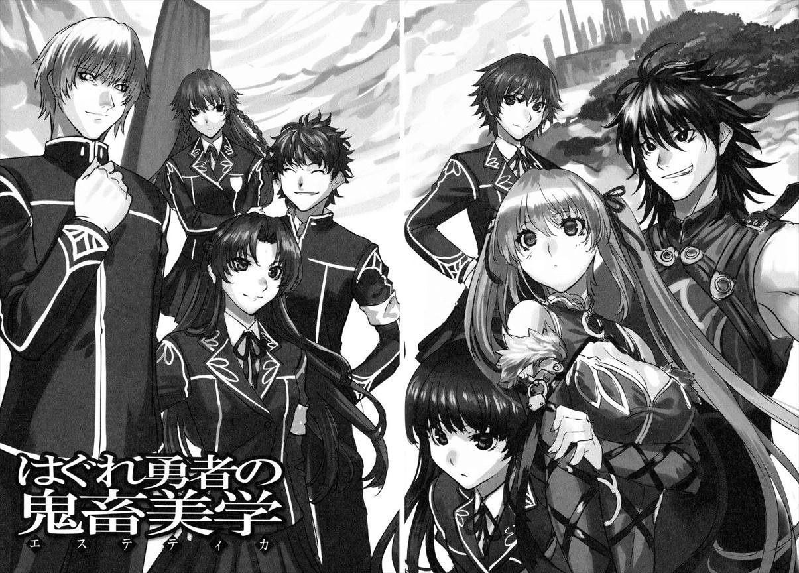
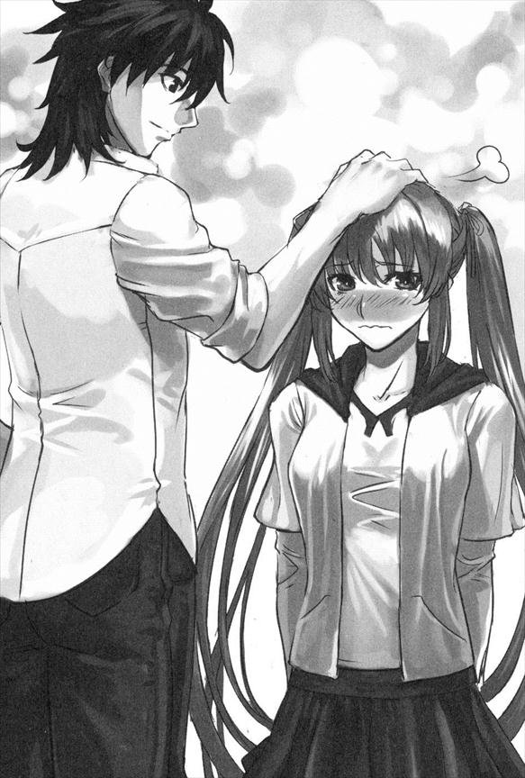
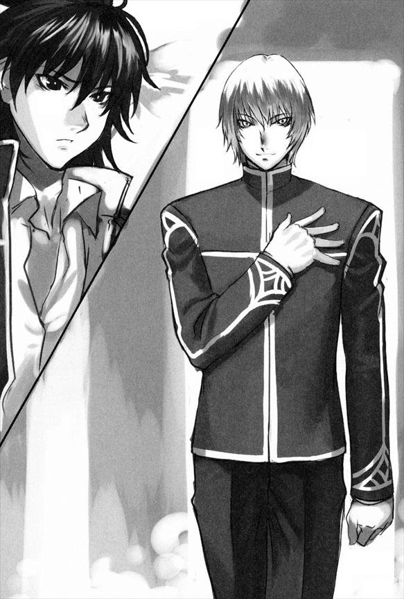
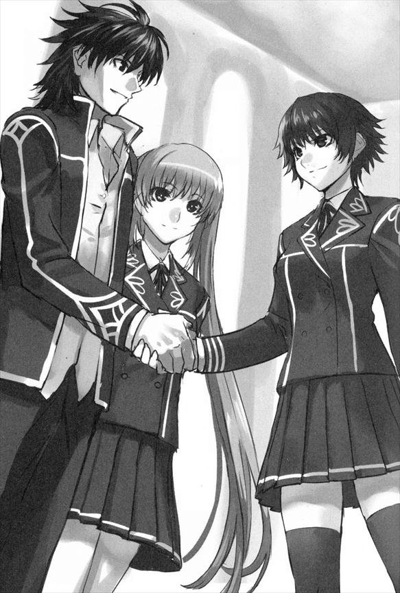
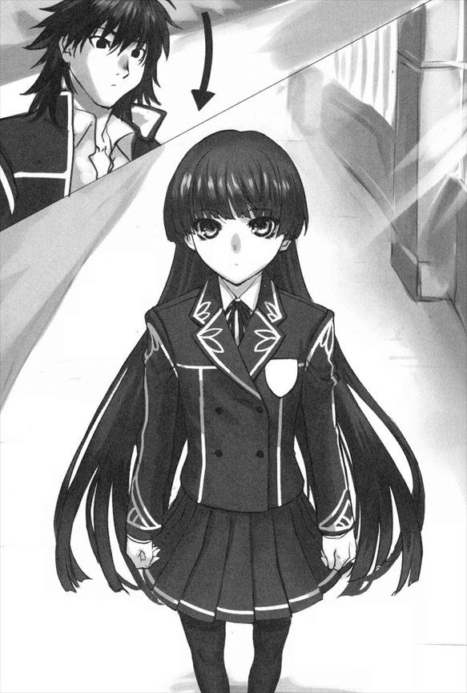
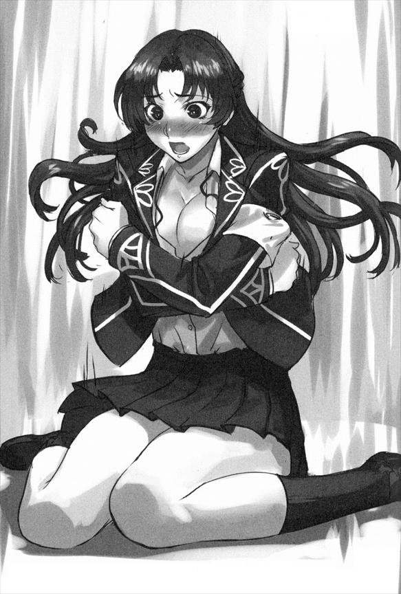
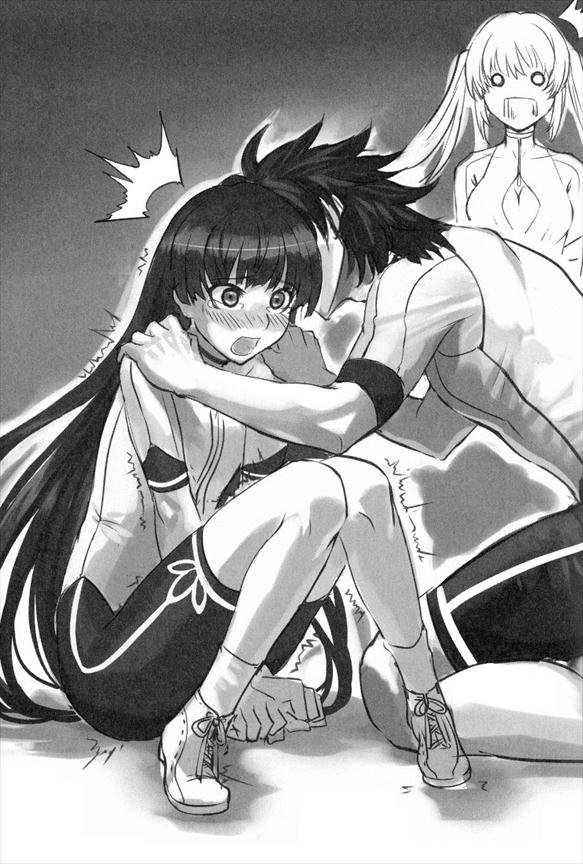
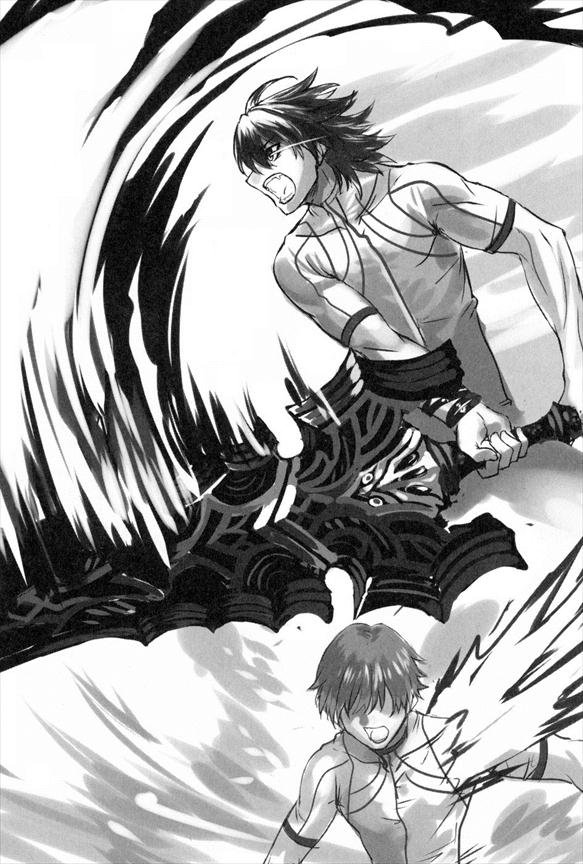
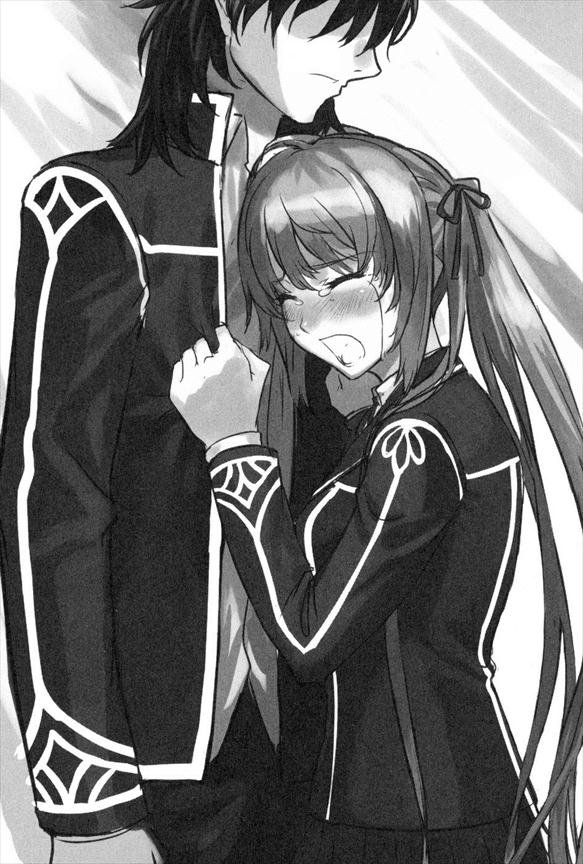

“Uwaaa! Tha- that's dangerous! Hey, are you trying to kill me?!”
Even though he knew very well it was futile, Ousawa Akatsuki couldn’t stop screaming. Since he was running at full speed his shout caused a Doppler effect. It was daybreak and the sky in the east had just started to turn white. Akatsuki was running in the depths of a dense forest. He was carrying a bag about the size of a sandbag on his back while strongly kicking the ground as he strode through. Half a step behind him arrows struck the ground one right after the other. Numerous footsteps chased him like they were trying to surround him. Akatsuki turned around and confirmed his followers. What he saw were blue and white colors completely unfit for the forest. They were aprons and servants' clothes. His pursuers were maids. Furthermore there were forty-four of them. In today’s recession it is difficult to see this many maids even in the streets of Akihabara. His chasers were beautiful girls and women. Akatsuki was thinking. It would be great if we were at the summer beach.
“But it is not summer and this is not even the beach!”
He straightened himself up and pulled his mind back from his illusions to reality. Actually there was a fundamental problem other than the season and the place. In the first place this is not Akihabara; not even Earth. This is another world.
The earth Ousawa Akatsuki is standing on belongs to a different world called Alayzard. Which was why every maid was carrying a weapon of some kind. Like swords, spears and bows. To understand this situation, it is necessary to know something about Akatsuki.
Five years ago. Akatsuki was summoned to this world called Alayzard. In this world where swords and magic were used and a hero and the demon king existed, there was a full scale war against the army of demons led by Galious the demon king. That’s right. There was already a hero in this world. Therefore this is not a story where the young boy comes from another world to become a hero. On the contrary; the summoned Akatsuki had no powers whatsoever. He was an ordinary boy. He was only a bystander and had nothing to do with the future of this world. His luck was that after the summoning, he woke up in the great magic nation Sherfied. He was welcomed by the hero Leon, the queen Listy and others like the fighter Zechs and the mage Loutier. Not only that, but they searched old books to help him return to his world. In the vast forest near Sherfied there is a <gate to another world> in the deepest part of the northern side of the forest. Then, just as Akatsuki was about to return to his world ---- a tragedy occurred. The army led by demon king Galious raided Erdia, the royal city of Sherfied. And in that fight, the hero Leon lost his life protecting Akatsuki from the demon king’s blade. Leon’s death caused despair in the world. This further deepened when Erdia fell. It was natural that the people held Akatsuki responsible. Listy was the only one who could protect Akatsuki, but she couldn’t accept the death of Leon, her lover. She also blamed Akatsuki. She cursed him--- If only you hadn't existed! Zechs and Loutier didn't cover for him either, and after a while Akatsuki disappeared. Everyone thought that he had fled and called him a coward. But he didn't flee.
Risking his life he went alone to the Divine World, where gods dwelt, and trained as hard as he could. In the end he managed to learn a body control technique called Renkan Keikikou, which allowed him to freely make chi in the body, and returned to the battlefield. Then in the war to liberate Erdia he saved Listy, Zechs and Loutier when they got into a tight spot. Akatsuki suddenly became a hero, but there were still quite a few who blamed Akatsuki for Leon’s death. It was especially infuriating for some of Leon's supporters to see Akatsuki and Listy resolving their ill feelings and fighting together. They started to call him cynically a rogue hero.
But Akatsuki quietly accepted his notorious name. Not only that, but he behaved bohemian. As if he were saying he was neither a champion nor a hero. Leon is the hero of Alayzard. Akatsuki still felt that way. He was fine being a rogue hero. That is why on his way to defeat the demon king, if he found a noble oppressing his peers, he crushed him without question. If he caught a rumor about a beautiful girl or woman, he not only flirted with them but also molested them. Finally, after numerous adventures and hardships, Akatsuki defeated demon king Galious.
Unlike the eastern and western parts of castle Erdia’s forest where temples and cemeteries were built, the northern part was left untouched. That was because the deepest part of the northern forest was considered a sacred ground. Thus there were no man made roads, only natural paths between the trees. But even so, the flora was growing as it pleased. If one was not careful enough, it was easy to trip on the fallen trees, overgrown vines and ivies all around the forest.
---thirty minutes. Even though I've been running in a forest like this for thirty minutes already, the number of presences behind me is not decreasing at all. They are serious about this. They really want to catch me.
While Akatsuki was thinking about what to do, there was a voice above his head.
“Master Akatsuki, prepare yourself!”
Two maids fell from the sky. They held long spears. They're trying to attack me from both sides. Nonetheless I can’t be caught. How can I defeat them without causing damage?
Suddenly Akatsuki had an idea. He tried it right away.
“— gotcha”
Akatsuki narrowed himself and dodged the spears. Then when the maids landed and tried to turn towards him
“-----eh”
For some reason both of them sat on the ground with red faces. They realized they had been stripped.
“Well, well, what happened? Are you alright?“ Said Akatsuki with a sarcastic tone. There was a white piece of cloth in his hand. It was the panties these maids wore. He borrowed it in the split second they passed him.
“What? Did you sprain your legs? Let me see under your skirts for a little.”
“N- Noooooo!!”
The two maids ran in panic.
“What can I say? It works like a charm.”
A bitter smile appeared on Akatsuki’s face. In the Divine Realm, his master who taught him the Renkan Keikikou technique was the fist saint Granseiz. He was the user of the strongest martial art. He was also the strongest perverted old man. For that reason Akatsuki not only learned how to use the body control technique Renkan Keikikou, but he also learned how to use it in a slightly—no in a quite perverted way. The rumor that [the rogue hero likes women] was widespread throughout Alayzard. Of course the maids knew that as well. Akatsuki waved his hand towards the back of the fleeing maids, but a rope tied around his hand. There was also another rope on his other hand holding his bag.
“You can no longer escape, Master Akatsuki!’
“Come back with us to the castle peacefully.”
Two different maids appeared from the brush next to him. But Akatsuki stood firmly on the ground and put a little power in his hands, pulling the rope.
“Ah---!”
With only that the two maids flew in the air. He used Renkan Keikikou. The girls, as if pulled by a mysterious power, flew right in front of him. Then while still with the bag on his back he skillfully caught the girls by their waist, one on each of his shoulders.
“Oh, that ear looks tasty.”
He bit the ear of the maid on his left shoulder softly. With that he changed the chi inside her body. Her body shook then fell to the ground. Renkan Keikikou has many uses. If you raise the chi in your body you can heighten your senses or make your body superhuman. And it can be used on others too. Akatsuki did that to the left maid. Her face was in ecstasy, her face was red; it was quite erotic to be frank. Clearly a pleasant feeling filled her whole body. The other maid watching this tried to distance herself from Akatsuki by pushing him away. But he didn't even flinch, and the maid was the one pushed back instead. Then something was slipping through her uniform’s sleeve. It was her bra.
“Ah---!”
The maid crossed her arms over her chest like she was trying to hide her breasts from him. Akatsuki talked to her.
“Tell this to Valkyria. It means a lot to me that she tried to stop me.”
“---“ Then the maid bit her lips and disappeared in a brush. Akatsuki shrugged his shoulders, then turned to the other maid whose chi was changed and who was sitting powerlessly on the ground.
“I’m sorry… you will be able to move in thirty minutes. Please give this back to the other maid.”
He threw the bra towards her then started to run again.
It was only yesterday that Akatsuki defeated Galious the demon king. After that he immediately returned to the royal town Erdia, where a victory party was held for the leaders of the allied kingdoms who fought together with Sherfied against the demon army. Now it was the dawn of the next day. Akatsuki had silently left the castle of Sherfied at daybreak. To return to his own world. Since he thought he shouldn’t be in this world anymore. He mumbled while running.
“That was all good but…”
Apparently his plans were seen through by his friends who had fought together with him. Zechs and Loutier, while reluctant to let him leave, saw him off. The problem was Princess Listy. Akatsuki didn’t understand what she was thinking.
Listy the talented mage was Akatsuki’s important partner. After they got over the shared sadness of losing Leon and reconciled, they formed a party with Zechs and Loutier. The four of them traveled and fought together in the last few years to defeat the demon king.
The hero who defeated the demon king marries the princess and they live happily ever after. Indeed it wouldn’t be strange if it had ended like that. It is completely possible that after traveling all over the world risking their lives, something special forms between them. To be precise, there was a special feeling between Akatsuki and Listy. But they didn’t get together. The reason was that Listy had a lover she couldn’t forget. And Akatsuki also couldn’t forget that man. He was his first true friend after he was summoned to Alayzard. He was a hero among heroes. That is why Akatsuki fought as a rogue hero to the end. And that is why it didn’t take long for Listy to feel something special towards Akatsuki, since she understood his feelings like they were her own. Just like the two of them getting attracted to each other due to sharing the same pain. Still, they didn’t become lovers until the very end. And Listy wasn’t there to see him off. Zechs and Loutier followed him. There is no way that Listy of all people wouldn’t realize his plans. That is why he thought that they ended like that. Then when he started to walk towards the northern forest where the <gate to another world> was, he was stopped by Sherfied’s beautiful maids and head maid Valkyria. Since they said they had a message from Listy he had to hear it. That is why.
“The hero who defeated the demon king disappears the next day? Don’t kid with me! You should cool your head a little while being tied up!”
Even if they say that, I can’t understand it so quickly. The moment Akatsuki tilted his head to the side, there was a sharp metallic sound as forty-four armed maids attacked him in unison.
“Then it turned out like this.”
Said as he stopped. A group of maids stood before Akatsuki blocking his way. Looks like they decided that two or three of them wouldn't stand a chance against him. So this time they have ten at once. It was quite a sight to see them forming a straight line. Akatsuki let out a sigh.
“I suppose you won't back out. Well… I guessed so. It is not easy to let go. Memories that is.”
Still, that could be said about him too. Thus Akatsuki started to walk. And this was his last warning.
“If you still try to get in my way I'll be a little forceful ---don't think badly of me, okay!”
“Unit Alpha was broken through! The other units can’t surround him in time!”
“Unit Omega can you hear me? Unit Omega! – It’s no use! There is no response!”
The head maid Valkyria closed her eyes and listened to her subordinates screaming similar reports without moving an inch. Valkyria and her unit were further in the forest than Akatsuki’s current position. Her objective was to capture him. If that is the case then intercepting has a higher chance of success than pursuit. Thus she used the first attackers to tie him down while she got a head start. She placed small units in perfect positions to surround and capture Akatsuki--- that was her plan. But he couldn't be stopped. He was not even trying to evade the maids surrounding him. Instead he was fighting them head on and cutting his way forward. And he still had time to grope the breasts, stroke the butts and touch the thighs of the maids in the commotion while using Renkan Keikikou to enrapture them.
“Valkyria, if this goes on…”
We'll all fall—after hearing her subordinate stop her sentence Valkyria silently opened her eyes at last.
“It can’t be helped. You should go too… I'll stay here.”
“But…”
“Valkyria…”
Valkyria’s orders were transmitted to the units via communication magic used by three of her most trusted subordinates out of the forty-three standing under Valkyria’s direct command. They could use attack magic too but the northern forest was a sacred ground after all. They couldn't destroy the forest. Therefore a lonely smile appeared on her face when Valkyria saw that they still couldn't give up.
“We already knew that there was nothing we could do to stop that man. Parting is only a matter of time now. Nonetheless Lady Listy gave us a last chance. That is why you must go. If you can't stop him then at least get a last memory from Master Akatsuki.”
“Understood Valkyria!”
“I hope Valkyria can say farewell without regret.”
“Ee… thank you.”
Valkyria silently watched as her subordinates started to run after saluting. She then closed her eyes again. For a second, silence filled the northern forest. Then she heard her subordinates screaming. The screams started to close in little by little. Valkyria had a flashback from five years ago when she first met Akatsuki. Then a faint feeling started to well up from deep inside her heart.
…I mustn’t. Valkyria’s cheek loosened a little as she was thinking. Then.
“Oh, you finally showed yourself, Valkyria!”
A tall young man appeared from the bushes in front of her. It was Akatsuki. Uncombed hair reaching to his shoulders. Black clothes covering his robust body. They were all black as night. His shining eyes were black as well.
There are two types of faces a woman likes. It is either nice looking or sharp looking. Akatsuki’s face was clearly the latter. His eyes were piercing and his face captured many women’s hearts. Audacious expression. Confidence and pride that was almost like conviction which gave birth to an appearance of allowance. He was strong. So strong that it was obvious to anyone. Akatsuki had a unique presence that could stop someone’s breath. Valkyria thought. He is a completely different person from five years ago when they first met. This must be what it means to turn from an ordinary boy into a hero. Valkyria expressionlessly watched Akatsuki.
“Master Akatsuki, please forgive me—you pervert! Do you want to make a legend of an evil spirit who attacks women in the northern forest?”
“If you say that then shouldn't it first be the legend of maids who attack travelers?”
“You say that but you look unhurt to me--- was there anything inadequate in my subordinates?"
“That is not possible. They are your subordinates. They all did their jobs until the very end.”
She bowed to him thankfully. Valkyria had a nostalgic light in her eyes as she asked Akatsuki.
Please tell me!
“My subordinates… were those girls able to make Master Akatsuki remember them?”
“Don’t make me say it. It is embarrassing.”
Akatsuki laughed then replied.
“I won’t forget. Not a single thing in this world.”
“Thank you. I’m sure the girls are happy to hear that.”
She called out his name and raised her spear then took a stance.
“Lastly---- would you please carve me into your heart?”
-- Then not long after, the forest became silent again. It was Akatsuki who appeared from the bush. Probably there wouldn’t be any more maids coming after him. After he looked back one more time to carve Valkyria’s memory into his heart, Akatsuki started to walk again. His goal was the sacred ground in the deepest part of the forest. There is the <gate to another world> leading to the world where he used to live. There are a few gates in Alayzard that connect to different worlds. There are two in the religious Empire of Arekrasta and in the militarist Empire of Disdia. There are other gates too, seven altogether. But the gate he came through was the one here in Sherfied. Thus to return to his own world Akatsuki would have to use this gate.
“I didn't think I would still remember.”
The path made by nature was labyrinthine. If someone unfamiliar with this place entered by accident they would get lost for sure. But Akatsuki didn't have any doubt. He relied on his memories from five years ago. Akatsuki had been here before. After a while Akatsuki noticed a great tree before him. That means his goal is close. The sacred ground lies beyond that tree. The <gate to another world> is about a kilometer from here. Then, while walking, his gaze went to the bottom of the giant tree.
“----“
A girl stood there. She was beautiful like a spirit of the forest. Those who said that she was the treasure of Sherfied were not lying at all. The one standing there was Listy El Da Sherfied.
The last time Akatsuki saw her was at the victory party hall yesterday. She wore an elaborately decorated shining dress worthy of a princess. But she couldn’t go into the forest in an outfit like that. Right now she was wearing white casual clothes. She had tied her waist long golden hair in a ponytail. It was the same she used when they traveled to defeat the demon king. Her unchanging beauty was the same.
“---“ Listy noticed him. When their eyes met they recognized each other. Akatsuki continued to move forward while Listy stayed still. The distance between them decreased. They became closer and closer--- then Akatsuki passed her.
“--- He- Hey wait a minute!”
Probably she didn't expect this. She called out in a hurried voice from behind him. But he ignored her. Akatsuki continued to walk in silence. “Stupid. Wait! Stop joking and wait a little, hey…”
Finally he stopped and made a sigh when she grabbed onto his arm. Without turning to her
“What are you doing? For a princess to sneak out of the castle… On top of that you even sent your maids after me.”
“Th- they said that they wanted to say farewell to you so I gave my permission. I… only came here to check up on them.”
After she said that she leaned her back against his wide back. As Akatsuki felt her weight Listy gave out a faint voice.
“Are you really leaving?”
“Aa, I should’t be in this world anymore. You should know that too.”
“……..”
Listy couldn't say anything as she understood what he was thinking. Even though he defeated the demon king Galious, he was still a rogue hero. Of course there were people who praised Akatsuki as a real hero and wanted him to marry Listy. But if she married Akatsuki, who had opposing forces, that would certainly lead to serious troubles later on, and could very well cause Sherfied to split. Even if they did not marry, his influence as the hero who defeated the demon king remains. Certainly there are peoples both domestic and foreign who don’t think well of him. It wouldn't be strange if that would cause another dispute. And this time it would be a war between humans. That is why Akatsuki decided. He would defeat the demon king alone. Then he would bear all the praise, honor, regret and envy, and disappear from this world. Only then would Alayzard be at peace.
“Not to mention I have something to do in that world.”
There was no demon king in the world he grew up in, Earth. But there was someone who had to be stopped. And that was probably his job. Before coming to Alayzard, he thought it was impossible. But it might be possible for him after he gained power. And there was another reason for him to return to his world. That is why Akatsuki was here right now. Then…
“… forgive me!”
Suddenly he heard a wistful, faintly shaking voice coming from his back. He sighed unintentionally.
And I thought it would be the best to leave without saying a word.
Akatsuki scratched his head. Then he turned to Listy. He knew it was cheating. But when he looked closer, tears flowed from Listy’s eyes. Thus he suddenly kissed her.
“----?”
After seeing Listy widen her eyes in surprise, Akatsuki closed his. Then tasted her soft lips to the fullest.
“---ha…wha- what are you doing?”
After she hastily moved her lips away from him, Listy pulled Akatsuki’s face with full force.
“Because you cried in front of me… sorry.”
Akatsuki looked in her face while rubbing his own. Maybe from embarrassment or from anger, but her face turned red. But she wasn't crying anymore. Thus Akatsuki thought this was for the best.
Ousawa Akatsuki had an esthetic.
That is, if there is a woman crying he can do as he wishes. This is what he thought. There must always be a reason when a woman cries in front of a man. The man must never look away from those tears. Thus Ousawa Akatsuki felt he should be honest with his feelings at least in front of the women crying before him. When a woman cries, if he wants to stop those tears, Akatsuki would stop them immediately.
When a woman cries, if he holds those tears dear, Akatsuki would hug her.
When a woman cries, if he thinks those tears were just, Akatsuki would leave her alone.
When a woman cries, if he feels those tears were lying, he would ask for the reason.
And he would do anything to accomplish that. It might be too forceful to call it an esthetic. But sometimes in the world there are sad tears that must be stopped even if ignoring the woman’s feelings. Thus Akatsuki followed his beliefs. Hate me not your tears.
“—well this kiss was like a farewell present. Thank you.”
“Forcibly kissing a princess of a kingdom…you better remember this!”
“Unless you forget me I won't forget you either.”
Listy unpleasantly raised her chin as Akatsuki said that to her with a calm face.
“Don’t get the wrong idea! I'll forget someone like you in no time!”
“Ah, really?”
Said Akatsuki as he lifted his bag from the ground.
“—well it is time to say goodbye. I go this way and… you go that way.”
He pointed at the dimensional gate and Castle Erdia. They were in the opposite directions. Nevertheless, those were the paths Akatsuki and Listy had to take.
“You don’t have to tell me that…”
Listy gave a snort.
“I feel relieved. Farewell, Akatsuki. I--- hated you.”
She said that much then turned her back to him and started to walk away. Akatsuki saw her off, then as her figure got smaller and smaller he suddenly called out to her. Those was his last words to her.
“ Don't forget what I said to you that day! If ever something happens call me! If you believe me I’ll definitely come for you.”
“--------“
Listy stopped silently. That was why Akatsuki talked to her. No matter what happens in the future, even if they never met again. Even if they never meet again--- he had to tell her this unchanging truth.
“No matter how far we are—“
I swear to you.
“I’ll always be your ally. Never forget that, got it?!”
After Akatsuki parted with Listy he kept moving without further stops.
The further he went the more he could feel the forest become unusually silent. Sound disappeared from the world. And even though it was deep in the forest, the scent of the trees, grass and flowers could not be sensed anymore. When the scent of the flora disappeared, his vision and sense of touch started to sharpen. He had clear vision and could feel the invisible air on his skin as if his senses were stretched out. He had entered the sacred ground.
When he realized, Akatsuki had walked into a natural tunnel of trees. The tree branches covering the top of the tunnel were high so it didn't feel cramped. Numerous leaves covered the sunlight completely. Yet it was as bright as under the blue sky. Soft light flowed through the tunnel to the exit. It meant the end of the tunnel was near. And not much further lay the goal of Akatsuki’s journey.
Well, at last. It was a deeply moving sight. Right now there was a gate in front of Akatsuki. On the stone pedestal there were quartz pillars decorated with geometric motives. These made up the giant gate. On the other side of the gate the forest still continued. But this was the <gate to another world> without a doubt. Because the space surrounded by the gate faintly fluctuated. It was a plane of discontinuity created by the dimensional instability. That proved that it connected to another world.
“I hope it will go alright.”
Akatsuki started to concentrate as he put the sack back on. This should work in theory. I’m going through.
Akatsuki slowly stepped into the gate. It was a firm step which moved him forward. Just before he stepped through the fluctuating space, Akatsuki turned back for the last time. That was his farewell. His last words to the world he had spent so much time in. He said it.
“Farewell, Alayzard!”
Then Ousawa Akatsuki disappeared into the <gate to another world>. There was no sound. The sacred ground in the forest was silent, as if the departure of the hero had been a lie. The only thing still remaining was the silent space fluctuation that occurs when someone travels through the <gate to another world>.
The wind strokes my cheek. Feeling comfortable Akatsuki slowly opened his eyes. His consciousness activated.
“Ah…”
He gets up, slowly shakes his head trying to gather his sleepy thoughts. When Akatsuki woke up there was a blue light piercing the darkness. His eyelids were closed all the time causing his eyes to get used to the darkness so he woke up feeling the gentle light was too bright. Then the wind blew again. As if something was guiding him Akatsuki turned his eyes in that direction. There was a white lace curtain dancing in the wind blowing through the window. Outside the window he saw the night sky. The moon in the sky faintly lightens up the world filled with the silent night. Akatsuki watched the world lit up by the moonlight. He had been seeing this scenery since he was a kid. The asphalt and concrete filled town feels somewhat lifeless. Then he looked inside the room. It was dark but he knew this room. It was familiar scenery.
It looks like he came home. On top of his bed, Akatsuki was thinking about his returning from another world absentmindedly. There is a precise electric clock embedded inside the marble object from Miyano. It showed the same date and same time. It made Akatsuki’s think he had a long dream. But it wasn’t a dream. There is something lying down next to him. It was the large sack he carried on his back when he returned from Alayzard. Usually only those coming from another world can pass the <gate to another world>. But the Renkan Keikikou he learned allowed him to control the flow of chi. He covered his clothes and the sack with his chi. This made the gate falsely recognize that his clothes and his bag were part of his body. Thus he succeeded in passing through the <gate to another world> with them. But the problem is the inside. Akatsuki slowly opened the fastener on the side of the bag. Then something appeared from it like it was flowing out. They were breasts.
“…ah”
The breasts talked. No it was something else. There was something other than breasts. A tasty looking ass and soft tights rolled out of the bag sleeping silently. A gorgeous sleeping beauty was inside the bag. A breathtakingly beautiful girl. Fine looking nose, soft moist lips, shapely ears and shining long twin tails. Each one of them looked like it was carefully made by the goddess of beauty herself. Besides her beautiful face her bodyline was also attractive. Ample bosom that could stop all thoughts. Abundant round buttocks. Nipped in the waist that made men want to touch it. Anyone would dream of a spectacular body like hers. Her beautiful white skin was slightly pink despite the temperature. The peacefully sleeping girl changed her pose comfortably. That made her eyelids open slightly. She looked this way with her amber like eyes.
“Where am I?”
“In my world. You are safe here.”
After hearing his answer she closed her eyes again. Then started to sleep peacefully. Thus Ousawa Akatsuki made a sigh.
It seems everything went well. He made a bitter smile. Even though he has something he must do. He accepted a troublesome thing.
“I want to entrust my daughter to you, eh? I won’t hold responsibility no matter what happens.”
This is the start of a new tale.
Ousawa Akatsuki. Sixteen years old. High school first year. Job: ex-rogue hero
He was summoned to another world called Alayzard and after many hardships he defeated the demon king Galious. After the dying Galious entrusted Akatsuki with his daughter, he had no choice but to return to his world with her in secret. Thus after the ending the tale enters its second stage.
Returned to the real world, it is the start of a New Game.
You ask me with your heart and I answer with deeds.
The thing the hero protects – what is that.
No matter whether you are about to go out or about to wake up, the current time is 7 am. Welcome to “Alarm 07~”.
The introduction of the television program made Ousawa Akatsuki slowly open his eyes. He obviously belonged to the latter group.
“Fu…Fua…Ah?”
The not so fully awoken Akatsuki scratched his belly, as if he did not know where he was. When the sight of the television screen entered his view, he then remembered that this was his home’s living room.
“…Right, I came back yesterday.”
"Today’s doggy ~ Today’s doggy is Mr. Takahashi’s lovely dog “Seven". Every day, she plays with the big brother who delivers milk. It is said that Seven is quite bold. Each time the milkman brother is about to put the milk into the mailbox, Seven will climb over the fence and shove her nose into the mailbox, sniffing excitedly on the milk bottles. After the milkman brother sees this, he will always say “Seven, you stood up today again!”
“...Looks like it’s still the same, what an unintelligible television program.”
The television was currently broadcasting the morning news’ special, which added slightly to the feeling of returning to the real world.
...Why am I sleeping on the living room’s sofa?
His memory was still not coherent. Was it because he was being stupid or because he was lounging in bed? He'd simply take a shower before continuing to think about it. Therefore, Akatsuki trudged out of the living room and opened the changing room doors. He then completely removed all of his clothing, casually shoved it into the dirty clothes basket and went into bathroom. Ah… the position of the shower head hanging from the wall appeared to be lower than his previous impression. Akatsuki slowly squeezed some shower gel and shampoo, and after washing his body and hair, he closed the shower tap and left the bathroom, picked up a large towel and wiped the water droplets off his wet hair and body.
“Oh damn, forgot to prepare some clean clothes.”
This here was obviously his own world, but he had completely forgotten about the accustomed lifestyle he once had. Akatsuki could not help but shake his head and sigh. So he hung the towel around his neck and headed up towards the second floor’s room.
After opening the room door, Akatsuki immediately headed towards the closet to obtain some clean underwear from the drawers.
“Ehhh?”
This time, Akatsuki suddenly noticed that a female was lying on his bed. Judging from the serene sleep that the girl was having, sleeping on this mattress must be quite comfortable.
Now Akatsuki finally remembered why he slept on the living room sofa.
Within his inner feelings, the words “Outrageous” suddenly emerged.
Akatsuki slowly moved to the bed and attentively observed the beautiful girl who was still in dreamland.
...What an outrageous pair of boobs.
Except for the word “Huge”, there were no other appropriate words. It was impossible for people not to pay attention to the slightly shaking huge twin peaks due to the girl’s breathing. Akatsuki could not help but swallow. How in the world did she grow such enormous boobs?
“Let’s first touch the pair of bo... NO, I should first explain the situation. Wake up, Hurry up and wake up! Hey!”
Akatsuki slightly shook the young girl’s shoulder and was surprised to find the huge boobs were also shaking.
...The absolute highest quality...
This rare scene made Akatsuki squint.
“...Unnn...Ah...?”
The girl slowly opened her eyes. Her sleepy blinking eyelids and her hazy vision fell on Akatsuki.
———!
The girl’s face immediately stiffened, which made Akatsuki confused.
“Heyyyy, Are you okay? What’s wrong?”
Could it be the effects of the Dimensional transfer? The worried Akatsuki raised his right hand towards the girl, but the girl’s gaze immediately made him aware of the problem. Yes, the key was the present appearance of Akatsuki.
“This... I can explain... Don’t be nervous, I really don’t have any evil intents. Can you please calm down? Okay?”
While calming the girl, Akatsuki’s heart was desperately screaming “Oh no!”. There wasn't some trivial way to explain the current situation, and the words “mistake” would not help to solve this sudden problem easily either. At the moment when one awakes and suddenly sees the opposite sex standing naked in front of you. The vast majority of the men would be extremely happy about it. However, if the same situation was to occur to the females, the results would greatly differ. The girl’s horrified expression was the best evidence.
It looks like the stimulus was a little bit too strong. Akatsuki took a deep breath and in his heart, told himself that he had to remain calm.
If even he panicked, wouldn't this increase the girl’s misunderstanding? The current priority now is to think of a plan to calm the girl down, so Akatsuki squeezed out a smile. Smiling is a universally renowned language for communications.
“This is my world, please don’t worry.”
“——Put a sock in it!”
After the blunt retort, it was followed with a hot and spicy slap.
“——Looks like I will still have to introduce myself first.”
Akatsuki smiled while stroking his swelling cheek.
“My name is Ousawa Akatsuki, you can call me Akatsuki. Back in Alayzard, everybody called me the <Rogue Hero>. Okay, what else do you want to know?”
“... Why were you standing naked in front of me?”
“Didn't I say it was a misunderstanding? I had just finished taking a shower and entered to get some clothes, and this question is unrelated to my self-introduction isn't it? Believe it or not, that’s the truth. Uh... what’s your name?”
“...Myuu”
“——What?”
The demon king’s daughter bitterly gave out her name, Akatsuki suddenly suspected that he had heard it wrong.
“You...You’re called Miu...?”
Akatsuki, who said the name, expressed an incredible look. This can’t be true right? Isn’t that too weird. However, the girl in front of him showed him a face of disgust.
“...No.”
The girl shook her head.
“It’s not Miu, but Myuu. I’m called Myuu.”
“——Myuu? Oh...So that’s it, ha ha ha.
Akatsuki made a few sounds of a hollow laugh, apparently he really heard it wrong.
But the sound of the girl's name also made Akatsuki remember the critical things that must be addressed as soon as possible. For Akatsuki, the girl’s current presence was like an alarm, constantly reminding him that he could not be lazy.
———Is this the mischief from the Goddess of Fate?
Akatsuki scratched his cheeks. After placing a simple breakfast of toast, poached eggs and milk on the table, Akatsuki looked at the girl sitting opposite of him.
...Having such an explosive body figure that would look down on everyone, but the tone of her voice was no different compared to little boys.
“...I still feel that your eyes look very disgusting.”
“You’re thinking too much. You have just arrived to a completely different world, it must be because you’re too nervous."
While being confused, Akatsuki could not help but secretly admire the girl’s courage.
...Not everyone dares to go alone to a completely unfamiliar world.
During the time period when he stayed in Alayzard, Akatsuki along with Listy, Zechs and Lotier formed a 4-man adventuring team.
But afterwards Akatsuki singly challenged the Demon King, Galious, and alone bore the kindness and grudges of defeating the Demon King. As long as Akatsuki left Alayzard, it would not leave any aftereffects.
Akatsuki’s way of thinking had only obtained one person’s agreement. That was the Demon King, Galious. For Alayzard’s peace, the Demon King, who leads the demon race, also had his own way of thinking. Galious decided the Demon King’s palace—to be exact, in front of his throne—would be the location of the duel between Akatsuki and him. Only at that place would the troops of the two camps not be aware of the one on one duel.
However, the Demon King’s castle stationed a large number of demon warriors, thus Galious specially dispatched his own daughter to act as a guide, hiding this information from the demon warriors, and brought Akatsuki into the castle.
There was neither conversation nor dialogue between the two men. The final battle started off instantaneously, and the intense death match ended with the victory of Akatsuki.
Before his death, Galious made his last request to Akatsuki.
“Please take care of my daughter.” The girl’s mother is a dark elf, but her appearance looks similar to the past me, there should be no risk of being seen through.
This was the Demon King’s final wish. The past Demon King was once in love with a dark elf and eventually gave birth to a daughter between the two of them. However, his loving wife eventually died at human hands. This heavy blow made the Demon King discard his human identity and completely devote himself to the demon race’s camp.
At the beginning, Akatsuki did not want to accept this undesirable request. However, the very thought of the princess, after the sudden death of the demon king and the destruction of the kingdom, had to face this cruel fate, he did not have the heart to refuse the demon king’s wish. Not to mention that she was the Demon King’s daughter; she could eventually fall into enemy hands or even get pushed into being the demon race’s new leader and be killed in battle. There was absolutely no happy ending. In addition, Akatsuki had already decided on the idea to bear all the feelings of gratitude and resentment, and disappear from the world. Once Akatsuki left Alayzard, the human’s vengeance would definitely point towards the Demon King’s daughter who was still remaining in this world. Based on his own principles of not letting others bear responsibility, Akatsuki reluctantly agreed.
However, Akatsuki also made a condition, which was that he must go back to his own world and sort out a very important matter. If Galious wished to entrust the girl to Akatsuki, he must accept the possibility of Akatsuki taking her with him back to his own world. Akatsuki did not inquire for the Demon King’s will, but instead turned and stared at Myuu, asking if she was willing to entrust her fate to him.
If the answer is yes, please hold my hand.
Myuu nodded without hesitation and held tightly to Akatsuki’s right hand.
This act was completely different from Akatsuki’s expectation; he had assumed that Myuu would not accept. Myuu’s expression was very calm, and she said that Galious had foreseen his own death. If the Hero who defeats the demon king really appears, from then on, please go follow him and live together.
Akatsuki immediately looked back at Galious. The sad Demon King had long been out of breath.
“——How did you bring me to this world? Alayzard’s residents cannot pass through the <Gate of Another World> right?”
Myuu still had an incredulous look on her face. Akatsuki then easily shrugged.
“Fortunately, I just found a loophole.”
The truth is that by utilizing Renkan Keikikou he messed up the cognitive abilities of the <Gate of Another World>. This was one of the skills that Akatsuki had learned in the past at <God’s Interlayer>, which Myuu certainly did not know. Strictly speaking, almost no one had knowledge of this method in Alayzard now. The fact that Myuu came to this world was like a blind spot in a blind spot.
“Oh...”
Myuu bowed down in silence. Akatsuki originally thought that Myuu would continue to ask further, so Myuu’s reaction made Akatsuki feel a bit surprised.
After a moment of silence ———
“——What do I do next?”
Myuu took the initiative to ask.
“In this world, I could be described as an alien. If my true identity is exposed, wouldn’t it cause a heap of trouble?”
“Ahhh... Yes, that’s correct, but there’s no need to worry. In this world, the fact that you are Alayzard’s notorious Demon King’s daughter, no one knows your true identity except for me and you.”
“But there is always a possibility? A large amount of magic that I use can only be used by the demon race."
Myuu’s tone was very uneasy, but Akatsuki still shook his head.
“Don’t worry about it.”
“Why? Could it be that this world cannot use magic?”
“No, just the opposite.”
Akatsuki exposed a mischievous smile.
“Magic does exist in this world now, but only just recently.”
Akatsuki is not the first person to be summoned to an alternative world.
The amount of people summoned to an alternative world in the past numbers several thousands.
Initially, it created a huge amount of confusion, but as more and more people were summoned, the research about this phenomenon gradually matured. With nearly half of the people coming back from the alternative worlds safe and sound, it solved many of the mysteries.
The summoning to alternative worlds began approximately 30 years ago, but there isn’t only one alternative world. This truth was obtained through the people who came back safe and sound. Alayzard, which summoned Akatsuki, is only one of the multiple alternative worlds, and to up to this day, the total amount of alternative worlds confirmed exceeds 10. The people who are summoned all share some common similarities: every one of them is a male or female in their teens, and each of them will learn a special ability like magic in the alternative world.
After returning from the alternative world, the original world’s time will not elapse. This point is a great surprise for the scientists. The abilities that were obtained at the alternative world can also be used in the original world. The returnees, who obtained an ability surpassing the human capacity, will of course be regarded as a new hope for human development, and often will be treated as a dangerous existence.
Therefore, the new United Nations—G7, which comprise of Japan, USA, Russia, China, India, Oceania Federation and the European Union—founded an organization a few years ago to protect and monitor all alternative world returnees.
That is <BABEL>. The purpose is to guide the young men and women who have special abilities along the right path, and allow them to contribute to human prosperity and development. <Babel> is established within all member states’ territories of the New United Nations and Japan even turned Tokyo’s satellite city into campus territory, giving them the right to self-govern.
The huge campus houses all the alternative world returnees, while establishing institutes at all levels such as primary school, secondary school, university and even research institutes. At the same time the returnees receive general education, the school will specifically design a curriculum for each returnee, training the special abilities they acquired in the alternative world.
Enrollment eligibility is only for returnees who came back from an alternative world. Conversely, the returnees who came back from an alternative world are all forced to study at <Babel> without exception. Their intention is to isolate the returnees with special abilities from the general population in order to manage them.
In short, <Babel> will not let go of any one of its returnees.
“——So, we will also have to study at that school?”
“Exactly, the self-governed region and <Babel> gathers a lot of returnees with special abilities, so even if there is one more person who can use magic, it will not attract any attention.”
Afterwards Akatsuki paused for a moment, he continued to speak:
“In fact, this house is also located within the self-governed region. My older brother is a graduate of <Babel>, Dad rarely comes home, and there are no other family members, so staying here is very safe.”
“Oh...”
Myuu seemed to be relieved, but Akatsuki shook his head.
“Don’t think that you can avoid <Babel>’s investigation. As I have said, <Babel> will not let any of the returnees go. It could be possible that last night they observed that I was the only one in the house and suddenly two dimensional shifts reactions occurred. If I guess right, people from <Babel> should appear very soon.”
“W...Well, what should I do?”
“Rest assured, I have an excellent plan.”
Compared to the pessimistic Myuu, Akatsuki seemed to be much more optimistic.
"When I decided to take you to this world, I had already prepared a battle plan. Although I can not guarantee a 100% success rate, but... it should pass successfully.”
Why so certain?
“——Because the goddess of fate who likes mischief seems to be standing on our side.”
Inside the self-governed region is an institution that guides the alternative world returnees onto the right path.
It is situated on a man-made island inside the corner of Tokyo Bay's Firefly observatory.
Aside from the sea and air route, you can also arrive to the self-governed region through an undersea tunnel.
There is a strong contrast as a group of technologically advanced people created this town while maintaining the natural beauty of the mountains. It shows a future outlook of coexistence between technology and nature, and could be called the most desirable urban scenery.
In the center of the man-made island, there is a university that is merged with the natural environment. Aside from the forests, ponds and small hills, the research institutes, laboratories and even the sports ground, the different sized facilities are lined up row by row in close order. One of the most eye-catching is the super high-rise white school building that goes straight into the skies.
The alternative world returnee’s school hall.
Inside the sanctuary of the self governed region, the great building which everyone is in awe and fear of.
<Babel>.
Inside the tower walls is a circular space. The wall was built as a stairs-shaped auditorium. This place is in fact the third arena, and also where JPN Babel entrance inspection is held.
The reason why it is not an “examination” but an “inspection” lies in the fact that all new students are admitted; the investigation focuses on the performance of the new students in the alternative world and their current abilities. Most of the students belong to the fighting type, but there are still a small number of students who specialized in research; using the entrance inspection to identify the strength properties of everyone—or otherwise known as aptitude—is essential.
The investigation is divided into four major areas, namely medically examination, the use of elemental magic to show the past history to the future, an oral examination conducted by examiners to determine personality traits, as well as combat skill instructors’ technical test.
Myuu and Akatsuki were currently waiting for the medical examination reports. At the scene, there were no other admitted students. There are several thousands of alternative world returnees, but compared to the world’s 6 billion population, the probability of occurrence is actually quite minimal. If it is confined solely to Japan, the number will become ever lower, and considered rare. That is the reason why the governments around the world actively try to manage the returnees.
At the arena lounge, resting on the seat was Akatsuki, leisurely straightening both of his legs, waiting for the inspection results. After looking at Myuu, who was ill at ease, beside him, Akatsuki could not help but sigh.
“Can you please have some confidence okay? Doesn't your current appearance make you even more suspicious?”
“What if they found out I am a person from the alternative world...”
Myuu intentionally lowered her voice, but Akatsuki nonchalantly waved his hand.
“Relax. Your boobs are slightly bigger, but it is still in the acceptable parameters.”
“I do not mean this!”
The composition of blood and the physical structures cannot be faked, what if they really found out...!
Myuu, biting her lower lip tightly, stared uneasily at Akatsuki.
At that moment, the medical staff with the inspection results appeared.
“Ah... Ousawa Akatsuki?”
“That’s me.”
Akatsuki heard this and immediately raised his right hand. The medical staff opened the file and glanced over it once and immediately handed the file to Akatsuki.
“There is no problem with your health status, please bring this data and accept the Norn Screening.”
“Okay, Thanks.”
After Akatsuki received the document file, the medical staff turned to face Myuu.
“Ousawa Miu.”
“Y...Yes...”
Myuu timidly stood up, the medical staff opened the file, quickly glanced through it, but suddenly his gaze stopped at a spot in the inspection report.
“———!”
Myuu suddenly stiffened her body.
———A moment of tension
Only to see the medical staff closing the file.
“There are also no abnormalities, please accept the Norn Screening.”
“Tha...Thank you...”
Myuu took the file with a trembling voice, and immediately sighed heavily.
...Thank god that it is finally over.
At the same time she patted her chest softly, a large hand was suddenly placed onto her head.
A deep voice with a trace of laughter passed through her ears.
“See, I told you there isn’t any problem.”
Myuu raised her hand to touch the top of her head, as if to confirm the feeling of Akatsuki. Once she thought that her identity was not exposed and she could rest assured, she sighed again. On the cover of the file was written an unfamiliar name. Myuu silently read those words.
...Ousawa...Miu...
This was the name that Akatsuki had prepared for Myuu. It originally belonged to the current whereabouts unknown Ousawa’s oldest female daughter, who was also Akatsuki’s younger sister. When learning about this plan from Akatsuki, Myuu had suddenly understood why the moment when she had given out her name, Akatsuki had shown such a weird expression.
———Indeed, Myuu’s blood components and body structure were different from the humans of this world, but whether it was the results of the blood test or the CT scans, she still passed successfully.
Why? The reason is very simple. Through the dimensional shift’s feedback, a few alternative world returnees’ bodies will experience significant changes.
However, Myuu only learned about this matter from Akatsuki yesterday, so there was no time for her to be psychologically prepared.
On the second day after the two of them came to this world, they had received an admission application from Babel. Based on human rights considerations, on the surface, Babel’s admission is based on applications, but the truth is that it is a mandatory order, there is no other choice. Within a week of receiving the application, they must surrender—that is, to go to school—or else Babel will dispatch personnel to forcibly summon them there. But this time, the application was personally brought by a teaching staff member of Babel. This was within Akatsuki’s expectations. Thus, when the other party asked for Myuu’s identity, Akatsuki, without any embarrassment or panting, told a flagrant lie.
——— This person is my sister.
After disappearing for a long time, she only returned recently, and we were summoned together to an alternative world and came back.
Akatsuki’s excuse had not been questioned, having all normal test results was the best proof. Since alternative world’s experiences will cause changes to the human body, having changes in the memory is also very reasonable. As long as you put the blame of the unknown parts on memory loss, naturally you will successfully pass.
...Up to now, it had gone through fairly smoothly.
“—— The next step is the main event. If you are able to safely mix in and pass, then it will be just fine.”
From what Myuu heard, Akatsuki’s tone was somewhat stiff. Yes, next was the Norn Screening.
Using elemental magic to perceive the past, present and the future history.
The goddess who decides the past “Urðr”, the goddess who decides the present “Verðandi” and the goddess who decides the future “Skuld”
The so-called Norn Screening is to use elemental magic to acquire these three goddess’s abilities, perceiving the examinee’s past, present and future. However, the content of Norn Screening does not take the examinee’s life in the form of chronological order and provide tremendous amount of detail, but uses a poem type mode to roughly show the examinee’s history.
No matter what you have done in the past, what kind of magic you have now—that is, the connection between a superior dimensional being, and in the future what goals you use your abilities to achieve can all be clearly shown in the Screening.
In short, Norn Screening is called the most important topic in Babel entrance inspection.
But there is no absolute in the future history. The examinees may embark on another path through their own will, and therefore, the result of Norn Screening only shows the future with the highest probability of occurrence.
Akatsuki came in front of the inspection magic officer and handed over his own file.
The inspector took the data and indicated for Akatsuki to sit down.
“Ousawa Akatsuki, please close both your eyes and try to relax.”
Akatsuki could not help but coldly snort.
“This isn’t some sort of fake hypnotism right?”
The color of the inspector’s face darkened.
“—You’re not allowed to speak. Empty everything and let your consciousness float in the middle of darkness.”
“Okay Okay.”
Akatsuki followed the voice and closed his eyes.
The following few seconds involved Akatsuki emptying his heart, and not thinking. During this time, the inspector took up the pen and wrote rapidly.
The speed was surprisingly alarming. By the time Akatsuki opened his eyes, the inspector had already finished recording it down.
“Good work.”
The forensic officer, who was waiting by the side, took the record from the inspector’s hand and quickly scanned the contents.
“Well...T..This is...!”
The forensic officer suddenly widened his eyes, and the inspector beside him curiously extended his head around. During the Screening, they are unconsciously writing down automatically, so even the inspectors do not know what was written.
After the inspector read the Screening records, he suddenly jumped off his chair. With a very stiff expression, as if he saw an incredible content.
“Doctor, how is it?”
Other staff members also leaned over.
“Did some kind of problem occur...?”
Myuu, who was behind him, anxiously asked.
“God knows, I do not have anything to be ashamed of in the past.”
After saying these words, Akatsuki smiled slightly.
...There was a lot of perverted past though.
After the forensic officer discussed with the other staff members for some time, he placed the records on the table.
“Ousawa, is the description on the record true?”
“Let me first take a look before I answer.”
So Akatsuki quickly glanced over the poem written on the paper.
''In the World of Alayzard, you, who experienced despair and loneliness, embarked on the path of a True Hero,
Even after you defeated the tragic Demon King, your battle is still not finished.
The, you, right now do not have the blessings of the gods,
Only the truth of the heart will lead you onto a new height.
In the nearby future, the, conqueror, will face a decision.
Under the two rays of hope, select the correct path ———
This was the first time Akatsuki took a Norn Screening, and he did not know how to interpret the contents of the poem, but since the poem divided into the three sections, it should represent the past, present and future. The past and present have already been determined, the poem only described the truth, but for the future, it includes uncertainty factors, and the context tends to be conservative and finally imply an ending. Interestingly enough, the past and present both used “you”, but at the future it turned to “conqueror”. Did this represent the path he took to reach newer heights or was it his mission to lead the conqueror who faced a decision to the correct path?
...Suddenly a conqueror emerges.
Akatsuki could not help but have a wry smile while shaking his head.
Whether the conqueror referred to himself or someone else, Akatsuki would not be too surprised.
Wasn’t that it?
At least those two people had already stood on the highest point of this world.
This text clearly described the upcoming task that he was about to carry.
But aside from Akatsuki and those two people, probably no one else would understand the meaning of this text.
The only thing that puzzled Akatsuki was “Under the two rays of hope, select the correct path”. Perhaps in the “nearby future”, he would naturally find the answer?
At this time ———
“———Ousawa, is the description of the past true?”
“...the past?”
The forensic officer eyes were on the part that Akatsuki did not care about. Akatsuki carefully read the poem again and did not find any problems.
“...Ah, it should be the truth.”
The only controversial point is that he himself was only a <Rogue Hero>, the <True Hero> should have been Leon instead.
Perhaps because he defeated the Demon King, he was described as a <True Hero>.
At this moment ———
“Ousawa!”
“Wha...What is it?”
Akatsuki, who bowed his head and deep in thought, was shocked by the forensic officer.
The delighted forensic officer could not conceal his inner excitement.
“The past Norn Screenings have never shown a <True Hero>. If this is really true, you could be JPN Babel... No, the first person in Babel history worldwide!”
“Really? But only a small part of people called me that title.”
To be honest, the <Rogue Hero> fit his image more.
“The number of people does not matter, the results of the Norn Screening is the main point.”
The forensic officer nodded.
Being summoned to the alternative world is equivalent to opening the door of learning magic, but for whether you can successfully obtain magic and achieve a strong power, a person’s innate gift and talent is the most important part. Just surviving in an unknown alternative world is a commendable achievement. Only a handful of people will get a chance to fight on the battlefield, not to mention obtaining a dominating special ability. Based on this sense, Akatsuki was undoubtedly among the minority of the minority.
However, the inspector also showed a puzzled look.
“...But there is a place that I do not understand. According to current description, you did not receive the blessings of the gods. I think this should represent that the current you cannot use magic...”
“Ah, of course.”
Akatsuki replied without any hesitation.
“———From the beginning, I can’t use magic.”
The results of the Norn Screening and Akatsuki’s explosive declaration shocked all the inspectors and forensic officers on site.
Akatsuki was not only the first person recorded as a “True Hero” by the Norn Screening, but at the same time, was the only exception as an alternative world returnee who could not use magic. The Babel school admission was therefore suspended and everyone on site, without exception, directed their attention on this matter and conducted a lively discussion. In addition, the word “Conqueror” on the description regarding the future is also highly regarded. In the past, there had also been a few returnees with Screenings about the “Conqueror”. To this day, these returnees all held key positions that guided the world to the future, Thus, Akatsuki’s results naturally became the most urgent item and were sent directly to the Babel school’s highest authority.
...Fortunately, my report does not have any problems.
Compared to the huge uproar of Akatsuki, Myuu’s Norn Screening, on the contrary, passed successfully. It could be said that she worried too much.
''In the alternative world of Alayzard, under the intertwined tragedies, the Princess’s happiness has been deprived,
You, who lost everything, only a thorn infested trial remains.
The current you bathed among the gentle wind,
The gentle wind will become a storm, and call forth other companions.
Loneliness will always follow behind you like a shadow,
Whether you will be alone, the choice belongs to you. Whether you will be isolated, the choice belongs to your partner.''
The poem that described the past had the word “Princess” appear, and Myuu could not help but break out into a cold sweat. But just like bards who talk about singers and dancers, generally, this description is often seen within a female’s poem, and does not represent a special meaning.
The poem that described the present mentioned about “wind”, which represents the magical properties. As for the future description, it was currently still ambiguous.
But the future is basically filled with possibilities, thus it was not surprising. As long as the individual decided on a goal or was aware of one, the future description would become more accurate, Thus, the inspectors and forensic officers had made suggestions for a retake after a period of time.
The Norn Screening was finally over. The thought of her escaping the crisis of exposing her identity made Myuu feel relieved.
At that moment ——
“Congratulations on passing.”
Akatsuki gently patted Myuu’s shoulder.
“Tha...Thank you…”
Her pale face managed to squeeze out a tiny stiff smile.
From now on, she is no longer the Demon King Galious’s daughter.
In other words, she must comply with the agreement last night, to realize her promise.
In order to conceal her real identity, no matter how reluctant she is, she must still try.
“On...Oniii...Oniii-cha...I.. I still can’t say it out!”
With both cheeks burning hot, it was almost impossible to speak. No, I must do it.
In order to survive in this world, there is not any choice.
—— This is the promise between my father and I.
Akatsuki smiled slightly, and gently stroked Myuu’s head.
“Do not force yourself, just temporarily call me Akatsuki. No matter what, from now on, we are one family now — Miu.”
This was the moment where Myuu was born in this world with a brand new name and identity.
The following oral examination was also passed successfully without any problems occurring. The key point was, of course, for Miu and Akatsuki to take the examiner’s inquiry together. Since they had returned from the same alternative world, and the two of them were in a brother and sister relationship, Akatsuki’s specifically made a proposal and asked the examiner to make a joint interview, which resulted in the examiner accepting it.
Although joint interviews are a rare situation, it does not mean there isn’t a precedent. When Miu did not know how to reply, Akatsuki would take responsibility and round things up in a timely manner. This was one of the reasons the two passed successfully.
Now both of them appeared in the arena’s stage.
“This is the last stage, allow me to see your strengths.”
A male who was approaching his forties said to them.
He was the combat skills instructor responsible for testing out Miu and Akatsuki.
“There is a variety of weapons here that you two are free to select. Some of the weapons might not be as finesse, but please first deal with it. After you are formally accepted, the school will provide the best weapons based on each individual’s needs. Also, this examination does not restrict the usage of magic, it is fine for you two to use magic to decide the victory. In short, select your most skillful, your most powerful way to display your strength.”
As the combat skill instructor said, the walls were covered with a variety of strange weapons. Miu, following the order one by one, was deciding while at the same time contemplating carefully within her heart.
...The opponent utilizes the halberd which is strong against long range attacks, so…
Among all the weapons, Miu picked the single-handed short sword. She was a magician, not a warrior. Before activating magic, it required some time to concentrate. In order to avoid the opponent’s attacking while chanting, a small weapon was necessary for defense.
As for Akatsuki, he casually put his hands behind his head.
“Ah, I do not require weapons.”
“Quite confident huh, are you sure? I was taken back during the Norn Screening when a <True Hero> appeared, but only to find out that you can’t even use magic.”
After saying this, the combat skills instructor laughed.
“—— It can’t be that you don’t even know how to use a sword right?”
“That’s not it. During the time at that world, I was basically fighting with a sword.”
“Well, you decide then, just don’t overdo it. But the results of your combat abilities are related to your placement after admission, so deliberately hiding your strength will be your loss.”
“Didn’t you want us to show off our strength? That’s why this is enough.”
“Well, it is your choice. Once you’re ready, let’s begin. Having both of you come at me together is fine too, please bring out your real strength.”
The combat instructor lifted up the halberd.
“HeyHeyHey, that isn’t good right?”
Akatsuki’s face suddenly showed a smile filled with confidence.
“What if you get instantaneously killed by me, I can’t let you lose all your pride right?”
“Youuu...You should say less words, okay?”
Akatsuki’s plea was honestly too intense, so Miu quickly tried to diffuse the situation. However, the combat skills instructor seemed to be infuriated.
“This you don’t have to worry about. I have been an examiner for many years, I have confidence in my own strength. In the past, I have almost never been beaten by the new students. And even if I am not as skilled as the others, your attacks won’t damage me.”
Why?
“Babel school’s campus is enclosed within a special barrier, any physical or magic attack will only affect the opponent’s mental status and cannot harm the opponent’s body. That said, I will still feel pain and may even lose consciousness, but within the effects of the barrier, that is the biggest amount of damage that can be done, so you guys can safely attack.”
This should be a measure to prevent trespassing students and teaching staff members from having personal fights. An alternative world returnee is like a powerful time bomb; in case of a conflict with each other, there is no guarantee that it will not cause any unnecessary casualties. To reduce this sort of loss, the school set a strong defense barrier within the Babel school campus.
“Well then, there is no problem.”
Akatsuki gently stroked his chin.
“Miu, you’ll start first.”
“Huh? But the instructor wants us together...”
“It does not matter, the instructor also did not say it must be together — right?”
Akatsuki looked at the combat skills instructor in front of him. The two of them were separated by Miu.
The combat skills instructed nodded.
“Ah, that’s okay too, you guys can decide.”
“See.”
Akatsuki said while smiling.
“That’s right, ears over here.”
After Miu followed the orders and lifted her right ear, Akatsuki whispered beside her ear.
“—— How’s that, no problem right?”
“It is not a problem, But… are you really sure you want to do this?”
“If there’s no problem, then just go ahead.”
Akatsuki gently pushed Miu shoulders and brought her in front of the combat skills instructor.
“Is your fighting style using weapon or magic?”
“It’s magic, the short sword is only a weapon used for defense...”
Miu’s eyes fell to the short sword in her hand. After the instructor saw this, he could not help but smile.
“You can rest assured about this point. My goal is to test your strength; I will not initiate the attack. Since it is the use of magic, you can begin the chant now.”
“Yes... uhh, pleased to meet you.”
After bowing down, Miu began to concentrate. Just seeing a magic circle expanding by her side, bursting with a dazzling light, it turned into a defensive effect barrier.
“Hmm...”
The combat skill instructor expression changed and he took a battle posture. The more powerful the magic, the stronger the barrier needed to avoid suffering from attacks during the chanting phase. Miu made an abnormally strong defensive barrier, which meant that the magic she was about to cast had a considerable degree of power. Miu, entering the chanting phase, could clearly see the combat skills instructor calculating the time. The defensive barrier, used for the chant, must be cancelled the instant before activating the magic. Otherwise, the magic will hit the defensive barrier and the power will decrease significantly. Thus, the defensive barrier will disappear at some point of time. It is a very important signal during a magical battle.
...Do I really have to do this?
The moment Miu activated her magic, she felt some guilt.
Because she did not cancel the defensive barrier.
“Ah——!”
The combat skills instructor was deeply surprised.
After a burst of strong wind, a tornado surfaced in mid-air. The tornado did not rise from the ground to the skies, but rather from Miu to the instructor in front, directly hitting the target.
The unprepared instructor’s entire body flew off and heavily hit the arena walls.
“Guuu...!”
After standing up steadily with difficulty, the instructor took a deep breath and raised his head.
A dazzling light followed by an explosive noise came towards and impartially hit the instructor.
During the emergency, the combat skills instructor adopted a magical defense, but the magic power of Miu far exceeded the instructor’s mental strength. This time, the instructor could not stand it any longer and powerlessly lay on the floor.
Although it will produce a protective barrier during the chanting process of performing magic, a high class magician can cancel the generation of the barrier. Because he was blindly calculating the activation timing of magic, the other side undoubtedly gained control. But then again, the protective barrier is only one method of deception in magical combat; just cancelling the barrier is not enough for experienced instructors to fall into the trap.
In truth, Miu’s defensive barrier was just a cover up. She first pretended to activate the barrier and then took the opportunity to activate magic. This is a highly skilled magician’s preferred high class skill. While chanting magic and cancelling the defensive barrier then activate a disguised barrier, at first glance it may only seem like three steps. But, in fact, it's necessary to maintain a high degree of balance between each action. If one of the steps failed, the magic will not activate.
Therefore, this technique is not applicable during the ever-changing battlefield. This time it was just a simple test, plus the other side stood motionless, which led to Miu succeeding easily.
“HeyHeyHey, is that really true? You are quite powerful.”
Akatsuki could not help but compliment Miu’s performance. Defeating an enemy who stood motionlessly is not rare, the rare sight was that in addition to the tornado, Miu actually even added lightning magic afterwards. In truth, Akatsuki only made the suggestion for cancelling the defensive barrier and activating a disguised barrier, but he could not believe that Miu’s performance was beyond his imagination. Of course, chanting two magics together is not as difficult as it seems; however, the chanting of the two types of magic, and at the same time, cancelling a defensive barrier, and adding a disguised barrier, this is not something every magician can do. According to Akatsuki, probably only Listy, Loutier and Galious, etc, a few dozen magicians had this capability. This meant that Miu’s strength was definitely in the ranks of a master mage. Being the demon king’s daughter wasn’t just for show. After the other staff members performed first aid on the combat instructor, Miu returned to Akatsuki’s side.
“I don’t like this sort of underhanded tricks.”
“It does not matter. The combat instructor cast a magical barrier in time, so the damage should be reduced. Besides, no matter how serious the injury, at most, it is only a temporary concussion and is not life-threatening. The only loss I see is that his clothes turned into charcoal.”
Laughing at the same time, Akatsuki twisted his shoulders.
“Then next, it’s my turn. Instructors, can you hurry up? Your body is unwell but there is no damage right?”
“Please...Please...wait for a moment...”
The instructor, who was checking for injuries on the combat skills instructor, seemed to be hesitating.
“The damage is more serious than expected, I am afraid he will awake after two or three days. It looks like he is unable to act as your opponent.”
“Then what do I do? Being admitted without being tested in combat?”
“T...That is obviously impossible.”
“Are there no other combat skill instructors?”
“There is some, but in order to change the entrance examination examiner, we must obtain permission from the high level executives such as the headmaster. The other combat skill instructors also need time to be prepared.”
“——That being said, why don’t I temporarily act as the examiner.”
A voice came from the arena’s entrance, and everyone on the scene turned and looked at the rear.
The owner of the voice was a teenager with a pair of sky blue eyes and silver hair. Covered under the Babel school uniform, his body seemed to be quite skinny, but insiders could tell that it was a well-trained body. What seemed to be an ordinary stature revealed a stable and unmovable aura. This was the confidence that a truly strong person should have.
He is not a fool, his strength is perhaps comparable to mine...no...maybe even slightly stronger.
After guessing the gap between the enemy’s strength and his own, Akatsuki could not help but narrow his eyes.
“Who are you?”
“First time meeting you, Ousawa Akatsuki. I am JPN Babel school’s student president Hikami Kyouya.”
Kyouya responded to Akatsuki’s question with a hearty smile.
After seeing Kyouya’s appearance, all the staff members at the scene revealed apologetic looks.
“Excuse me, sorry to bother you during the holidays to make you take a trip here personally.”
“That’s okay. I already know the results of the Norn Screening. If the Screening’s results are accurate, this naturally belongs in my jurisdiction.”
“...How strange...”
“Isn’t the student president only the representative of the students, why do all the teachers on the scene seem to respect and fear him?”
“I am not too certain, but ——”
Akatsuki’s gaze moved from Miu’s back to Kyouya in front of him.
“I’ve heard that the student president’s position is held by the strongest student in the Babel school, That means he is the current top dog here.”
At the same time, he was the strongest returnee out of all the returnees who came back from an alternative world.
In short, he was the strongest Japanese student.
After the conversation between the staff members ended, Kyouya turned around.
“Ousawa-kun, about the last topic, the performance examination, I will be your opponent. Are there any objections?”
“No, I’m fine with that.”
This was a once in a lifetime opportunity. The Babel school student president was undoubtedly the best testing stone.
—— Taking advantage of this opportunity and testing whether he, who obtained a powerful strength in the alternative world, could stop those two men now.
So Akatsuki and Kyouya both took a step forward.
Akatsuki originally intended to keep a low profile temporarily after being admitted, but this sudden incident caused him to change his plans and directly challenge the strongest, the student president.
“——Ousawa-kun, there is no need to be that serious.”
When the remaining distance between the two was only a few meters, Kyouya suddenly exposed a bitter smile, as if he had seen through Akatsuki’s mind.
“This is only an examination for combat abilities, I did not mean to have a showdown with you and there is no need to. I only want to test your strengths ——.”
At this moment...
Under Akatsuki’s foot, the sandy floor suddenly broke into a hole, and a huge icicle rapidly came up from the hole.
“——!”
Akatsuki hurriedly jumped backwards, and glided on the sandy floor for some distance before stopping.
“Ahhh, your reaction is not bad.”
Kyouya revealed a knowing smile.
But the creation of his icicle made others unable to laugh.
“Amazing...”
As Miu’s praise came from behind and entered his ears, Akatsuki subconsciously looked up.
An icicle with a height of over five meters stood in front of his eyes. Its weight was probably around ten tons. Ice crystal-like spikes were placed across the surface, like a mirror reflecting the surrounding landscape.
By creating such a high purity and tall icicle instantly, the practitioner’s strength is self-evident.
...As expected of the strongest Japanese student, I won’t let you down.
This way, it would be fun. Akatsuki concealed his inner excitement. On the other side of the icicle, Kyouya could not help but grin.
“Ousawa-kun, I’ve heard that you plan to take this test barehanded? So what about this, why don’t you use your prized fist and attack my icicle?”
Akatsuki was stunned for a moment.
“No wayyy right, that simple?”
“You can’t, you can’t fall for his trap!”
Miu hurriedly spoke to stop him with a serious expression.
“This is not a simple icicle, inside it contains a large amount of magic power, its hardness has probably been increased several times. Using your bare hands to hit the icicle will most likely cause an ending with a bone fracture.”
Kyouya shook his head.
“This, you do not have to worry about. As long as you are within the barrier, Ousawa-kun’s fist will definitely not be injured, at most it will only hurt a few days.”
“——You do not have to bother.”
With the huge opportunity in front of him, some pain did not matter much.
So Akatsuki clenched his right fist and took a posture.
“If I can crush your giant icicle in one punch——"
Akatsuki stared at the other side of the icicle.
— At that time, you will be my opponent, Hikami Kyouya.
Kyouya listened and smiled happily.
“Okay, that’s not an issue.”
“Very well, that’s a promise.”
Akatsuki’s ki began to circulate within his body, he was preparing to use Renkan Keikikou. The stimulated ki entered his meridian and finally concentrated into Akatsuki’s right first.
The passing requirement is to crush the icicle, he will not allow any failure.
...Okay, Let’s go.
“——!”
Akatsuki raised his right fist and violently swung it.
After an explosive noise, it was followed by a burst of shaking impacts.
Witnessing everything, Miu hurriedly closed her eyes and covered her ears with both hands.
After a period of time, the surroundings calmed down, and Miu then slowly opened her eyes.
“Waaahh...”
Miu could not help but be shocked.
—— The result was the following: Kyouya’s icicle was not crushed, not even a single crack lay on it. But the power of Akatsuki’s fist was clearly shown in the icicle’s surroundings. The surrounding sand was blasted several feet, exposing the hard ground, and made it look like the icicle fell down from heaven. A sight that proved the power of the iron fist, but Kyouya’s created icicle was also intact.
“Damn it, I failed!”
Akatsuki, who raised his head staring at the icicle, was angry. Miu then suddenly realized why.
...I understand now, the reason why the icicle remained intact...
Miu hurriedly rushed to Akatsuki’s side.
“Is your hand still okay?”
“Ah, no problem. You can see for yourself.”
Akatsuki swung his right hand, proving that he himself did not have any problems. His right hand did not have any broken skin, even a single spot of swelling was nowhere seen. Miu’s eyes widened, revealing an incredulous look.
“Whether the giant icicle, which could not be broken, or your fists, both are too exaggerated!”
“I thought I would succeed, damn it!”
“Excellent, very excellent.”
Kyouya also generously praised him.
“With such strength, it seems like the day where you and I have a showdown will eventually occur. Okay, the entrance inspection of the two of you is finished now.”
Kyouya looked at Akatsuki, then looked at Miu, and with a face filled with smiles.
“Welcome both of you to become part of Babel school.”
After Akatsuki and Miu left the arena, Kyouya raised his hand and lightly touched the icicle.
Only to see the huge icicle instantly shattered into sand-like fragments, becoming a mist that melted itself in the air.
Leaving the scene with only a huge meteorite crater.
The inspector also slowly walked behind Kyouya.
“We apologize for making you specially come over this time, and also...President?”
“Huh, ah, that’s okay, I did not expect that I would encounter such a fascinating thing.”
“What are you looking at...?”
The staff member walked up to Kyouya, followed his line of sight and looked. He could not help but immediately turn pale.
“Thii...This...I...is?
“He really is amazing.”
Kyouya happily said while smiling.
The crater which should have had the same shape as the icicle was actually crooked to one side.
On the side facing Kyouya dirt was lifted well up, on the other side—that was the the direction facing Akatsuki—was a slight sink into the ground. What did this phenomenon represent?
“A single fist moving an icicle, weighing a few tons, is not that simple. Maybe he really is the legendary hero.”
Also, Akatsuki angrily expressed that “he had failed”.
To judge from the literal meaning, it should mean that he did not shatter the icicle.
Akatsuki’s little actions did not manage to hide themselves from Kyouya’s eyes.
Kyouya clearly noticed that Akatsuki deliberately adjusted the strength of his fist in order to avoid using excessive strength.
The condition that Kyouya had originally raised was to shatter the icicle. If there was excessive strength, only a large hole would be drilled into the icicle and it would not shatter.
In reality, drilling a big hole in the icicle is much more difficult than shattering the icicle, but if Akatsuki did it that way, he would have lost the bet. Thus, he deliberately weakened his punch.
...This guy is really interesting.
If he went all out, my icicle should have easily been shattered or at least a large hole would have been drilled open. At the thought that a returnee who could not use magic actually had such a powerful strength, even if this giant icicle only used ten percent of his powers to create, Kyouya could hardly hide his excitement.
“——I really want that power.”
On Kyouya’s face gradually emerged a cold, shallow smile.
A silver brilliance of light emerged into the night skies.
The bright moon reflecting the sun’s rays quietly lit up the dark skies.
Standing on the balcony staring at the skies, Miu could not help but feel that these night skies were as beautiful as the night skies back in Alayzard.
Babel school uses a power ranking to divide all the students from A class to E class. Miu and Akatsuki appeared to be highly rated at the combat test, so both of them were enrolled in the highest class: B class. Normally, freshly admitted students would enter into E class, and those with superior results would also only enter D class. Directly entering B class was an unprecedented achievement.
...Ah!
Miu suddenly noticed a small bird. Looking carefully, it was a giant bird without any life force, and possessed steel wings. She remembered that Akatsuki mentioned that was called an airplane, a product of technology to carry people and items around. Alayzard did not have any flying contraptions; even the country of Disdia, that was well-known for their machinery, only had tanks or submarines. Just those two military weapons already caused a huge threat on the battle field. If those flying machines appeared in Alayzard, the country with such military might would definitely have the advantage. There was no guarantee that it would not overturn the balance of power within the world.
On the other side, the alternative world returnees also play a role of maintaining the power difference within this world.
—— I really came to a completely different world.
Miu stared at the sky, thinking about her own future.
Starting from tomorrow, she was an official student of Babel school. The uniforms and textbooks were provided by the new United Nations and they would be exempted from tuition and fees. As for the living costs, Akatsuki had explained that they could use the other family member’s “card”, so there was no need to worry. Akatsuki also said that they needed to find some time to bring Miu around to buy clothes and other daily necessities.
If she said that she does not have any fear, that is obviously a lie. However, Miu also found that she was gradually getting used to this world.
Looking back to the room from the balcony, Miu was still not used to the darkened room’s furnishings.
The owner of this room was Akatsuki’s sister, the real Ousuwa Miu.
Miu sat on the bed and the mattress’s springs emitted a subtle sound.
A frame stood on the bedside table. The real Ousawa Miu was inside the frame. The face revealed an innocent smile, and was very lovable. In the photos also appeared someone who looked like Ousawa Miu’s brother, but seemingly not around Akatsuki’s age, and a looks-alike middle-aged father. A very happy and peaceful family portrait.
“...”
Miu slowly laid down on the bed, both eyes staring at the ceiling.
An unfamiliar ceiling.
“...This should be normal.”
After rolling around, everything she saw was an unfamiliar sight.
The quiet night, the unfamiliar space, a brand new world.
Miu could not free herself, and deeply felt her loneliness.
I’m so lonely.
...Father...
She slowly closed her eyes, her heart thought about her non-existent family members, and her stolen happiness.
“...!”
Miu suddenly stood up and quietly left the room.
While carefully swallowing her heart’s negative emotions after her father’s violent death.
Go!
The target was Akatsuki’s room.
The hallway, shrouded in darkness, with a cold chill willfully flowing.
Using the moonlight from the windows and leaning on the wall, Miu continued to feel around, while advancing towards the next room.
After walking around 10 steps, Miu stood in front of Akatsuki’s room.
“...”
Slightly knocking on the room doors, as if confirming whether the person inside is awake or not.
If he is awake, he will hear the knocking sounds. There was no reaction coming from within the room, thus, Miu knocked on the door again. This time, using power much stronger, still did not receive any response.
“——”
Therefore, Miu gently turned the doorknob. After a “gacha” sound, the door slowly opened to the inside. Miu looked at the room. She still remembered the room’s interior furnishings, after all, on the first day after coming from Alayzard, this room was where she had opened her eyes.
The bed’s location was in the furthest part of the room. Lying in the bed, Akatsuki’s figure clearly appeared.
He was asleep.
“...”
Miu heard the sound of her swallowing. Thus, she held her breath and crept into the room, carefully, step by step, moving in the direction of the bed.
After a while, Miu finally reached Akatsuki’s bedside.
“...”
The moonlight from the windows shone onto Akatsuki, who was deeply asleep.
A strong muscular body, his thick bulging chest muscles covered in a thin blanket and his body curves could all be seen.
Looking at Akatsuki’s stable sleeping posture, Miu could not help but remember the promise she made with her father.
——If a person who defeats me appears, from that point on, you should follow him and live together.
This phrase was told to Miu when her father Galious defeated the human hero, Leon, on the day of his return. As the demon race’s leader, her father’s goal was to build a world where the demon race could live peacefully. To achieve this goal, he must defeat a lot of humans. Because the humans feared the powerful demon race, they saw the demon race as an obstacle for the survival of the human race.
For the demon race to continue and live, they cannot show their weakness to the humans. The clash between the two races is unavoidable, a large battle will instantly occur upon meeting. From the beginning of the ancient generations, humans and demon race’s battle has never been stopped.
Her father was a great fighter. He used his overwhelming strength to crush countless human armies, thus becoming the object of human hatred and disgust. Her father was aware of his situation more than anyone else, thus he would always remind Miu: if one day I am defeated, do not resent the humans. If you treat the humans as enemies, the resentment between the human and demon races will never end. Thus, her father always mentioned this sentence.
“I hope to be the last Demon King.”
Up until now, Miu still could not forget about the sad smile of her father.
The reason why she was standing here is also due to her father’s instructions.
“But...”
...Father, didn’t you also say it?
If the human that defeated me cannot be trusted——
“At that time, killing him is not a problem either...”
Miu lowered her head to stare at Akatsuki. This man, who is in deep sleep, is the culprit for killing my father, his sworn enemy, no matter what she says, she could not let that go easily.
However, Akatsuki is also a man who was trusted by her father. If his instincts told him that Akatsuki was not to be trusted, even if he was the human who defeated him, her father would not have easily entrusted his daughter to him. Akatsuki also hid the fact from his companions as well as other people’s sight and dangerously took Miu and escaped to this world. To be honest, Akatsuki had no reason to fulfill the promise between him and his enemy, but he still tried to help them. Even though they had just met not so long ago, Miu also understood that Akatsuki was not a bad person. He and her father only fulfilled the roles of the hero and the demon king, both fighting bloody battles for their own ideals.
“...”
Yet, Miu could not help but remember her father’s sad smile.
Miu could not help but bite tightly on her lower lip. How long do I have to spend, to determine whether Akatsuki is someone to be trusted?
But right now, it only takes a few seconds and you can activate magic to kill off Akatsuki.
Miu opened her palm, staring at the sleeping Akatsuki.
“——!”
She chose to suppress the negative emotions she had inside her heart.
Now was not the time, at least she still could not conclude whether Akatsuki was someone to be trusted. If she rashly killed Akatsuki, she would have undoubtedly betrayed her father’s last words.
“I will stay by your side and properly observe you.”
Miu muttered, while slowly gripping her hand.
Only to find that her wrist was grabbed.
After recovering, Miu had already been thrown into the sky.
The ceiling, in front of her eyes, rotated and her body spun a full circle. Miu, falling straight down, landed on her back and was gently caught by the mattress’ springiness.
“Ah——”
Miu said surprisedly. Akatsuki’s burly body was on top of Miu, covering her, and the two people’s eyes were in close proximity.
—— Was he aware of my murderous intent?
An icy gaze made Miu feel a cold chill behind, and at the same time, she felt remorse for her ill-thought. Miu wholeheartedly wanted to kill Akatsuki, but she did not think that she may die in Akatsuki’s hand.
—— I’ll die. The weight of the despair made Miu unable to breathe. Akatsuki’s sharp eyes made Miu feel that she was in an igloo, and was unable to talk.
At that moment, an unbelievable scene appeared in front of her eyes.
“...Haaa.”
On Akatsuki’s face appeared a thin smile.
“——Huh?”
A smile without any murderous intent removed Miu’s inner tension.
... Is he willing to let me go?
Miu felt relieved and subconsciously pursed her lips.
At that moment...
“Chuuuu——”
Akatsuki suddenly held tightly on Miu.
“Huh...Whoa...Wa...Ahhhhhhhh——!”
Miu hurriedly looked away and avoided Akatsuki’s kiss.
What is he trying to do? Miu could not help but shake. Is he trying to humiliate me first before killing me? But the Akatsuki who failed to kiss her became very happy.
“Shy aren’t you? Presumably, it must be your first? Rest assured, I will be very gentle, you cutie.”
“Cu...Cutie? Wha…What are you talking about?”
At this moment, Miu finally discovered that Akatsuki’s narrow eyes weren’t looking at her.
...N...no way..., It can’t be...?
Miu opened her eyes in astonishment and looked carefully at the Akatsuki in front of her. This time, Akatsuki’s second sentence confirmed her suspicions.
“So cute...What is your name?”
“Oh god...!”
Miu nearly fainted on scene. That’s right, Akatsuki was sleepwalking.
With a flushed face, Miu anxiously tried to slide down from the bed, but her body was held tightly by Akatsuki’s physically strong arm. She could not even move a bit.
At that moment, Miu had a sudden thought that flashed within her mind.
The legendary <Rogue Hero> is a hopelessly big pervert.
Miu stopped and thought carefully about what it means to be pushed down on a bed in the middle of the night.
...Could it be that what was in danger was not my life, but my virginity...?
This can’t even be used as a joke.
“Waaaaaaaaaaahhhhhh——! No, noooooo! You misunderstood, I did not mean this!”
Miu desperately struggled, but this movement made Akatsuki feel even more satisfied.
“A female who comes over by herself, isn’t she making herself clear already? You don’t have to be shy now, be honest with yourself.”
“I am being very honest, okay? —— Stop! Don’t take off my clothes!”
Miu tried to use a punch to awaken Akatsuki, but Akatsuki easily avoided it. Akatsuki’s two hands also took the opportunity when Miu was defenseless and occupied Miu’s pajamas. Miu was currently wearing Akatsuki’s imouto’s pajamas, the button in front of her chest are not buttoned, exposing a deep cleavage. As a result, the buttons that were barely fastened were instantly captured by Akatsuki, completely liberating Miu’s beautiful boobs.
Miu screamed and covered her chest with her two hands, while subconsciously shrinking her body. Akatsuki did not lose this opportunity and immediately took advantage of the moment when Miu shrunk back and stripped down her lower pajamas. Miu’s defense was completely broken, the only thing left was her panties.
...No...Nooooooo → I must quickly think of a plan…!
Miu’s brain furiously turned. She finally thought of a way to regain Akatsuki’s senses.
This idea really is good.
She screamed hysterically:
“i...I...I am your imouto, Onii-chan!”
“——”
Blurting out the title for the first time, she successfully stopped Akatsuki’s actions.
However, at the next second——
“Imouto? Don’t play around.”
On Akatsuki’s face suddenly appeared a hint of a sad smile.
“—— my imouto has already died.”
“...What?”
At that moment, Miu suddenly had an illusion of time stopping. She did not know how to interpret that sentence’s meaning.
However, when Miu was pondering about the meaning, Akatsuki’s two hands attacked her chest.
“Ahhhhhh——!”
Miu realized she was in trouble, but unfortunately was a step too late. The soft plump boobs were completely defenseless, and Akatsuki’s fingertips entered them as if it was a soft and smooth treasure.
“No,nooo, don’t doo this——Ahhhhhh!”
Miu desperately struggled, both feet kept kicking nonstop, but Akatsuki only moved swiftly and easily overcame Miu’s counterattack.
Once Miu noticed that something was wrong, Akatsuki had already wrapped his hands around her from behind. Akatsuki’s arm drilled its way from underneath Miu’s arms and gently lifted Miu’s two valleys.
The desperate and anxious Miu tried to escape from Akatsuki’s grip, but somehow her body did not have any strength, and she could only watch as her two valleys, under Akatsuki’s groping, constantly changed their shape.
“Ahhhhhh...”
A feeling of pleasure she had not experienced before came and paralyzed her hurt. Miu felt slightly dizzy, and clearly understood that her heartbeat gradually accelerated.
...Thinking about it, this man is...!
With a hazy consciousness, Miu thought about Akatsuki’s technique to control the body. Inside of Akatsuki lies a supreme technique, Renkan Keikikou; his martial arts are perhaps even stronger than her father. Renkan Keikikou can manipulate a person’s inner ki and even have the effects of sharpening the senses.
The suffocating pleasure flowed into her body, her hands and legs all softened and Miu fell down backwards. Her entire weight was pushed onto Akatsuki’s chest.
The indoor temperature was not too low, but the burning hot body felt a cold chill. Miu shivered, then noticed the changes in her body.
...Ahhhh...my body is all pink.
Under the pale moonlight, her flushed body made Miu swallow her saliva. Miu was slightly shocked, even the saliva slowly trickling down her body through her stomach made her feel enchanted. With the gradually accelerating heartbeat, luscious sweet pleasure came in great waves over and over again.
It was as if she could even feel the blood flow in her blood vessels.
...No...I can’t...
A strong sense of shame nearly made Miu’s brain boil up. But she still hypnotized herself in her heart, believing that she could keep the last vestiges of her sanity.
At this moment...
“——Ah!”
Suddenly, the body had an unexpected change.
“Ah, ahhh ahhhh...?
The barely tolerable pleasure suddenly expanded rapidly.
“...This...what is this…?”
The change came very suddenly, as if the sweet pleasure rushed through everywhere, and almost engulfed Miu’s sanity. Her upper and lower body’s pores expanding, rapidly warming her organs and stealing her body’s awareness. Miu subconsciously step and her messy hair danced in the skies.
With her body losing strength, she could not help but keep twitching. Once she saw that she was about to lose balance, Miu randomly grabbed something from the side.
As her body slightly startled, her right hand unconsciously tossed the thing forward.
—A muffled sound entered her ears, as if she hit something.
“Tha...That was dangerous...”
Miu’s shoulder constantly shuddered as she tried to gasp for breath.
The pale moonlight shone on the bed, there Miu, wrapped in a thin blanket, stared at the unconscious Akatsuki, her hand held tightly to the man-made marble alarm clock. It looked like during the critical moment, the alarm clock assisted in her escape and saved the day. Although she almost changed her decision and avenged her father, but the situation earlier was really urgent.
“...He should not have died, right?”
Miu gingerly poked Akatsuki’s cheek.
“Mmmm...”
Akatsuki’s reaction made Miu feel relieved, and hurriedly slide down softly from the bed. After she picked up her pajamas, she immediately rushed and left Akatsuki’s room. Gently closing the door, Miu sighed. She should not take tonight’s sudden event seriously; after all, Akatsuki was sleepwalking—once he wakes up, he should have no memories. And ——
...Apparently, his imouto has already died.
Akatsuki should not use the death of his own imouto as a joke. His face had a sorrowful expression, it did not look like a lie either, so she should have found out the truth, which she should not have known, by the unfortunate events.
“...Good night.”
Miu muttered to herself. Tomorrow, she will have to go to school. It will be her very first experience. If he was still alive —— No, if he really is protecting me in heaven...
...I wonder if my father would be happy for me?
The view outside the window gradually went higher up.
JPN Babel school’s campus scene became smaller and smaller, further and further.
Currently, the glass elevator, following a certain speed, was slowly rising.
The Babel school’s main building is a high-rise building. On the side of the body of the building, there are numerous elevators. This building has a total of 180 floors and as the students and staff member's positions and authorities are different, there are limits to the floors they can arrive on. In order to reduce the waiting period, floors used at a higher frequency were equipped with numerous direct elevators. Currently, Akatsuki and Miu were taking the exclusive B-class students’ elevator to the classroom floor.
“Damn it, my head hurts...I don’t know whether it is because of a cold or because I’m too nervous.”
This morning when Akatsuki opened his eyes, he was suffering from an inexplicable headache.
Ousawa Akatsuki had a task that he must complete, and this task was basically equivalent to challenging the world. As he finally stood at his second starting point, he was more or less feeling a bit nervous deep down. This was Akatsuki’s analysis of his own mental state.
Turning his head, he only saw Miu staring at the glass wall in front of her, looking at her own appearance in a uniform. Although she was born from a mix of a human and a dark elf, Miu’s skin was white, soft and delicate, she also did not have an elf’s pointed ears and her appearance was no different from an ordinary human. The elf race’s unique beauty and slender limbs are quite compelling, but not to the extent where it raises suspicion. Akatsuki looked at Miu, his face showing a knowing smile.
“You’re quite happy.”
“…Huh? R..Really?? Of course not.”
Miu quickly tried to evade the topic. In Akatsuki’s eyes, the Miu with her red ears was extraordinarily cute, Akatsuki could not help but narrow his eyes. Maybe Miu never wore a uniform before, Akatsuki thought. Plus, Miu had mentioned a while ago that today was her very first day going to school.
After bringing Miu to this world with difficulty, Akatsuki sincerely hoped that her very first experience of going to school would leave a favorable impression to her.
At this moment, the elevator’s rising speed gradually decreased and it finally stopped at a certain floor. With a mechanical ringing sound, the elevator doors slowly opened.
This was the B class floor. Several students were chatting in the hallway. After walking out of the elevator, there was only one path in front of them. Thus Akatsuki and Miu walked slowly along the corridor and passed through the students who were standing in the corridor.
Akatsuki quickly discovered one thing.
“Strange…”
Miu also seemed to be aware of it, her tone was very uneasy.
“Is it because I am too sensitive? But it feels that …”
“Yes, we have become the focus of everybody’s attention, but this is quite normal, there is nothing strange with it. This floor only has people in B-class and now two unfamiliar faces show up, it will obviously cause curiosity from everyone. Therefore, you do not have to take it to heart.”
Then Akatsuki suddenly stopped his footsteps. At the end of the corridor appeared an entrance doorway, which was the B-class classroom doors.
…Okay, the day has finally arrived.
Akatsuki violently and rudely pushed open the doors, and walked confidently into the classroom.
The chattering of the classroom suddenly became quiet.
“———”
Everyone’s attention was all focused at the door. Akatsuki did not try and escape, and directly confronted everyone’s stares of curiosity. Whether it was the whispering throughout every corner of the classroom or everybody’s stares of curiosity, it was, in fact, not unfamiliar to Akatsuki. During his time in Alayzard and wandering around the place with his identity of a rogue hero, he had already tasted this feeling.
But at that moment —
“…uuuwwaa!”
The uneasy Miu held to and pulled tightly on Akatsuki’s sleeves. After Akatsuki saw this, he gently held Miu’s shoulder, then looked proudly at the class.
“No matter what time, or ever the world, transfer students are always the main attractions of the crowd. You do not have to be nervous, there is no need to be polite, just confidently be yourself. Come, let us go.”
Akatsuki started to take a step, and walked through the path between the tables under the gaze of the entire class. The classroom was designed in a stairs shape where the front was low and narrow and the back was high up and wide, with a total of three columns of tables in left, middle and right of the class. The formation of the columns extended all the way from the front to the back, making it look like the shape of a paper fan. Akatsuki’s destination was the window seat located at the very last row. Miu timidly followed behind him, with her right hand clinging tightly to Akatsuki’s sleeves.
After arriving at the destination, Akatsuki sat down.
Beside him, Miu disturbedly said:
“C…can we sit anywhere available?”
“Of course. If the seat cannot be sat on, someone will naturally inform us.”
And —
“Usually transfer students sit in empty seats.”
Just when Akatsuki was talking about nonsense—
“— Hahaha, you are quite an interesting person.”
A female student walked over. With a slender physique, beautiful short hair and a pretty face coupled with a well-proportioned body, her gestures revealed the charm of a mature woman. A cute girl was not the best way to describe her, in fact, she was closer to a dazzling beauty.
…Uh Oh.
Akatsuki narrowed his eyes, but the female student heartily laughed.
“— Good, Very Good, as expected the legendary student is really talented.”
“Ehh? Why do you say this?”
Akatsuki’s retort seemed to play into the hands of the girl. He only saw her smiling very happily, and even her eyes were filled with tears of laughter.
“Ever since the school enrolled you to B-Class, you guys have become famous within Babel school, everyone calls you guys as History’s strongest newcomers!”
After saying all this, the girl looked at Miu.
“One is a mysterious beauty who used magic to instantly knock out the combat skills instructor during the entrance exam—“
Then she looked at Akatsuki again.
“The other is the one who was identified as a <True Hero> during the Norn Screening, and afterwards was endorsed as a hero by Student President Hikami during a special inspection. Actually, both of you have already become everybody’s object of discussion.”
“So that’s what happened…”
Miu, who finally understood the situation, embarrassingly scratched her cheek.
“I will have to work harder in the future, so I will not fail to live up to everyone’s expectations.”
Akatsuki smiled and said:
“Looks like you are very familiar about us. Based on the greeting principles, shouldn’t you also talk about yourself?”
“Now that you said that, please let me introduce myself.”
The female student nodded, her right hand touching her chest.
“I am called Izumi Chikage, from now on, I am your classmate. As for whether or not will we become friends from classmates, that depends on each other’s meaning of friends. About this, I personally am maintaining an optimistic attitude. Nice to meet you.”
The smiling Chikage extended a hand of friendship, Akatsuki also politely expressed agreement. Chikage’s soft and delicate hand was also very smooth.
“I am Ousawa Akatsuki, this here is my sister Miu.”
After Akatsuki’s introductions, Miu timidly extended her right hand.
“Uhh, I am Ousawa…Miu. During my stay at the alternative world, an accident occurred and made me lose all my memories about this world. If I cause problems for everyone in the future, please forgive me.”
“Don’t be so polite. If there is anything you don’t know in the future, feel free to ask.”
Chikage shook Miu’s hand while smiling.
“Ah that’s right, there is something that I specially have to tell you two. Ousawa-kun, it is natural for transfer students to sit in empty seats, but I hope to persuade you that you can select other seats.”
“There are two Ousawa-kuns, it’s fine to just call me Akatsuki.”
After saying all this, Akatsuki shrugged.
“Why can’t we select this seat? Don’t tell me everyone’s seat is fixed?”
The classroom followed the design of a university lecture room. Akatsuki believed that he could freely select his seat.
“Well that’s true, but…”
Just when Chikage was about to say the reason behind it—
A large noise of dispute could be heard in front of the entrance to the classroom. Miu looked in the direction of where the sound was coming from. There were two males in front of the classroom door. One was awkwardly sitting on the ground. The other was a hideous looking man, arrogantly looking down on the other. It seemed that there was some sort of dispute between them.
“Tanaka, Look where you are going! Pretending that you don’t know when you bumped into someone! How are you going to compensate me!”
“Ahh, it’s beginning again.”
Chikage sighed. Her reaction caught Miu’s curiosity.
“Beginning again…? This kind of thing occurs frequently?”
“Yes. He is Onizuka Kenya, previously a student in A-class, but in the end, he was dropped down from the previous periodical inspection. Perhaps it is a problem of having his pride shattered, but he is constantly bullying people after coming to B-class, relying on the fact that no one is his opponent in B-class, and venting out his frustrations.”
Chikage paused for a moment and continued to speak:
“Actually, the reason why I came to talk with you is also related to the situation. Akatsuki, the seat you selected is Onizuka’s specified special seat. There is no fixed seating arrangements, normally you can sit wherever you look, but everyone is afraid of facing trouble, so they specially avoid this seat to avoid provoking him.”
“So that’s it…”
Akatsuki looked at the classroom door. After Onizuka kicked the male student on the floor a few times, his face was still filled with rage.
After a few seconds, he finally noticed Akatsuki’s existence.
“Hey, what are you looking at huh? Never seen something like this before?”
Only now did Onizuka notice that Akatsuki was actually sitting in his special seat.
“And you dare take my seat. I’ve never seen you before, a newcomer? If you came here, then you have to follow the rules here!”
Onizuka rushed up angrily.
“Now that I think about it, you are the legendary transfer student? You believe that lying fortune telling is real? You actually believe that you are a hero?”
“…”
Akatsuki did not reply. To be honest, he did not even care about Onizuka, his vision lay on the male student who was bullied by Onizuka. Onizuka noticed and coldly snorted.
“What are you looking at? Want me to kick you is it? Don’t think that by entering B-class directly, you can ignore me.”
“Onizuka, could you please not provoke others?”
Chikage attempted to stop Onizuka, and even stood in front of the confused Miu.
“This is not your problem, Chikage. Now scram over to one side…huh?”
Onizuka’s gaze laid upon Miu, who was behind Chikage, his face suddenly showed an obscene smile.
“So that’s it… she is the other transfer student? Not bad, this kind of product is not commonly seen, and she is just my taste.”
After speaking, Onizuka reached out for Miu.
“…W…What are you trying to do…?”
Ignoring Miu’s suspicions, Onizuka rudely held onto Miu’s arm.
At this moment…
“Uhhhhoohh—!”
Onizuka’s entire body flew backwards, hitting the classroom walls abruptly.
The classroom suddenly had an uproar. The students, who were coldly observing on the sidelines, whispered nonstop. The problem student who caused headaches to everyone, the school’s time bomb, was actually being taught a lesson by the new transfer student!?
—What had actually occurred…?
As the event was so sudden, Miu stood at her original spot, bewildered. Chikage, who was beside her, also widened her eyes, and didn’t know whether this was good or not. At this moment, Akatsuki patted Miu’s shoulders and slowly walked to the front.
…Ah, Don’t tell me…!
Miu finally understood. The reason why Onizuka flew back several meters turned out to be Akatsuki’s work. After hitting the wall, Onizuka gently shook his head, and his face revealed a painful expression. Due to being inside of Babel school’s barrier, Onizuka’s physical body was not injured, but the impact of the mental shock should not be underestimated. Onizuka struggled to get up, but with his feet staggering, he nearly failed to stand.
“You are quite impressive, very good, looks like you have guts. Just you wait, I will instantly—“ Onizuka expressed a fierce look, and was about to stand up from the side of the wall.
At this moment, Akatsuki suddenly stretched out his hand, clutching Onizuka’s face.
“—”
This seemingly ordinary and mediocre action was completely out of Onizuka’s expectation. It could be called the ultimate technique, which combined all fight skills.
Miu, who witnessed everything, stood frozen at her place.
“A…Are you trying to do—Whoaaaa!”
Onizuka held onto Akatsuki’s wrist, attempting to break free from Akatsuki’s clutches. What had actually occurred? Miu was puzzled and even the other students were revealing an expression of uncertainty. At this moment, Miu noticed that Onizuka was trembling, and after a careful observation, found out that the reason was that even speaking would inflict a tremendous amount of pain.
Akatsuki calmly looked at the Onizuka in front of him.
“You and I are really like-minded, the truth is I also like bullying the weak. In this world, aren’t there always people who believe that they are stronger than others, and look down upon them? I absolutely love to shatter the pride of these type of people. Right, you are called Onizuka isn’t it?”
Akatsuki snorted.
“So how’s this? The feeling of your pride being stepped on by others isn’t so bad right?”
“…! …! Guuuuu….!”
Onizuka’s face was twisted in pain. Although his physical body does not hurt, it does not mean that he cannot feel pain. Onizuka’s face was red and gradually turning from red to black.
“— S…Stop it! It will cause problems if you continue!”
A panicked Miu broke into the scramble between Akatsuki and Onizuka, pulled on Akatsuki’s burly arms and barely managed to separate the two. During the process of pulling Akatsuki back to his seat, Miu sighed repeatedly.
“Causing trouble on the first day, I really don’t know what you’re thinking.”
“The school’s barrier is designed for the hot-headed people like us. I only played around slightly. It won’t kill anyone…right?”
Akatsuki sought Chikage’s input, but she reluctantly shook her head with a wry smile.
“Yes it is, but it’s hard to say for those who knowingly cause trouble.”
After speaking, Chikage’s expression suddenly turned stiff. A commotion also occurred in the classroom.
…Huh?
Miu looked around and was surprised to find out that beside Onizuka was a magic circle, and a defensive barrier, meaning that he intended to use a powerful magic in the classroom. Activating magic in such a confined space would ultimately cause a significant amount of casualties. Even if it was under the barrier which could remove all physical harm, this could also lead to everyone losing consciousness due to the enormous impact.
—I must activate a magical barrier! But after thinking it through, Miu dismissed the idea. Onizuka is B-class's strongest returnee. Activating a magical barrier could protect herself, but not all the students had the ability to block his magical attacks.
Looks like there is no other choice.
Miu began to concentrate, preparing a defensive magic that ranged throughout the entire classroom.
Unfortunately she was slow by a step. Onizuka had already completed his magic chant. At the moment when Miu felt despair, Akatsuki suddenly shook off her hands.
Only to see Akatsuki approaching Onizuka at lightning speed, and with a turn of his body, unleash an upper kick.
“Ha! Idiot!”
Onizuka’s face showed a hint of sneer. The chant had already finished, the defensive barrier was already opened, all physical attacks were a waste of energy. Everyone was thinking the same thing. They could only watch Akatsuki’s upper kick clash with the defensive barrier.
After a brief struggle, what followed was — a crack. As a crisp sound like glass shattering spread across the room, Onizuka’s defensive barrier suddenly dispersed. This unbelievable scene occurred in front of everyone.
Akatsuki’s upper kick broke pass the defensive barrier, and with overwhelming accuracy hit Onizuka in the head.
“—”
Bang.
Onizuka, like a kite without any string, flew from the very back to the very front.
After rolling a few times on the floor, Onizuka lost consciousness, lying on the ground motionless. The huge classroom was enveloped in an unusual silence. Is this the power of Renkan Keikikou? Miu wondered while staring at Akatsuki.
Just a slight mistake could have led to an enormous disaster, yet Akatsuki stood there relaxed.
“Yes, an idiot indeed.”
Akatsuki coldly spoke—
“Only that the idiotic person is you.”
A while after Akatsuki stopped Onizuka—
Numerous students wearing white uniforms immediately hurried to B-class. They were all part of the school’s Disciplinary Committee.
There was a periodic scan of the school that would confirm whether the barrier was working or not, thus, all students and staff members’ physical and mental state would appear on the screen. Once a abnormal situation occurred, the Disciplinary Committee Members and staff members would immediately head for the scene. Alternative World returnees were an important asset to the country, the management could not be careless.
Onizuka, who was showing the whites in his eyes, was sent to the infirmary, and should quickly recover his consciousness. As for the other accomplice, Akatsuki would be sent by the Disciplinary Committee Members to the Student Council. No matter if it was Miu, Chikage or any other students testifying that it was Onizuka who first provoked him, the Disciplinary Committee Members also accepted everyone’s statement. However, as the accomplice, Akatsuki must provide a spoken report to the Student Council and the Student Council would decide on a suitable punishment. In short, it means that Akatsuki’s self-defense went overboard.
“Please wait here for a moment, the enforcement division will be here shortly.”
After leaving this phrase, the Disciplinary Committee Members walked out of the student council room.
…Shortly, is it?
Akatsuki turned and looked around the empty student council room. On the floor lay a red carpet. The inside was a rectangular shaped space. On both sides of the wall stood a bookshelf reaching as high as the ceiling. The location close to the door had a sofa and a small table placed there. The place between the rectangular shaped space and the entrance had three high class desks, two on the left and one on the right confronting each other. As for the inner part of the classroom, there was an even more high class and more lordly desk.
“Whoaaa…”
Akatsuki slowly walked to the inner part of the classroom.
The desks all had a name tag that presented the position and name. The desks that were facing left and right respectively belonged to <Vice President Nanase Haruka>, <Secretary Uesaki Ryouhei> and <Accountant Aihara Minami>. After seeing the nametag of the innermost table, Akatsuki narrowed his eyes.
<Student President Hikami Kyouya>
…This is that fellow’s desk…
Akatsuki suddenly remembered the silver-haired male who tested him back in the entrance inspection.
“So that’s it…”
Akatsuki circled around the desk and sat rudely on Kyouya’s seat.
Babel school president’s seat, the throne of the strongest Japanese.
This position is a goal that he must conquer one day.
Akatsuki crossed his legs, turned the seat and faced the window behind him.
The student council room was located at the highest floor of the school building. Through the entire surface of a French window, JPN Babel school’s campus could be seen throughout.
High above the landscape, all the people looked extraordinarily small. The distant surface looked like the underworld.
…Being at this place too long will inevitably produce an illusion.
In Akatsuki’s brain emerged another person’s shadow. It was not the owner of this seat, Hikami Kyouya, but another person he was familiar with.
After turning the chair back to the front, Akatsuki rudely placed his legs on top of the desk.
He used both hands to hold the back of his head, placing his upper body’s entire weight onto the back of chair, and leisurely straightened his body.
Then he yawned and closed his eyes.
Waiting.
After a period of time, the student council door opened. Two females and a male appeared behind the door, but Kyouya wasn’t there. All three of them were wearing an armband. Embroidered on top was the student council and its title. It looked like they should be members of the student council.
“You’ve waited fo….Huh?”
Her eyes reflected on the deserted sofa, the female who was wearing the Vice president armband was slightly surprised. The vice president was a beautiful female with superior qualities. Her shoulder-length hair, swaying as she moved around, further underlined her scholarly style. As she slowly moved her gaze forward, her eyes met with Akatsuki. Akatsuki gently raised his hand and provided a greeting.
“Hello, you guys finally came.”
She finally realized that Akatsuki was currently sitting on the chair of the Student Council president.
“—!”
The vice president’s face immediately changed.
“Y..You… What are you doing!”
She headed toward Akatsuki at a surprisingly fast speed. The other two were just standing there with a shocked expression and did not know what to do. The vice president Nanase Haruka quickly reached Akatsuki’s side, with a face filled with rage.
“You dare! You… Stand up immediately! This seat isn’t something a normal student like you can randomly sit in!”
“Didn’t you guys ask me to wait for a while? I only listened to you guys only.”
Although Akatsuki tried to pretend he was innocent, inside of him he was secretly delighted. Haha, she indeed fell into his trap.
“And chairs are chairs, when have you heard of a chair that you can’t sit on?”
—Basically, she was not referring to the physical abilities of it.
“…That is Kyouya’s seat.”
As unfamiliar sounds entered his ears, Akatsuki turned around and noticed that the other two had already reached the front of the desk. The male, who was unconsciously scratching his head, seemed to be the student council secretary Uesaki Ryouhei. His hair was very casual and also had a thick layer of hair clay. His face was wearing a lazy expression, and it could be seen that he was not as agitated as the vice president, he only felt that Akatsuki’s act was incredible only.
The person who was standing quietly behind him should be the student council’s accountant Aihara Minami. With a slightly long straight hair, both sides of hair braided and long bangs nearly covering her left eye, you could still see her beautiful upright face.
…All three of them plus Hikama Kyouya, those were all the student council members.
Akatsuki looked at the three people in front of him and attempted to imagine the scene when all four stood together. He noticed that the image was quite coordinated, no wonder that they became JPN Babel school’s four kings.
“—Did you not hear us? Quickly stand up, do not tarnish Hikami-kaichou’s seat!”
Haruka angrily pulled a long face, but her angry look was indescribably sexy.
Akatsuki, joyfully playing around, curtly refused to stand up.
“Your angry expression is actually quite cute.”
“—!”
Haruka suddenly blushed with embarrassment.
“Don’t go overboard —”
Just when Haruka was about to scold him.
The student council office doors opened again, and Kyouya came in from the outside.
“Ahhh…?”
Everyone’s expression made Kyouya immediately understand the situation. He could not help but have a hint of a smile on his face.
Almost at the same time—
“—!”
Akatsuki suddenly took action, there were absolutely no signs beforehand. Only to see him step onto table and jump over Ryouhei and Minami’s heads, and after landing, immediately sprint forward.
“Ah—!”
Tossing away everyone’s cry of alarm to the back of his head, Akatsuki swiftly moved towards Kyouya. Just when he thought he succeeded, a sudden gust of wind blew in front of his eyes. A closer look revealed the vice president Nanase Haruka.
…So fast!
Akatsuki was slightly surprised. In that split second, she could actually catch up with him who sprinted at full speed, this girl really wasn’t that simple. Akatsuki looked at the vice president in front of her, and noticed her surroundings were filled with activated magic circles. She probably used the wind attribute magic to produce a high speed movement. But to complete the chant in such a short period of time, it also proved that her strength was not to be underestimated.
…The so-called vice president should be the second most powerful person here.
Akatsuki smiled and suddenly crouched in front of Haruka.
“—?”
Haruka’s focus was suddenly attracted downward. Taking advantage of this moment, Akatsuki took a violently jump, utilizing the knee’s elasticity to directly leap over Haruka’s head.
“—!”
An unusual atmosphere came from behind. Akatsuki turned around to look in midair, and was surprised to see a huge fireball coming towards him.
The fireball was created by the magic of Ryouhei and it was on an inevitable direct course. Akatsuki hurriedly collected the ki within his body, and twisted his body in midair, using a right kick to face the fireball. After a heavy bang, the fireball was split into fragments, and under the protection of his ki, Akatsuki’s right foot was completely unharmed.
“Oh, you’re quite remarkable!”
Ryouhei applauded, but Akatsuki could see it very clearly. Minami, who was beside Ryouhei, stretched both hands and touched the ground, clearly showing signs of an activating magic circle. The floor — Akatsuki subconsciously looked below.
However, there was no attack coming from the bottom. Akatsuki was slightly surprised, and thought he was in a tight corner inside of him.
—Above?
Akatsuki raised his head and looked at the ceiling, but unfortunately he was a step too late. A giant mud hand appeared on the ceiling, trying to push Akatsuki to the ground.
“…Damn!”
Akatsuki continued to fall and used the momentum of engaging the fireball to abruptly change the direction of his body.
He then extended his left arm and directly stabbed into the giant mud hand. Under the effects of Renkan Keikikou, the mud arm instantly turned into pieces. Akatsuki took advantage of this gap to adjust his position, barely landing with one knee on the ground.
However— His actions had been stopped.
“Immediately stop the attack or we will not hold back anymore.” Akatsuki was surrounded by three people. All three of them had their palms raised towards Akatsuki. If Akatsuki tried to resist, they would mercilessly attack.
“…What just happened here?”
Kyouya’s tone had a hint of laughter.
Akatsuki slowly stood up, with a face that was completely outside of this situation.
“Someone called me to the student council office, I thought that you wanted to settle our unfinished duel and purposely called me here.”
“Knock it off, I don’t even know why you appeared here.”
“Ousawa Akatsuki, it is me who looked for you.”
The speaker was Nanase Haruka with a very serious expression.
“The Disciplinary Committee Members have already reported to me. On the first day of school, you were involved in a dispute between students. I can only say that your luck is extremely bad. That student called Onizuka will receive the proper punishment. We, the student council, will like to specially thank you for your courageous acts.” There was no smile, nor any feelings, it was purely a businesslike tone.
Akatsuki shrugged.
“After half a day, you only found me to express your gratitude?”
“—And to give you a grave warning.”
Haruka’s tone carried a hint of anger.
“Causing trouble on the first day of school, you have already become the Disciplinary Committee Members’ target. The Disciplinary Committee Members belong to my elite team. If you continue to cause any trouble, we will use all our power to arrest and confine you in order to maintain the peace on campus.”
Haruka narrowed his eyes, revealing a cold killing intent.
“—Especially acts that disrespect us, or you will face the consequences yourself.”
Haruka right arm swayed and stepped back.
“What needed to be said is finished, please return.”
The cold eyes did not contain the slightest warmth.
The sound of the heavy doors slowly closing echoed in the silent corridor. The location was the student council building located at the highest floor of the school.
The figure standing at the corridor was Akatsuki, who had just left the student council office.
In fact, he really wanted to have a duel with Kyouya, but there was no chance of winning 1 vs. 4.
Although his actions had planted a fuse, it was likely that there would be a chance to attack the student council president in the future. The current Akatsuki could not do anything now, but only hope for an opportunity to occur. …Based on the above considerations, they probably believed that Akatsuki had already given up.
As Akatsuki stared back at the door of the student council office, a hint of smile appeared on his face. Too Naïve. Was 4 against 1 really a big advantage? Did everybody bring out their true strength? Thus — there were no possibilities of a surprise attack now?
…Too careless and too full of yourself. Akatsuki activated Renkan Keikikou and unleashed his body’s inner ki.
…Directly destroying the door… No, it should be better to attack from afar.
Just as a precaution, Akatsuki had already prepared against the others. He even took the opportunity to consider the possibility of a counter attack. In the end, he still thought that a direct assault, defeating each of them one by one, was the most effective tactic. Placing the strongest, Kyouya, at the very last and taking out the other three seems to be good. Akatsuki gently licked his lips, concentrated, and extended his right palm gently against the doors.
…Sorry, I cannot be standing still.
Today I will destroy JPN Babel’s leadership.
“… I advise you to remove the idea out of your head.”
After the sudden warning entered his ears, Akatsuki turned and looked at the direction of the sound.
“… Huh? Where’s the person?”
But in front of him, not even half a person existed. Akatsuki could only see the empty silent corridor.
“I am here.”
The voice sounded again. Akatsuki’s gaze followed the source of the sound and went down, only to be surprised to see a petite female youth standing in front of him. Strictly speaking not a female youth, but a female child. Her age was about ten and her height was only to Akatsuki’s waist, she also kept her black hair to her waist. Although her face was expressionless, it did come with a doll-like beauty. She would become a stunning beauty in time. Her entire body was expressing an intellectual aura, wearing a kimono would be unexpectedly outstanding. However, she was not wearing a kimono, but a JPN Babel school uniform.
“You can interpret their thoughts, but likewise they can see through you.”
The girl looked up at Akatsuki with cold eyes, and no emotional tone.
Akatsuki crouched down and looked at the girl in front of him.
“…Did you get lost? Where did you come from, little girl?”
“That should be a little girl in your class, Ousawa-kun.”
The girl smiled slightly.
“I am B-class class representative Doumoto Kuzuha. The first class’s location is at another location, let me bring you there.”
“… Still hasn’t appeared.”
Inside of the student council office, Haruka muttered to herself while staring at the door
Ryouhei then placed both hands onto the back of his head.
“There are actually times when Kyouya’s sixth sense is wrong.”
“There’s nothing that can be done, this type of thing has always been based mostly on luck.”
Kyouya chuckled uninterestedly, and soon bowed down his head deep in thought.
…There is an 80% chance that Kuzuha stopped him outside. Ah, why?
Oh well. Although I am curious about the results of a direct confrontation, but I should temporarily save this kind of fun. Once he thought about it up to this point, Kyouya could not help but laugh.
“Anyways there are plenty of opportunities in the future, there is no need to hurry.”
“At that time, leave it to me!”
Haruka said in high spirits:
“I, as the vice president, command the Disciplinary Committee Members to perform the purging tasks.”
“However, the report says that he cannot use magic, that fact seems to be true.”
Ryouhei recalled Akatsuki’s previous actions and his reactions towards magical attacks.
“But his fighting ability makes one dumbfounded.”
“It feels that he is very used to fighting techniques.”
Minami chipped in.
“I think he must be very aware of his own strengths, he really is a powerful enemy.”
“How strange, you would actually praise others—”
Ryouhei was greatly surprised and then suddenly frowned.
After thinking for a while, he decided to ask Minami directly to understand the situation.
“Minami, why are the buttons in front of your chest opened?”
“…?...That’s true.”
The perplexed Minami looked to her chest and was about to fasten the buttons when her hands suddenly stopped in midair.
There was no other reason, Minami had already discovered the abnormality in front of her chest.
“…Gone.”
“What is gone?”
“What happened…Minami?”
Haruka immediately found the answer. As they were both females, Haruka instantly noticed Minami’s abnormality, but she just could not believe it in that moment. After all, things shouldn't just disappear without the owner being aware of it.
“Could it be…”
At that moment, Haruka was suspicious.
“—!”
Her face suddenly became pale.
“I…It…can’t be…!”
Her pale face suddenly flushed. She bit tightly on her lower lip, and embarrassedly brushed her thighs, her expression very shy.
Afterwards, she began to care about the length of her skirt, and ultimately could not resist—
“S…Sorryy, I’ll excuse myself.”
Haruka gently stepped back a few steps, and left the student council office in panic.
The momentum of opening the heavy doors was surprising, but the momentum of closing doors was even more astonishing.
The sound of the doors opening and closing constantly echoed in the classroom.
“…But she only needs to use the washroom, why does she need to be so nervous? I really don’t understand what females are thinking in their heads.”
“Yes, it is really hard to understand.”
Facing the dismissive Ryouhei, Kyouya, who knew the truth, could only shake his head with a wry smile.
The transparent space over the horizon. The elevator, with a quiet motor driven sound, was slowly going down. The elevator gently went down towards its destination floor, like a giant steel bar dropping down. During the short stay in the elevator, Akatsuki and Kuzuha chatted.
“—So you skipped grades, very impressive.”
When facing Akatsuki’s praises, Kuzuha still had no expression.
“I just turned 11, which is equivalent to an elementary 6th grader.”
But the 11 years old Kuzuha was the same as Akatsuki, they were both students in the high school sector. Babel school originally had the so-called grade skipping system, but her example of grade skipping was a rare case.
Babel school was not a place where you are only seeking knowledge. Besides the static lessons, combat training was also included in their daily curriculum. Thus it could be said that not only had Kuzuha’s intelligence been confirmed, her combat capability was also not inferior to the students older than her by 5 years.
“The class rep is certainly outstanding.”
“That’s hard to say. However, the student council members you were going to challenge before are much more amazing than me.”
“I believe that’s true, after all, the student council member are JPN Babel School’s top youths.”
Akatsuki muttered. Then the words following that from Kuzuha left Akatsuki dumbfounded.
“It’s not that simple. The student council president Hikami Kyouya is part of <COCOON>.”
“—”
Akatsuki was slightly startled, almost suspecting if he had heard wrong.
After she noticed Akatsuki’s unusual look, Kuzuha frowned and looked a little surprised.
“…Are you okay?”
Akatsuki looked down at Kuzuha, only to see her expressionlessly say:
“Your face … is a little bit scary.”
“…Sorry. I didn’t think he was actually part of <COCOON>…Hahaha, so that’s it.”
Akatsuki finally understood why, on the day of the entrance inspection, he could feel a strong pressure coming from him.
— The new United Nation’s chairman, secretary general and G7’s Babel school highest authority, all of them were returnees who had obtained a strong power from an alternative world. These people were the so-called <COCOON>.
Children of Cross Over Other Nation, in short <COCOON>. These people are all returnees who have achieved a title of a hero in an alternative world. If you have to use the shortest description, they are the strongest warriors, and at the same time, they represent the entire world. Akatsuki originally thought that Kyouya was only the strongest student in JPN Babel school, but now it looked like he should be the strongest Japanese instead. No wonder that during the entrance inspection, the staff on the scene were all respectful to him. Akatsuki suddenly realized that.
Just a single <COCOON> is enough to override the power of a national military. In order to implement the concept of world peace, they, as the elite of Babel, took up the responsibility to educate and manage the returnees. If a war occurs somewhere in the world, Babel will immediately intervene by sending the alternative returnees to the battlefield.
On the surface, Babel seems to have young men and women who have various superpowers, developing them into an elite force to safeguard world peace and promote human prosperity. Conversely, they are turning the alternative world returnees into a tool for war, in order to suppress the organizations worldwide.
<COCOON>’s existence, would it really bring everlasting peace and prosperity? The answer is a no.
There was a group of people who deemed the alternative world returnees to be infidels. Terrorist acts that used cruel methods to persecute the faith and ideologies still remains in this world. Even as Akatsuki and Kuzuha were going down in the elevator currently, there were many young returnees being sent off to the battlefield.
The countless battlefields around the world did not have Babel’s defense barrier, so returnee causalities naturally occurred.
The most difficult problem was the terrorists that rejected the concept of Babel and opposed the returnees.
One of the most famous terrorist organizations was the brave and fierce <Scarlet Dusk>. Their goal was to select like-minded comrades among the returnees and create a whole new country. To advertise their thoughts and boast their strengths, they would often take the most intense means. <Scarlet Dusk>’s strength was said to be not inferior to <COCOON>. The local military, and even the new United Nations and Babel all are hopeless against them.
Aside from <Scarlet Dusk>, the world still had many other terrorist organizations. Their common point was that they regarded Babel as their number one enemy.
“…”
Akatsuki looked at the somewhat immature Doumoto Kuzuha.
A thin body as if it could be easily broken gently into pieces if just a bit of strength was used. Even a girl like this would be pushed onto the battlefield to act as cannon fodder, just because she was an alternative world returnee.
Akatsuki could not accept this cruel reality. This was a mistaken world, and it was horribly wrong too.
After Kuzuha was aware of Akatsuki’s sight, she showed a mischievous smile.
“Although you were not aware of the situation before, how did the feeling of challenging the world feel?”
“Not bad actually, not bad at all.”
Akatsuki also grinned. Isn’t it? This was the reason why Ousawa Akatsuki returned to this world.
At that moment Akatsuki suddenly remembered one thing. He could not help but scratch his cheek embarrassedly.
“But… If I had known, I should have placed another type of fuse instead.”
“How chaotic, what kind of fuse did you plant?”
“Well, probably something like this.”
After saying all this, Akatsuki suddenly flipped up Kuzuha’s skirt.
He wanted to confirm something.
“…”
The defenseless Kuzuha just stood still, and did not know how to react. The skirt that was raised high up was slowly falling. The expressionless Kuzuha stared at Akatsuki.
“…Ousawa-kun, I did not expect you to be some sort of pervert that was interested in a girl’s panties.”
“Class rep, aren’t you too calm? It was completely outside of my expectations. A normal girl encountering such a thing, shouldn’t they either be angry or crying, or else angrily attack back?”
Yet Kuzuha did not have any of these reactions, this point was what Akatsuki had guessed. Kuzuha lacked the feelings that a teenager should have.
But no wonder, Akatsuki thought.
Suddenly being summoned to an alternative world, surviving a life that was unimaginably lonely, and finally managing to come back to the original world. The result of having to be split apart from her friends in the same age group, and start a unfamiliar school life with a bunch of strangers that were a few years older. In addition to that, she could be sent off to a battlefield any time. Having her emotions changed greatly is reasonable.
—Or Kuzuha must have lived in an environment where they had to suppress their feelings from a young age. “That’s enough.”
Her tone revealed a bit of unhappiness. The grumbling Kuzuha looked down at her feet. Akatsuki sensed from her tone and actions that she felt a bit of emotional upheaval. An expression of a normal girl flashed by, but this made Akatsuki kindle some hope. Yes, it was still not too late.
During his life at Alayzard, Akatsuki had seen the darkness within the humans. He understood that the people who are physically and mentally battered will eventually have a miserable fate, no matter whether it was male or female, old or young. However, Kuzuha was different, she still had some hope, a chance for her to recover the emotions that a normal female should have.
However he should still call it a day, as they often say “haste makes waste”.
He should first try to make her happy before continuing such a conversation.
“Your panties are very cute, is that a cat?”
“No, it’s a bear.”
In the end, he failed.
“Ding Dong—“ Following a sound effect that sounded like giving a correct answer, the elevator had reached the destination floor.
The heavy doors opened and the passengers inside came out. Akatsuki and Kuzuha appeared from the elevator that had just reached the destination floor. They mixed in with all the other students, and walked along the corridor. After confirming that there was no mistake—
“—Ousawa Akatsuki, stop right there!”
Nanase Haruka shouted. Akatsuki and Kuzuha unconsciously turned around. The students looked at each other, not knowing what had happened. An aggressive Haruka stood in the middle of the corridor. With both eyes looking back and forth on Akatsuki’s body, she was surprised to find that in the left pocket of the uniform pants a white and pink cloth-like object could be seen.
… It really was you who did it.
The corner of Haruka’s lips rose slightly higher, but between her eyebrows, it was filled with killing intent.
It should be during the short offensive in the Student Council Office—
She did not know when did Akatsuki steal Minami’s bra and …
…her…panti—!
A flushed Haruka looked at Akatsuki. Selecting the strap-style underwear was certainly her own negligence, but it did not constitute an excuse for his behavior.
Yes, it is all his fault.
“You really have guts…”
Haruka intentionally lowered the volume. Her cheeks were still fiery red.
“Offending the president is already an unforgivable crime, but to think that you also actually took Minami and I…O… Our…”
“…Ousawa-kun.”
“Oops, the fuse was actually lit. What should I do now?”
Kuzuha gave a contemptuous look to Akatsuki, but Akatsuki only scratched his face embarrassedly.
“I’m very sorry, vice president. I only wanted to test you out a bit, so I used the special skill my master personally taught to me, it absolutely did not mean any disrespect. If you want, I’ll return it to you, can you forgive me?”
“—S...Shut Up! The president may have let you go, but that doesn’t mean that I will spare your life. To maintain order in JPN Babel, I will make you pay a price today.”
After saying all this, Haruka waved her right hand, and green light particles gathered between both her hands.
The light particles instantly became a frame for a blade, and finally turned into a real crescent moon blade. Seeing this, Akatsuki could not help but widen his eyes.
“Wh…What is this toy?”
Today was his first day of school. Akatsuki was quite unfamiliar about knowledge and common sense within Babel. Haruka’s action was suspected of having no pride. However, Haruka did not care about this point, she had already identified the man in front of her eyes as a huge pervert. There was no need to talk about reason with this kind of person.
“It will soon be over…”
Haruka began to concentrate.
The magic circle that covered her entire body instantly activated.
As the event was sudden, the students watching on the side suddenly began to stir. A student council member suddenly used magic in the corridor, it was no wonder that everyone panicked. Although Haruka was apologetic deep inside, she did not have any plans to stop.
…That’s right… It will soon be over.
The magic chant was completed. Haruka immediately activated magic. Blessed by the elf’s wind magic, her entire body was wrapped by a swift whirlwind. This had the ability of increasing movement speed and it was a magic that was more effective than the one she previously used in the Student Council Office.
Besides that, before activating the magic, Haruka specially did extra preparations to prevent accidents happening from under her skirt again.
Unable to dodge, impossible to resist, and cannot be justified, the duel will be instantly over.
With a flash of light, Haruka lifted up the crescent moon blade and pushed off with both legs.
“—!”
In a blink of an eye, she had already moved behind Akatsuki, swinging down her hands with the crescent moon blade. Analyzed in slow motion, she instantly moved across the corridor, passed through Akatsuki and did a cross-cut. Under the effects of the barrier, Haruka’s attack would not cause any physical damage, but the targeted individual would still feel it. An attack multiplied by speed is equivalent to the amount of damage dealt to the enemy. According to this formula, Akatsuki’s mental consciousness should have taken serious damage, and he should have fainted already.
“…Huh?”
Turning back, Haruka saw an incredible sight.
Akatsuki was still standing still, as if nothing had happened.
… How is this possible? Didn’t I already hit him?
Compared to a extremely shocked Haruka, Akatsuki only shrugged calmly.
“This is called Hard Qigong, a common weapon means nothing to me.”
“So that’s it, you really are outstanding.”
Haruka glanced coldly at Akatsuki.
“Looks like I have to show my real skills, in order to stop a pervert like you.”
This time she would not be lenient. Haruka added a wind blade on top of the crescent moon blade. This greatly increased the weapon’s attack, even steel or diamond could not withstand it. Just when she was about to wrap the swift wind around her body—
…Huh?
Haruka suddenly felt that the situation was strange.
Her chest felt chilly. However, Haruka did not understand, and did not think that there was a possibility of such a thing occurring, thus she could not help but look down carefully. When her sight was about to fall upon her chest, an unusual scene entered her sight. Looking at Akatsuki who was standing in front, his pants' right pocket revealed a small pink cloth. A closer look revealed that it should be a bra strap, and it was not Minami’s belongings, but this item looked very familiar. Haruka unconsciously looked at her own chest, only to find out the button in front of her chest had been removed, exposing her white snowy skin and an attractive valley.
“Ahhhhhhhhhhhhhh—!”
Haruka pressed against her chest and sat down on the spot. Without the protection of her panties, her private spot directly pressed against the cold floor, but it was not the time to care about it so much. This was really hard to believe, what kind of action did Akatsuki do just now? The answer was none, absolutely none. Wait, could it be the moment she passed by him?
“Vice president, will you still not forgive me?”
Akatsuki scratched his head, narrowed both eyes and looked at the embarrassed Haruka.
“Or do you want to continue to play around?”
“~~~~!”
A flushed Haruka tightly bit her lower lip. No, she absolutely could not let this person go unpunished, and could not let him slip away from her own hands. But what was his next goal? Her shirt? Or her skirt? Just thinking about it was terrifying, not to mention that there were other students in their surroundings. If she made a fool of herself in the middle of a crowd, wouldn’t this thoroughly discredit the student council?
“Y…You remember this, Ousawa Akatsuki! The student council… No, I absolutely will not give up! One day I will personally punish you!”
While saying all the ruthless words, Haruka allowed her surroundings to blow around and created a whirlwind.
After the whirlwind subsided, Haruka had already disappeared. Only the sexual harassment criminal as well as the witnesses who saw the beginning of a legend were left at the scene.
— The transfer student Ousawa Akatsuki pushed back the vice president Nanase Haruka. Akatsuki’s brilliant performance quickly spread throughout every corner of Babel.
Just the fact that Norn Screening had shown a <True Hero> already drew the attention of everyone before Akatsuki entered the school. But it was unthinkable that he instantly defeated the former A-class Onizuka on his first day of school, then repulsed the Student Council Vice President Nanase Haruka, and even caused a racket in the Student Council Office. Although the matter about the Student Council Office was unconfirmed, it also added to Akatsuki’s legend, instantly making him the most famous person in Babel.
Currently, including Akatsuki and Miu, all high school division B-class students were outside the classroom.
They all came to a huge arena imitating the Roman Coliseum, which is Babel’s second arena.
The arena may be located indoors, but it is very wide in the inside. With a ceiling of 21 meters, it is equivalent to five or six floors in height. This further highlights the vast interior space.
B-class students came to the arena for class. This was the special physical education course for Alternative World Returnees of Babel. Aside from specialized academic research classes, while other students were required to take standard courses such as mathematics and language, they also had to take the combat skills training course.
All of the returnees had stayed in an alternative world for a limited period of time. It was almost impossible to fully grasp the ability they obtained from the alternative world. To allow them to master their special ability and make it as your own ability, the related courses occupied a large amount of Babel’s education.
For Akatsuki and Miu, this was their first combat skills training after entering the school.
Including the method of weapon usage, magic chanting, the use of basic tactics, formation layout command and combat simulation — it can be said that the combat skill training is all-inclusive. Of course, this course must have students with relatively same combat ability participate together in order to achieve the most accurate results. This is one of the reasons why Babel place emphasis on student ability and qualifications when deciding the classes.
Waiting for a chance to finally show their strengths, all the students were happily smiling.
However, among the students…one student’s face had no smile, that was Miu with a slightly shrinking back, looking uneasy and staring at the floor.
...What do I do...?
Miu looked down at her appearance. She was wearing the school issued sports clothes, both soft and flexible, with various functions such as being permeable to air and insulating. The special fiber material could withstand a powerful impact, achieving the effect of protecting the body. Although the texture was quite thick, it stuck to the body and fully emphasized the body’s curves. To describe it in a phrase, it was like a tight outfit with a covering that included the neck and arms. If it could have been worn properly, perhaps Miu might have been able to accept it. But why was Miu’s outfit worn differently from others—it was not because the objective conditions did not permit it, but rather the abnormal differences compared to ordinary people. The key was the zipper that extended from the neck to the stomach. For it to be easily worn and taken off, the sports clothes utilized a design with a zipper on the top and on the bottom. The place where they merged was in front of the chest. However, Miu’s boobs were too voluptuous and the top and bottom zipper could not be merged, creating a diamond shape in front of her chest, leaving her white and tender skin plainly visible. As for the back, it was also a problem. Under the tight clothing’s constraint, her well-rounded ass curves were even clearer.
“Oh wow, it is almost bursting apart.”
Akatsuki, standing in front, stroked his chin, looking at the embarrassed Miu. Akatsuki has also changed into the sports clothes, but the male outfit was a one-piece which extended from the upper arms to the knees.
...So unfair.
Miu tightly bit on her lower lip, feeling unhappy. At this moment, she discovered that beside Akatsuki, all the males and females on the scene unanimously looked at them—everyone was attracted by Miu’s plump and sexy body figure.
“—Hey, what is it?”
Chikage suddenly appeared as if she was especially concerned. Chikage stared at Miu’s face. She was obviously also wearing the sports clothes.
Her boobs were also well-endowed, although her zipper could be pulled up, but like Miu, her curves are all revealed. Miu widened her eyes, and quietly whispered into Chikage’s ears.
“T..This sports clothing…”
Miu’s cheeks reddened and she issued a sound as quiet as a mouse.
“W…Won’t everyone be embarrassed? W..Wearing this sort of clothes that emphasize body figures…”
“Ah? Haha…”
A wry smile dawned onto Chikage.
“At first there was certainly a bit of resistance, but after getting used to it, it’s okay. If you regard it as a swim suit, then you would not feel as embarrassed.”
“But…”
Perhaps what Chikage said was correct, but wearing this sports clothing that emphasized the body curves made one feel quite ashamed. At this moment a small figure passed by Miu’s eyes. This figure that was no different from a young girl was not an outsider, but was none other than the B-class class rep Doumoto Kuzuha. She not only brought back the person who caused trouble on his first day of school, Akatsuki, from the Student Council Office. Afterwards, she also showed Akatsuki and Miu around Babel, and could be said to have had a nice conversation with Miu. So Miu stopped Kuzuha and asked for her advice, Doumoto answered old-fashionedly:
“The more shy and awkward you are, the more you attract others’ attentions. Just don’t think about it.”
“Y..Yes…”
While Miu muttered, the school bell rang.
Shortly after the class started, the combat skill instructor called forth Akatsuki and Miu.
His intentions were to explain the combat skill course main aspects.
“Oh!”
Akatsuki noticed that the combat skill instructor who called him out was very familiar, and immediately greeted him by a show of hand.
Apparently he was the male combat skill instructor that was responsible for testing Akatsuki and Miu on the entrance inspection day.
“Hello, long time no see. So you’re our combat skills instructor?”
“…P…Pleased to meet you.”
Miu thought back to her knocking down the combat skills instructor during the entrance inspection and suddenly felt a little guilty. Upon seeing this, the combat skills instructor could not help but show a wry smile.
“Perhaps some people may think I do not have the qualifications to act as the combat skills instructor, but still, pleased to meet you.”
After the opening remarks, the combat skills instructor directly entered the topic.
“First is the method to use AD. Well, did you wear them on your hand?”
Akatsuki and Miu simultaneously stretched out their right hands. Both wrists were wearing a black wristband.
“AD — Arms Device matches the user’s abilities and talent. It will materialize a weapon that best suits the user.”
“How is it? Did you hear it from the other students?”
“No, it should be that I’ve seen its power before.”
…So it turns out to be this toy’s ability.
Akatsuki slightly smiled. A flushed Nanase Haruka’s face emerged inside his head.
The instructor nodded.
“Is that so, then there is no need to further explain it. Let’s now materialize your weapons. After having the experience once, the second time will be much easier. In the beginning, you may not be able to grasp the trick for imagination, but it is okay for it to slowly occur to you, there is no need to hurry.
“Imagination... This kind of description is too vague, is there a more descriptive method?”
Miu questioned.
The instructor nodded, showing commendable eyes.
“It is almost the same feeling as using magic. Magic activates by borrowing a god or elf’s powers. The intention of concentrating and chanting magic is for you to imagine that you’ve received permission to use magic from their hands.”
In short —
“The moment you use the AD to materialize the weapon is to imagine that you yourself have obtained the weapon, allowing your power to liberate from your own body. Thus, AD will naturally become a weapon specific to you.”
After listening to the instructor’s explanation, Akatsuki non-committally scratched his cheek.
At that very moment—
A sudden flash of light appeared beside him. He saw Miu closing her eyes, with both her hands stretched forward. Gold particles seemed to be collected on the palms of both hands.
The gold particles gradually shrunk and slowly took shape, and finally became a elongated object. The top was decorated with a red crystal ball, making it look just like a sacred mace. With teardrop-shaped decorations from both the upper and lower crystal ball, the main part of the staff was subjected to gold engraving. A magnificent gold holy staff formed in the hands of Miu.
“…”
Miu, who opened her eyes, violently waved, and a crisp metal sound spread around the surroundings. Although this action did not have any meaning, it made others admire her extraordinary talent.
“Wow, a success!”
Miu was shocked and surprised, and almost could not believe that she could do it.
The combat skill instructor nodded, revealing an pleased smile.
“You really have an amazing magic talent. First time materialization is not something that easy, but I can’t believe you succeeded on your very first try.”
In addition —
“The materialized weapon will disappear based on your will, or under the circumstances that you’ve lost consciousness, will it disappear. The feeling of the weapon disappearing is just like letting the weapon back into your body and being engulfed by your consciousness.”
“Let me try it out… Ah, really!”
Miu tried it out while following the orders, and the holy staff disappeared instantly. Afterwards Miu gently waved her hand, and the holy staff reappeared again. It looked like what the instructor had said was true—after succeeding at it once, future attempts were not a problem.
“— Now it’s your turn.”
The combat skills instructor turned and stared at Akatsuki.
Akatsuki’s left hand scratched his head and he looked at his empty right hand.
“Ahhh~ I can’t do it.”
“Do you not know how to imagine? Then when you use magic, how do you do it?”
“This… I can’t use magic.”
“Ah…”
Miu could not help but cry out. To people who were summoned to an alternative world, being able to use magic was the most natural thing. As the daughter of the Demon King of Alayzard, magic was also natural to her. However, magic was not a power that people in this world had, to people such as Akatsuki who can’t use magic; magic is a power of another world, at the same time, an unimaginable dimension.
“…So what should I do now?”
Akatsuki’s question made the instructor have a difficult time.
“Even for the students who know magic, there were some who took several times longer than others before learning how to materialize the weapons, but…”
But no matter what he says they were all people who could use magic. It was a completely different situation compared to Akatsuki.
“Unprecedented is it?...This could be a lot of trouble.”
Akatsuki clenched his empty right hand. Near the black wristband, not even the slightest bits of light particles were there.
A crisp and loud bell sound spread throughout the Babel campus, which meant that class had ended. Both the clock’s long and short hand pointed directly up, and the morning classes came to the end.
Currently it was lunch time. B-class students left the second arena in twos or threes, but Miu’s figure appeared inside the gym’s warehouse. Inside the warehouse it was extremely dark, and the air was filled with a damp mildew smell. Miu could not help but think back to Alayzard’s castle. This kind of smell was similar to the castle underground caves.
The warehouse’s interior was broader than expected, as expected of the second arena and first arena’s shared warehouse. The deeper you entered, the darker the light became, until you could not see the other wall at all, not to mention the volume of the place. Miu could not imagine how big this warehouse was. She only knew that everywhere inside the warehouse there were piled up weapons used for combat training and magic props, as well as cushions of different sizes, iron balls and bags filled with lime. It looked like equipment for the physical education courses was also piled up here.
As a mixture of the smell of her sweat and dust entered her lungs, Miu could not help but cough a few times.
“Class rep, is placing it here okay?”
“Yes, thank you for your help.”
After the combat training course had ended, Miu stayed behind to help Kuzuha collect the equipment.
After obtaining the class rep’s agreement, Miu placed the triangular cone in a corner of the warehouse.
“Ah that’s right, Ousawa-san. This door will automatically lock itself after being closed, there is no way to open it from the inside, so you better pay attention to it.”
“Huh, really?”
Miu heard it and looked back at Kuzuha.
“It can be opened from the outside, but not from the inside? Isn’t the design of this too problematic?”
“Just the opposite. This type of design where you can only open it from the outside is the foolproof security system. Inside the warehouse are very important magical props. If someone secretly snuck into the warehouse and moved the items away, wouldn’t that cause more trouble?”
“That’s true, the thief could not allow the doors to be opened while stealing stuff.” Miu suddenly understood. So the design of this warehouse was to capture thieves with evil intentions in their hearts.
Looking back, Akatsuki was still at the arena training hard.
—Miu had expressed her willingness to help Akatsuki materialize his weapon using AD, but the instructor turned it down. The instructor felt that this problem was something that Akatsuki had to overcome by himself, plus Miu had her own course she should learn from and should not waste time here. So under the instructor’s instructions, Miu and Kuzuha formed a group, with Kuzuha teaching Miu how to use the materialized weapon.
The use of an AD materialized weapon could enhance the user’s magic and increase the amount being released. In a nutshell, it acted as a medium. Through the help of the AD, the user did not have to depend on the power of the gods and elves, and could use their own magic power to chant magic. But because the magic Miu used were almost all entirely drawing on elves and gods’s magic, if she wanted to use her own magic power to activate magic, Miu must create a new type of magic.
But as long as you used the materialized weapon, it would enormously increase the magic drawn from elves and gods. In short, it could increase the power or shorten the chanting time. After accumulating a certain amount of experience, you could even skip materializing the weapon and directly use the AD as a medium.
…So that’s why Onizuka’s chanting speed was so fast.
Miu thought back to the quarrel on the first day of school. At that time Onizuka’s activated magic was extremely powerful, and the chanting speed was surprisingly fast. Presumably it must have been the results of using the AD as a medium.
Aside from that, Miu also remembered another situation. The ice magic used by the Student Council President during the entrance inspection. Creating a giant icicle from the ground, it should be the same method as well.
In addition, Akatsuki also seemed to encounter the same situation at the Student Council Office. According to Akatsuki’s description, the student council members almost instantly activated their magic.
…But to not think about the occasion and stirring up trouble, this person went too overboard…
Miu sighed. After the school bell sounded for ending class, Akatsuki was called by the instructors to stay behind, probably due to the fact that he could not materialize his weapon. And from Akatsuki’s current expression, he probably could not obtain any decent results now. Thinking up to here, Miu could not help but laugh. The hero who defeated her father could actually have a moment when he was beaten. The world was really unpredictable.
“…Ha ha ha, to think that he also has these types of days.”
But at the moment when Miu snickered.
“—Looks like you’re quite happy, what’s so funny?”
“Whoa—!”
The sound suddenly came from beside her, and the startled Miu almost jumped back. Turning around, Akatsuki was standing behind her. Gently pressing her pounding heart, Miu said sulkily:
“D…Don’t scare people okay? So how were the after class tutoring results? Did you successfully materialize your weapon?”
“No, I still didn’t succeed, so I’m taking a short break. It looks like afternoon is real combat training, so the instructor specifically told me to eat more, and recover my stamina.”
After saying this, Akatsuki narrowed his eyes.
“Well, who did you say had these types of days?”
“…Huh?”
Miu froze for a moment, and immediately exposed a pair of malicious eyes.
“Ha ha ha, even though you knew you still had to ask. Of course it was you.”
Afterwards she pretended to pout.
“You even had this expression saying “No, I can’t do it”. Ah ha ha ha!”
“I say you, getting proud of yourself because you easily passed…Just wait and see.”
“—Can you two quiet down a little?”
Kuzuha interrupted.
“Ah, Sorry…”
Miu thought she was too noisy and suddenly revealed an apologetic look, but Kuzuha’s gaze did not fall onto Miu but rather stared at the depth of the warehouse.
“—”
“W…What is it…?”
Facing Miu’s questions, Kuzuha replied rather calmly, while her gaze remained at the depth of the warehouse.
“—I seem to hear the sound of people talking.”
The inside of the sports warehouse could only be opened with a key.
When previously entering the sports warehouse, the door was closed shut.
If someone was accidently locked in the warehouse, it should be reasonable to stay close to the door, to be more easily discovered by people on the outside.
If they were hiding in the depth of the warehouse, their intention was to avoid people’s eyes and ears.
“C…Could it be that you’ve heard wrong?”
Miu, who was following behind Kuzuha, spoke quietly. Deep inside the warehouse, it was both dark and humid. The atmosphere was almost like a haunted house. After walking for a bit, the sound of people speaking really did seem to come from the front. This terrifying atmosphere made Miu horrified. At this moment, Kuzuha, who was in front, suddenly stopped, and crouched down gently to avoid being found by the other party.
“… Found it.”
“R…Really?”
Miu and Akatsuki both crouched down. Hiding behind Kuzuha, Miu stuck out her head to look around. She noticed figures in the shadows five meters in front. In total there were two people sitting on the soft cushion, but she did not know what they were talking about.
“…Huh? Wait… Isn’t that…?”
After confirming the figure of one of them, Miu was shocked.
Using her pupils that were gradually adjusting to the dark to look carefully once again, Yes that’s right.
“…That’s Izumi.”
The figure that was closer to them was Chikage. She and another female student that Miu did not know were sitting side by side and seemed to be talking. Miu felt relieved. Chikage was absolutely not a suspicious individual.
…Huh? Wait a second…
What was Chikage hiding here? Just as Miu was puzzled, the sight in front of her eyes showed her the answer—Chikage kissed the other female student’s lips.
“Whattttt~~!”
Miu could not withstand it and shouted, then afterwards hurriedly covered her mouth. The scene in front of her eyes was the truth, but Miu could not accept this reality.
…Female with Female…?
Miu, with her ears completely red, stared at the two people, and watched as Chikage slowly pushed down the other female student.
A deep passionate kiss. Their limbs entangled, each demanding from the other.
Akatsuki opened his mouth and said with a calm tone.
“Looks like Izumi’s experiences are quite abundant.”
“… I can’t watch it any longer.”
The petite back in front of their eyes coldly threw out this phrase, stood up and walked towards the front, preparing to enter the crime scene. A few seconds later —
“—!”
“—…—!”
Inside the depth of the warehouse came the sound of a dispute.
“Ah…”
“~~~!”
Their good deed was caught by others, it was probably extremely embarrassing. The female student, who was enjoying her sexual conduct with Chikage, blushed with a reddened face and flew over from in front of Miu and Akatsuki, then disappeared in the direction of the entrance. Afterwards, a sound of a heavy object being locked came from far far behind.
Kuzuha and Chikage were currently engaging in a fierce dispute, and seemed to not have heard the sound.
At that moment Akatsuki suddenly remembered something.
“Hey… she shouldn’t have locked the door right?”
“…Huh? So…”
Miu, who had not yet awoken from the shock of seeing two women entwining among each other, was suddenly awake, and did not seem to understand the meaning of Akatsuki’s words at that moment. After a period of time, she violently woke up.
“—It can’t be! Are we all stuck in the warehouse now?”
Miu panickedly stood up, her elbow accurately hitting Akatsuki’s jaw.
“Ah—”
Miu watched as Akatsuki fell down. Aside from being helpless, she could only temporarily throw away the unconscious Akatsuki and flew off to the entrance of the warehouse.
After coming to the door, she was surprised to find the sliding door was really locked.
“Ah ha ha … This can’t be real, this can’t be real… Oh God ~~~!”
Her smile suddenly disappeared. A panicked Miu used all her strength and attempted to open the heavy doors, but the doors did not move at all. This was also a matter of fact, if a single female’s power could pull open the door, how could it be called a foolproof security system.
“W…What can I do…”
Behind the dejected Miu, Chikage and Kuzuha were still quarrelling.
In this huge warehouse, you could only hear the sounds of the dispute coming from the two people.
Standing in front of the closed door after several attempts ended up in vain, Miu reluctantly decided to walk back. On the way back, she passed the unconscious Akatsuki who was lying on the ground, and walked up to the still arguing Chikage and Kuzuha. After telling the two the fact that everybody was trapped inside the gym’s warehouse, Chikage and Kuzuha instead started to push responsibility to each other, making the fight even more intense.
“Really, I originally wanted to be in a situation, where I would not be disturbed and where I won’t cause problems to others, and fully enjoy myself…”
Chikage sighed. According to Chikage’s confession, she had used the gym’s warehouse as a rendezvous location for a while already. And Chikage had a good relationship with the staff members who held the key to the warehouse, so every time they had gym classes, she would run off to the office to borrow the key. Today was no exception, only that her rendezvous partner fled while taking the key with her, so she was currently helpless as well.
After Chikage’s confession ended, the expressionless Kuzuha suddenly frowned, and raised an issue that a 11 years old girl is unlikely to ask.
“So that means every gym class, you will bring girls in here?”
“Not every time, every once in a while only.”
A relaxed Chikage did not have any guilt in her expression.
…The amount of times must be extremely high.
Miu, who was listening on the side, shook her head nonstop, and forced a few laughter sounds.
“Ousawa-san, this point isn’t funny.”
The young class rep’s face revealed a scowl.
“If it wasn’t for her, how would we be trapped in here?”
“So that’s why I said that you were nosy, couldn’t you have pretended to not have seen anything? This way you guys could have used your legs and walked out of the warehouse, and she and I could have used the key to leave here.”
“I cannot accept your words. You make it sound like the person who was wrong is me.”
“I’m not saying it’s the fault of the class rep, I’m only saying that everybody’s luck wasn’t good.”
Chikage shrugged.
“…I only feel that you shouldn’t be as close minded, being flexible is better.”
“Before you judge others, shouldn’t you examine yourself first?”
Watching the two people’s heated verbal exchange from the sidelines, Miu had a hint of a smile on her face that no one, including herself, discovered.
It has already a week since she had entered school. Aside from Akatsuki, Miu could only converse with these two people in class. Class rep Kuzuha was a typical talented student. Although she was younger than other students by a few years, her test results or even her combat ability were extremely outstanding. Her test results were number 1 in the class, and even her combat ability was ranked 3rd.
Chikage was also an outstanding student in both areas as well. Her combat ability ranked as the second in the class, only exceeded by Onizuka, while her test results were maintained in the top five. Just because her personality was too outgoing and cheerful, she would sometimes abandon herself to her desires and pleasures, causing conflict with the strict and self-disciplined class rep.
Seeing the two of them in front of each other express their undisguised inner feelings, Miu felt envious about it. —During the time at Alayzard, she did not have any so-called friends, she only had her father and her father’s subordinates, and she never knew what kind of thing friendship was. Although her surroundings had some people at a similar age, they only had the feeling of admiration and respect towards her, so they could not really count as friends.
… Just because I am the Demon King’s daughter…
Even if she willingly approached them, she could not shorten the distance between them and turn the mutual relationship from being master and servant into friends. Thus, seeing Kuzuha and Chikage’s appearance over a dispute, besides making her feel warm, it also evoked a sense of envy deep within Miu’s heart.
Now, Miu had hidden her true identity, becoming Akatsuki’s sister, and entered into Babel to study. She was naturally free to make friends. Although she got along with the other classmates, they could be only considered as acquaintances, but not true friends.
… Even though it is easy to say, taking action is not that simple.
Perhaps deep inside her heart, there was a trauma for the fear of strangers, so she could not open her heart to others. Aside from that, one of the reasons was definitely that she was not used to this world.
“…So nice.”
Miu muttered. Kuzuha and Chikage suddenly stopped their dispute and turned around to look at Miu at the same time.
Her mouth showing a peaceful smile, Miu gently said:
“Your relationship with each other is so good, it makes one jealous.”
Kuzuha and Chikage looked at each other.
“ “It’s not good at all!” “
The two of them grunted and simultaneously turned away.
After a period of time, Kuzuha and Chikage had finally stopped arguing.
Since the warehouse doors could not be opened from the inside, everyone naturally could not do anything. Forcibly destroying the doors could be determined by the school to be an act of destroying public property, and the culprit be asked to drop out. Anyway, after the lunch break is over, the afternoon courses will have to begin.
The following course B-class has to take is live combat, at that time; someone will certainly have to open the door to move the necessary class materials. Yes, we will just have to bear with it for a while.
“…”
Once the silence had settled over the scene, it was very difficult to find the correct time to break the silence.
… A very awkward feeling.
Sitting side by side on the floor of the warehouse, Miu could not help but want to express something deep inside her heart.
At this moment, Miu suddenly found a conversation point. Kuzuha, who was sitting beside her, was gently holding her shoulders, her body leaned slightly forward.
Miu looked up and down at Kuzuha, then she noticed that Kuzuha’s petite body was shivering.
“Are you cold? Are you okay?”
“…Not a problem, I’m fine.”
Although she said this, Kuzuha’s expression was still somewhat stiff. After Chikage saw this, her face suddenly displayed an unhappy smile.
“Class rep, could it be that you need to go to the bathroom?”
“—!”
Kuzuha’s entire body shook.
“…No.”
Kuzuha bit her lower lip tightly, and coldly replied. Even in the darkness, Doumoto’s reddened face was visible.
…Whoa…What should we do…!
Seeing the urgent matter, Miu hurriedly tried to seek a solution. But after thinking for a while, her head was still blank. The gym warehouse could not be opened from the inside, they could only wait quietly for the people to open it from the outside.
At this moment Chikage spoke again.
“Is that so? That’s good.”
After saying this, Chikage faced forward again. The gym warehouse relapsed into silence.
“…”
“…”
“…!”
The brief silence was suddenly merged with sounds of pain and shortness of breath. The sound came from between Miu and Chikage. By using health as a comparison, it could be described as the part between two mountains. Kuzuha’s thin and frail body trembled clearly, and her closed eyes had tears flowing out of them.
“Class…Class rep, are you really okay?”
Miu asked uneasily, but Kuzuha looked daggers at Chikage.
“…I’m fine.”
However, her voice was very rough. Anyone could see that Kuzuha had already approached her limits, and she could not hold it any longer.
…We must think of a way…
Separated by Kuzuha’s head, Miu gave a glance to Chikage. Chikage also reluctantly shook her head with a wry smile, then nodded towards Miu. So Miu gently patted Kuzuha’s back.
“Class rep, I remember that on that side there are a few sand bags. From what I remember, class rep uses earth magic, why don’t you turn the sand inside the sand bang into a simple toilet? We will stay far far away and hold our ears. Izumi-san, what do you say?”
“Ah, that is a good idea, Class rep can go take a leak then.”
After seeing Kuzuha had entered a state where she could not sit at ease, Chikage could not help but lend a helping hand.
But Kuzuha shook her head.
“…I don’t want to.”
She had lost her usual calm tone, but she still hadn't broken down yet. Chikage reluctantly scratched her head. She understood that Kuzuha was trying to maintain her remaining pride, so she wasn’t sure how to deal with Kuzuha.
“Actually I don’t want to use this kind of method to bully the class rep. Sorry, it was my fault.”
“S…See, Chikage has already apologized.”
u….uaaan! u….uaaan!
Doumoto looked at Miu, then looked at Chikage. She was almost about to cry out.
Miu hurriedly nodded.
“I promise that I would not tell.”
“I’m not that petty, so you can rest assured.”
Chikage also firmly nodded.
Kuzuha suddenly closed her eyes.
“No… I can’t stand up. If I move a little, I’m afraid it will…!”
“Huh? W…What should we do? Class rep, you must stand up!”
“…No, It’s about to come out…!”
Kuzuha’s voice was becoming softer, her face turning more and more red. Oh no, was it already too late? Miu silently screamed ominously.
But there didn’t seem to be a better plan. Miu’s speciality was wind magic, but out of the fire, water, earth and wind magic, wind and earth spirits are opposite properties.
Therefore, although Miu could use earth magic, it was not one of her strong points, not to mention that it was almost impossible to manipulate the small amount of sand, turning them freely into various shapes. Chikage’s speciality was water magic. Developing their own attribute magic was part of Babel’s education policy, so she could not use earth magic.
Although Kuzuha specialized in earth magic, but under this direct situation and still be able to chant without being distracted, there is no guarantee that the last line of defence will hold up till the end.
“I…In the end what should we do?”
Chikage was bewildered, and could not think of any better plans. Could they only stand and watch as this tragedy befalls them?
At this moment —
“—Class rep, are you crying?”
Akatsuki, who had regained consciousness at an unknown time, appeared from the darkness, and slowly walked to Kuzuha’s side.
“D…Do you have any good ideas?”
“Nope. But I cannot allow a woman to have any tears, this is the aesthetic that I adhere to.”
Akatsuki smiled slightly, and squatted down in front of Kuzuha, his gaze matching Kuzuha’s in height.
The so-called aesthetic that the male, who saved the world, follows — Miu’s eyes were filled with expectation, silently watching the developments of this matter.
“…?”
Kuzuha stared at Akatsuki, with eyes expecting some sort of salvation. Akatsuki nodded, his face revealing a gentle smile.
“This is a good opportunity. I will instantly make you free from this…”
After saying this softly, Akatsuki held onto Kuzuha’s shoulder then gently latched onto Kuzuha’s earlobe with his mouth.
“Ah —“
Kuzuha exclaimed loudly
Her thin body shook slightly, the last line of defense had completely collapsed.
In the dark gym warehouse came two different voices. One was the sound of a faint sob, the other was the sound of a metal bat fiercely attacking.
“I…Idiot, stop quickly… you’ll kill someone!”
Aside from these two sounds, there was the third sound of a panic-stricken voice, but Miu did not stop waving the metal bat.
Kuzuha was secretly sobbing behind her.
“Shut up, you pervert! What aesthetics, I’m really angry now!”
“Ah oh, constantly holding it in harms your body, so why not just let it have an early release and become more relaxed…”
“The thing that causes harm is you, your brain, your very existence.”
Miu yelled out loud.
“Look right now, how do we clean up the mess?”
Miu turned back. Aside from the crying Kuzuha, another person’s figure entered her eyes. This person was Izumi Chikage. She was currently gently comforting the crying girl.
“—”
The sinister relationship they had earlier on had completely disappeared. It was replaced with an atmosphere filled with warmth. This was thanks to Akatsuki’s perverted act. Yes, Akatsuki’s heroic sacrifice helped achieved peace for everyone. Kuzuha was simply the victim, she was humiliated and became the target of Akatsuki’s evil act. Afterwards, Kuzuha, Miu and Chikage all pushed the responsibility to Akatsuki. Even right now, holding a metal bat and whacking Akatsuki was an reasonable act — because everything was Akatsuki’s fault, it was all Akatsuki’s responsibility.
“I’m very sorry, for the situation to become like this.”
Looking at Kuzuha and Chikage, Akatsuki muttered.
“Uuuuu?~~~!”
Miu bit her lips tightly and stared angrily at Akatsuki. How could there be such a man in this world? Aside from this kind of cheap move, there was not better alternative?
—But then again, Miu could not have thought about this kind of option. At this time, Miu suddenly remembered, it was the same as the time during Alayzard. Akatsuki, alone, defeated her father, with the intention of bearing all the honor and disgrace himself, and tried to maintain the order of the world as well as the balance in power. Once she thought till this point, she could not help but regret her actions.
Compared to the helpless Miu, at least Akatsuki took action. Even though it was a perverted act, he at least took an actual action in response to Kuzuha’s tears, and now he was willing to act as the bad guy, and did not seem to care about the fact he had to accept all the blame from everyone.
This was all in order to help Kuzuha.
“Well, I shouldn’t have treated you this way.”
Miu put down the metal bat, turned her back to Akatsuki, and ran towards Kuzuha and Chikage.
Akatsuki’s forced laugh came from behind, Miu quickly took the side of the two people.
“Class rep, are you still okay?”
Miu looked at Kuzuha’s expression. Kuzuha had removed her gym clothes and her underwear and put on Chikage’s uniform. According to Chikage, she was supposed to change into this uniform after her sexual conduct was over.
“Sorry, it was the fault of our family’s idiot.”
“I have to apologize as well, I shouldn’t have laughed at you earlier.”
Miu and Chikage apologized with a face filled with guilt.
“…Well, it’s okay.”
At the same time as she was speaking, Kuzuha was still gently sobbing. Seeing this, Miu had a feeling that she wanted expressed out.
…She is still so small…
She was obviously not referring to Kuzuha’s height, her slender limbs, her childlike face, or her immature body. Don’t you forget, she was still only 11 years old, but she was always faithfully doing her responsibilities as class rep, and leading the students of the class. Her body’s weakness, the pressure of loneliness, even facing against these negative aspects, Kuzuha still chose to fight even risking her own life through her continuous efforts. I’m afraid that these days, she is constantly forcing herself.
“Class rep, as I have said before, we will not tell anyone about this, so please be assured.”
“Me too, there’s nothing to worry about.”
“…”
Miu and Chikage both tried to persuade her; however, this type of consolation was just empty talk. Even they had to admit this.
…What should we do. If we do not think of a plan…
On top of being ashamed and resentful, Kuzuha could possibly hide from Chikage from now on.
As a result, the deeply apologetic Miu and Chikage would probably avoid contact with Kuzuha as well. Once they discovered that they, themselves, were the reason why Kuzuha slowly shifted away from others, it would definitely cause a large impact on the relationship between Miu and Chikage too.
…He had already come forth and acted as a villain…
Miu glanced at Akatsuki. After Akatsuki was aware, his face had a strange smile on it.
“What, is it time for my aesthetics?”
The appreciation inside her heart instantly vanished.
“Who do you think caused this! If you feel that you have even a tiny bit of responsibility, then think of a plan!” Miu could not help but retort.
“—Taking responsibility isn’t a big issue…”
Akatsuki’s attitude was very relaxed
“I just need assistance from both of you.”
After noticing that Akatsuki’s expression was serious, Miu and Chikage unconsciously glanced at each other.
“…”
Kuzuha also raised her head to stare at Akatsuki. Under the attention of everyone, Akatsuki quietly said:
“—Are you guys willing to make a contribution to help the class rep?”
A serious tone created a tense atmosphere. Miu nodded without flinching.
“Of course.” “This is something we are supposed to do.”
Chikage also added. Everybody had reached a consensus. Akatsuki nodded and immediately gave instructions.
“Okay, both of you stand side by side over here.”
“Just standing is okay? Is standing here okay?”
Under the instructions of Akatsuki, Miu and Chikage felt confused, but they still followed the orders. Only to see Akatsuki stand behind the two of them, stretch out both hands towards Miu and Chikage’s waist and gently push it once.
“Waaaa—!”
Miu subconsciously stretched out her right foot, attempting to keep her balance.
“—Huh?”
However, her right foot did not have any strength. Everything in her sight was shaking. Miu powerlessly slumped down to the ground. She struggled to get up, but her body didn’t even have the slightest strength to do so.
“W…What happened…”
At the moment when she was attempting to gather her strength from her body…
“Uh…?
Her waist was suddenly paralyzed. Miu felt a sense of aching and cried out softly, then immediately topped down onto the ground. A closer look revealed that Chikage was also currently down beside her, showing a state of powerlessness.
However, it was not over. The feeling of aching and pain coming from her waist continued to increase, Miu felt that her whole body was gradually heating up.
“Y…You…What did you do to us?”
With fear in her heart, Miu hurriedly questioned Akatsuki.
“I did not learn magic from that world, but I did learn a technique to manipulate ki. The technique called Renkan Keikikou can manipulate ki from inside you or others as well. It can be used in several situations.”
Akatsuki quietly replied.
“I…I have a sense of foreboding…”
Miu’s tone was very uneasy. Akatsuki stood behind Kuzuha, both hands placed onto her thin and frail shoulders.
“In short, I did something to your ki. This aching and paralyzing feeling will continue to become stronger.”
“W…Why? Didn’t you want to help the class re….Ah!”
She did not finish, but a sudden burst of numbness made Miu unable to help but scream.
“Ah, I almost forgot to tell you guys not to talk, or else the feeling will become even more intense.”
Akatsuki added to his explanation.
“As for why I did this, you’ll know in a minute.”
Miu suddenly understood the meaning behind Akatsuki’s words. Among the swift expansion of numbness, another unbearable feeling emerged. Miu knew what this feeling represented and was shocked.
“C…Could it be…”
Miu almost couldn’t believe what she guessed. At this moment, Akatsuki coldly said:
“—Holding it for too long harms your body.”
Akatsuki’s intentions were extremely clear. Miu could not help but shudder. Was he crazy? He could even do such a thing. A feeling came from her belly, and it was exactly same as the feeling of pain that Kuzuha was experiencing earlier.
And the sense of numbness made Miu unable to use any strength, even if she wanted to hold it back, she did not have the strength to do so.
“Miu….! I…I’m going to…”
“N…Noo, Izumi-san! We can’t let this guy get what he wants…”
A panting Miu desperately cheered for Chikage. At this moment, Akatsuki, who was looking at the two of them, suddenly whispered into the ears of Kuzuha.
“Class rep, it’s time. Just use the method I used before and allow Izumi to release it.”
“ “—!” ”
Miu and Chikage gasped.
…What did he just say? Could I have misheard it…?
In fact, they were both aware of what he had said in their hearts, they did not hear it wrong. Today Kuzuha was disgraced in front of everyone. To maintain the friendship between the three of them, the fastest and most efficient way was for the other two to suffer from the same humiliation — But would you really do this?
An incredulous Miu raised her head and stared at Akatsuki. Her gaze matched with Kuzuha who was in front of Akatsuki. The petite Kuzuha looked at Miu and Chikage, then raised her head and looked at Akatsuki.
“But…”
Kuzuha was very hesitant. Akatsuki smiled and shook his head.
“There’s no need for you to be hesitant, that’s where the phrase “Good friends share good times, but great friends divide the pain.” comes in. You help keep their secret, and they will keep your secret, both sides would not owe each other and it is very fair as well.”
“Fair…”
Kuzuha thought deeply, and was staring respectively at Akatsuki and Chikage.
Afterwards, she walked towards Chikage, as if she had made up her mind.
“…Please don’t hate me.”
After saying this, Kuzuha gently latched onto Chikage’s earlobe with her mouth.
“Ah~~!”
Chikage suddenly issued a sound of extreme pleasure. She was completely liberated. Miu’s face was twisted with fear. After looking back, she suddenly noticed Akatsuki standing in front of her.
“D…Don’t come closer! Don’t touch me! Can you hear me!”
Miu was shocked pale, but Akatsuki only lifted his eyebrow, with an expression of disapproval plastered onto his face.
“Ah, you really don’t know your current situation. I only want to make you recover your original state.”
“…Huh?”
Miu widened her eyes in shock.
“As long as I press other acupuncture points, I can reduce the feeling. Of course, I must be the one who presses it.”
“I…If there were this type of acupuncture points, then why don’t you hurry up and…”
Miu constantly twisted her body, her tone was almost pleading.
“Where? Where is that acupuncture point.”
“Near the belly button.”
“R…Really? Please, hurry up and press that acupuncture point… I already am about to go—Huh?”
Chikage and Kuzuha suddenly appeared beside Akatsuki.
Both staring at Miu with a cold expression.
“Uhh… Don’t be like this, both of your expressions are very scary.”
Miu’s tone was somewhat timid. Only to see Akatsuki shake his head and reluctantly say:
“Did you hear this? She wanted to be the only one to stay out of it, what do you think we should do?”
“…”
“…”
Kuzuha and Chikage were completely quiet. After staring at each other, they both firmly nodded.
“Waaa, nooo, don’t fool around!”
Both of them subdued Miu’s hands.
“Don’t be like this, quickly wake up! Friends aren’t supposed to do this! You guys have been brainwashed, been deceived by that devil.”
That was Ousawa Miu’s final resistance, unfortunately it was ignored by both Chikage and Kuzuha.
“I didn’t think that Miu was actually that heartless…”
“Ousawa-kun…Don’t say this much, just hurry and punish this traitor.”
Akatsuki deliberately hid his face with his hands, exposing an overwhelmed expression.
“Women’s friendship is too great, I was almost moved to tears.”
“D…Don’t play this type of trick, you are obviously acting! It must be because I used the recent AD event to laugh at you, so you hold a grudge right!”
Ignoring Miu’s protest, Akatsuki silently stretched out his right hand. Miu desperately struggled and attempted to move her belly button towards Akatsuki.
But Akatsuki’s face revealed a cruel smile.
“Ah I almost forgot to tell you, but the fact about the acupuncture point near the belly button was a lie.”
“Y…You…You’re not a human—!”
Miu snapped while shouting. Akatsuki’s finger gently touched Miu’s belly button.
“Ahhhh ~~~!”
The poor Miu screamed, her body bounced up.
After ten minutes, the doors of the gym warehouse opened, and Miu and the others were able to see the light again.
The savior was Chikage’s tryst partner. Although she had fled at the beginning, she could not forget about the situation so she came back to see.
But the three females, who were trapped in the warehouse, had no time to thank her, and immediately ran out of the second arena and directly to the showers.
—Leaving only a smiling Akatsuki standing at the same spot.
——The current time was right before the start of the afternoon course.
High school division B-class’s male student — Onizuka’s figure appeared inside the gym warehouse.
“Why do I have to do such a thing...”
In the dark space, Onizuka was currently preparing the equipment needed for the live combat course.
After an investigation done by the Student Council, they concluded that the incident that happened on the first day of school in the B-class classroom was initiated by Onizuka. Thus, the Disciplinary Officers, following the results of the verdict, punished him with two weeks of preparatory work for all courses.
Although Onizuka didn’t want to be there, he still unwillingly followed the instructions the combat skill instructor gave him about preparing the equipment. The reason was obviously because of someone he could not defy.
The fact of him being downgraded to B-class made Onizuka both resentful and angry. Usually he would unreservedly vent his anger at his classmates, but he had not expected that such a trivial matter would actually get their attention. But after listening to the vice president Nanase Haruka’s explanation, Onizuka suddenly realized.
...It was that guy’s fault, damn it...!
Onizuka bitterly spat out that phrase. According to Nanase Haruka, Ousawa Akatsuki seemed to start a conflict with the Student Council due to this matter. In short, he was just an innocent victim caught up by their dispute.
“Enough...Ah?”
Onizuka, who was preparing the equipment, suddenly stopped his work, and looked at a door inside the gym warehouse. An idea flashed through Onizuka’s mind —— A despicable and evil plan.
Onizuka could not help but laugh.
At least he could return the favor to Ousawa Akatsuki.
The afternoon courses began.
The B-class students, who returned again to the second arena, were about to conduct a different live combat training compared to the morning classes. The course was roughly divided into two different parts. One was a one on one duel in the second arena, the other was to go to the nearby first arena, form a party with various students, and fight against the programmed summoned monster. Akatsuki did not hesitate and selected the latter.
“——Hey, let’s form a team together.”
Akatsuki said to Miu, Kuzuha and Chikage. All three of them had changed into clean gym clothes, perhaps even their body was washed completely clean.
But...
“————”
“————”
“————”
All three of them replied silently, and gave an icy stare.
“...Let’s go.”
“Yes, Let’s do that.”
“Agreed.”
The trio turned and left, leaving Akatsuki at his original spot. Akatsuki who held up his right hand froze on the spot, while his face showed a wry smile.
“...Ha ha, I can’t blame them.”
Of course. Recalling his actions from the gym warehouse, not being dissected into multiple parts was already very good. The trio’s cold reaction was only natural. It was likely that they would refuse to speak with Akatsuki for a good period of time.
“However, this is also a good opportunity.”
This could let Kuzuha, who intentionally suppressed herself, to have a temporary chance to relieve herself. Kuzuha’s age was the smallest, but her performance exceeded the others. Thus, she was often being alienated by the other students. She didn’t even have friends to talk with.
“——Moreover, it is the same for that fellow too.”
Akatsuki narrowed his eyes, staring far ahead.
Looking at Miu who was under the companionship of Kuzuha and Chikage.
The three girls left Akatsuki and advanced to the first arena. Their expressions all had a common point, they were all holding back on a proud smile of a successful prank.
“...What?”
“It feels like he is still looking at us.”
Chikage’s answer made Miu feel even more pleased.
...Must make him reflect upon his own actions.
Miu stuck out her tongue and made up her mind. Akatsuki’s action was too much. Only by completely ignoring and excluding him would he know where he went wrong.
After leaving the gym warehouse, Miu was showering and apologizing to Kuzuha and Chikage for her lawless brother. Originally, she thought that Kuzuha and Chikage would reply sarcastically, but both of them just shook their heads with a wry smile and did not add any more blame to them.
Kuzuha and Chikage were grateful for Akatsuki’s consideration, but his method was too much, and they could not forgive him that easily. Thus, the trio made a decision to make Akatsuki fully reflect upon on his actions. After the three of them looked at each other, and unanimously laughed, this laugh strengthened the friendship between the three of them.
Miu felt inconceivable. At first, she always felt that there was a barrier between her and the other two, but now they had become very intimate and very good friends.
“Miu, it must be hard for you. Your family having such a strange brother, it must be difficult right?”
The sound came from below. It was obviously the petite Kuzuha. Although the mature tone was slightly cold, Miu could feel the warmth she never experienced in those few words, making the pleased Miu narrow her eyes. Kuzuha had called out Miu’s name without any resistance, which meant that Kuzuha had completely accepted Miu.
Thus, even if Akatsuki’s action went overboard, Miu still felt grateful to him.
——Regardless of the method used, without Akatsuki, she could not laugh so happily in this world.
After watching Miu and them leave, Akatsuki began to look for another training partner. Since they had decided to select the team battle, he could only select the other course. So Akatsuki stayed at the second arena, preparing to participate in the one on one duel. However, Akatsuki did not have a good relationship with any of the other students, and they also deliberately tried to avoid Akatsuki’s gaze. Perhaps it was because of the trouble he had caused on the first day of school. As he had also showed off his strength in front of everyone, of course no one wanted to be in his group.
...What a pain.
This could be counted as he got what he deserved. At this moment, Akatsuki had two ideas float up into his mind. One was to find an opponent with considerable strength. The other was easily defeating his training partner. He had to select one out of the two. But after taking a closer look, he had already found his opponent, so Akatsuki could only pin his hopes onto the other person—who for a different reason could not find an opponent.
“Onizuka-san~~”
“O...Ousawa? W…What do you want? Don’t scream out so disgustingly!”
Onizuka was alert, but Akatsuki tried to pretend to be cute and slightly turned his head to one side.
“——Group up with me okay?”
“S...Stop it! Why should I pair up with you…”
“If you don’t pair up with me, I’ll kill you.”
“...!”
Akatsuki’s threat made Onizuka suddenly become very stiff.
“Relax, you should know that I still can’t use my AD right? At this time, the weapon I will be using is this borrowed model sword.”
After lifting up the model long sword, Akatsuki continued to speak:
“——Plus, I cannot use any magic at all.”
“R...Really...?”
Onizuka widened his eyes, revealing a surprised look.
Akatsuki nodded.
“That’s right, so there is nothing to be afraid of. Inside Babel’s barrier, you can’t be injured anyways.”
“...”
Onizuka pondered for a moment, and determinedly nodded.
The combat training was about to start. Standing 5 meters away from Akatsuki, Onizuka secretly considered. Although it was different from his original plan, the results were still acceptable.
Onizuka looked behind Akatsuki. The second arena and the first arena were only separated by a layer of wall. On the other side was the first arena, which should be currently holding a battle exercise regarding team training, including the trio Ousawa Miu, Doumoto Kuzuha and Izumi Chikage. Onizuka originally thought that Akatsuki would form a team with these people and participate in the training, so he specially prepared a big present for him. But this was still good. Anyway Onizuka did not have a favorable impression towards Akatsuki’s sister Ousawa Miu, the arrogant kid Doumoto Kuzuha and the self-centered Izumi Chikage. Letting them receive a bit of punishment wasn’t bad.
Onizuka gaze moved from the wall onto Akatsuki.
“Fuaaa…”
Akatsuki yawned lazily. Onizuka couldn’t stop snickering. He wanted to see how long Akatsuki could act without care.
The model sword used for practice was very blunt, there was no lethality at all, and most importantly Akatsuki could not use magic.
He was certain that he would win.
…Yes, certain for victory.
Thus, Onizuka began to concentrate, and silently waited for the instant that the duel began.
The cold mechanical sound spread throughout the entire second arena, announcing that the combat skill training had begun. Onizuka immediately released his pent up consciousness and in that instant—
“—”
After the muffled bang, Akatsuki was enveloped in flames. Instead of calling it a surprise attack, you could call it taking the initiative. That is because before the mechanical sound rang and declared that the combat skills training had begun, Onizuka had secretly begun to chant magic, cancelling the magic circle and the opening of the defense barrier, and caught Akatsuki off guard with an attack. This type of powerful attack far exceeding training — No, the course’s level, made everyone suddenly enter a state of commotion.
“—Ha…Ha ha ha! I win!”
Onizuka didn’t care and opened his mouth to laugh loudly. He did not care about the gaze of the others. Defeating the arrogant guy in front of him was what was urgent. Since he could not use magic, which meant it was impossible for him to cast a magic defence, Onizuka was sure of his victory.
After waiting for the fire to die out, he should naturally see an unconscious Akatsuki.
No, it should be an unconscious Akatsuki lying on the floor helplessly.
Onizuka bent his waist, pressed his forehead and continued to laugh loudly.
“Haha, Ha ha ha —“
“—!”
Onizuka’s consciousness suddenly stopped. He could not understand the phenomenon in front of his eyes, He only understood that his eyes clearly saw an unharmed Akatsuki standing at the original spot, as if nothing had happened.
Akatsuki hummed then glanced at Onizuka.
“— Using a surprise attack isn’t bad, but unfortunately I had long seen through it.”
“W.Waaaaaaaaooohhh—!”
Onizuka screamed out as he felt a sense of fear he had never experienced before. The AD on his wrist immediately reacted, and in Onizuka’s hands appeared four pieces of chakram, which he threw with Akatsuki as the target.
The chakram pieced through the air and proceeded in an irregular path, and headed to Akatsuki from all directions. Only to see Akatsuki swing the model sword to defend against the chakram.
“—“
The model sword bounced off the first two Chakram, but the amazing act hadn’t finished yet. The chakram that were bounced off changed their path and crashed into each other, then bounced off in midair and crashed with the other chakram, creating a chained crash. After a series of sharp metallic sounds, all the chakram dropped to the floor, and created a circle with Akatsuki in the middle.
“A…Ahhhhhh…”
Onizuka, who was completely surprised, could not even say a word. His trembling body took a few steps back. Until now, Onizuka understood the other students. He noticed that the man in front of him was not to be provoked. He was an untouchable, dangerous person. Unfortunately Onizuka was too late, and Akatsuki had already spoken:
“—So is it over now? Then it’s my turn.”
After saying this, Akatsuki suddenly shortened the distance.
“—!”
Hurriedly, Onizuka subconsciously created a fire wall in front of him to hide himself.
Blocked—Just as Onizuka felt relieved, the fire wall was cut opened by Akatsuki’s model sword.
…How is this possible…?
Onizuka, who was continuously contemplating, only realized that Akatsuki was swinging down the model sword towards his head.
The feedback of the impact was accompanied by a slight shock. Akatsuki’s sword made a crisp contact sound under the straight slash. After carrying the model sword on his shoulders, Akatsuki slowly said:
“Hey—Onizuka, are you okay?”
Akatsuki sighed, shaking his head, and looked down at the classmate who was lying down on the floor, unmoving. Looking at the unconscious Onizuka, Akatsuki scratched his face and regretted slightly. He had not expected that the winner would be decided that fast; it felt that something was missing. Once he thought that his own training course was over, he felt unsatisfied. At this moment, Akatsuki suddenly noticed one thing.
“Oh, looks like it can’t withstand it.”
Cracks appeared on the model sword.
Akatsuki sighed. Every time he used Renkan Keikikou, there would always be such an aftereffect. By inserting his body’s ki into the weapon, not only would it achieve the effect of the person and the sword becoming one will, the ki would also increase the durability and sharpness of the blade. But a body that was enhanced by Renkan Keikikou had amazing power, and during a battle, it would cause a great burden to the weapons. The result was that the model sword’s durability could not keep up with Akatsuki’s ki and his body’s strength—in other words, it could not keep up with Renkan Keikikou, and in the end it was shattered.
…If only I could use this toy. I really want to try it out.
Akatsuki looked at the AD he was wearing. The AD was a magic tool that the Babel was proud of, it could match the user’s ability and talents, and materialize the most suitable weapon. If the effects of AD were really that good, Akatsuki could safely combine his sword techniques with Renkan Keikikou’s power, just like the previous duel with Galious. Having the mentality of wanting to try once again, Akatsuki, again, focused his awareness to the AD, but it was still in vain. No matter how much effort Akatsuki used, the AD did not react at all.
“…It couldn’t be that this was already broken right?”
Akatsuki muttered to himself, then suddenly noticed that Onizuka, who was lying prone to the floor, also wore an AD. Akatsuki could not help but think, since the training is over, it should be okay if I borrow it, right. Thus, Akatsuki took off Onizuka’s AD, wore it on his hand, and tried to materialize his weapon.
“Mmmm….?”
The situation changed a little. Before, the AD did not give any response, but after wearing Onizuka’s AD, his right hand actually had a few light particles appearing. Unfortunately, the light particles only floated in mid-air, and did not form a concrete weapon.
This tiny change made Akatsuki further confirm his own judgment. Thus, he took off his own AD, and attempted to materialize his weapon again, fully expecting that he would soon master the trick. But Akatsuki frowned because the AD did not give any response.
“It can’t be, could it be malfunctioning again?”
…Could the problem be within my body?”
Akatsuki did not believe that he himself had a special constitution, the only difference he had compared to the others was probably Renkan Keikikou. While using Renkan Keikikou, his constitution would definitely become abnormal. But in the morning, while learning how to materialize a weapon, Akatsuki did not activate Renkan Keikikou, and the result still ended in failure. Even if he activated Renkan Keikikou, he still could not materialize the weapon. The instructor had insisted that materialization did not require magic, but it would only be a difficult task for people who cannot use magic. This problem had exceeded the range Akatsuki could solve, so Akatsuki could not help but feel worried.
“…Ah? Wait a minute?”
Regarding the tiny change that was created previously, Akatsuki suddenly thought of another possibility. His sight fell onto his own AD.
At this moment, a huge impact suddenly came from the nearby first arena.
And sounds of screams.
“Looks like they are having a lot of fun. Ahhh, I knew I should have gone off with them.”
After a sigh, Akatsuki began to try out the possibility that he had just thought of.
The origin of the screams that Akasuki could hear from the second arena was near Miu who was in first arena. The shrill cry originated from an extremely frightened female classmate.
The reason why they were screaming was in front of their eyes. Miu, Kuzuha and Chikage all stared blankly at the not-so-distant object.
A giant bird taller than a person—Cockatrice. Its body was 5 meters long. This was the training opponent for the team battle that Miu and the others were supposed to face.
However, the size of the giant bird was not the reason for the screams. In fact, the Cockatrice was a common opponent for a small team combat training.
“Why…!”
Miu’s expression was extremely serious. Along with Kuzuha and Chikage she took a few steps back, to maintain a distance from the Cockatrice. The atmosphere of the first arena had completely changed. The previous light-hearted atmosphere had instantly disappeared.
—Before the beginning of training, the combat instructors had specially warned them of the precautions.
A real Cockatrice was a monster with the ability of petrification. To make it closer to its real nature, they had specially configured attacks from its beak to cause a state of paralysis. Aside from Miu, the other students had already experienced many times of live combat training, so they were tired of the instructor’s reminder. Thus the combat training soon started.
At the beginning, Miu and her classmates were prevailing. The magician type students stood far away and activated magic attacks, while the warrior type students dodged the claws and used the weapons in their hands to directly attack it. Everybody was constantly changing their positions, trying to find the most favorable attack angle and surround the Cockatrice. The giant bird was already a familiar combat opponent, so everybody had already worked out a method to achieve victory. Everyone thought that they would easily defeat the enemy this time again.
However, after dealing a certain amount of damage to the giant bird, the situation quickly changed. The Cockatrice’s reaction speed suddenly rapidly increased, and two female warrior type students had already become its sacrifices. The Cockatrice easily dodged the attacks from a dead angle, and instantly went around to the back of the two female’s students. Under the attacks of the claws of the Cockatrice, the two students immediately lost consciousness.
“—Retreat! Quickly find cover!”
The combat skills instructor’s reaction was very swift. A normal training program could not have this type of reaction, and the combat skill instructor immediately noticed the severity of the situation. But there were several male students who had defeated other monsters and didn’t listen to the instructions, and confidently stood in front of the Cockatrice. Perhaps they were bored of the same training program, and wanted to prove their strengths. These male students courageously fought the Cockatrice.
However, the results exceeded their expectation. Magic chants were useless, even weapons could not cause it any harm. Even if they used all their power, the results were the same.
They were deeply appalled and faced an attack from the Cockatrice’s beak.
“Guuu…!”
The male student, who was holding a sword, took a few steps back, attempting to avoid it, but was shot in the right shoulder. His entire body fell onto the ground, causing dust to float around.
Luckily, he had managed to retain his consciousness, but as the paralysis was about to start, he probably could not re-enter the battlefield. Just when everyone felt sorry for him, the male student who had received the attack suddenly became a stone statue. This caused everyone to notice that the terror wasn’t just with the Cockatrice’s speed, but also the dangers involved. Everyone understood how urgent the situation was, and understanding turned into fear, which of course was followed by an incoming large scream.
“I…Instructor, How did this happen!”
Miu concentrated and turned her head to ask the instructor, but only to see an anxious and puzzled look on his face. The combat skills instructor’s fingers were constantly sliding on the control system’s crystal ball.
“I…I don’t understand! The emergency suspension program cannot be activated, the system is out of control! Looks like someone has forcibly changed the data of the Cockatrice and made it much more powerful.”
The instructor had an incredulous expression.
“But it should be safe to say that after being harmed by it, at most it should cause only a temporarily paralysis. The original role was to make a hypnotic suggestion to a person’s mentality… In addition, the barrier is working fine, so it should not cause substantial harm to the body.”
“Mmm—!”
Miu was no longer listening to the instructor’s explanation. Since the instructor was not clear about the current situation, she should not waste any time on him. Miu had more important things to do, that is to buy time for the others to take cover.
“…Wind!”
Miu activated her long prepared magic. The atmosphere replied to Miu’s summons, and multiple wind blades formed near the ceiling. Followed by a swing of her staff, the wind blades traced a beautiful arc and headed towards the Cockatrice. All the blades hit the target, but—
Miu gasped. The moment the wind blades hit the Cockatrice, it immediately dissipated into fog.
… It was actually completely unaffected by it…!
Miu’s attack revealed her own position, and the Cockatrice’s attention suddenly focused onto her body. The giant bird’s sharp claws pressed onto the floor, it tilted its huge body forward and headed to Miu swiftly. It was hard to imagine that such a huge Cockatrice actually had such an alarming speed. Miu and the Cockatrice were separated by roughly 20 meters, but this kind of distance didn’t mean much to the Cockatrice.
… Not good, I have to hurry and avoid…!
In peril, Miu twisted her waist and attempted to dodge the enemy’s attack. But after giving it a thought, she gave up on this idea. Kuzuha and Chikage were both standing next to her, and behind her she also had the instructor and the other students. She must think of a way to protect them. Thus Miu began to chant her magic. The AD on her wrist could shorten the chanting time, so a simple wind magic should still make it in time. Miu planned on making everyone fly up into the air and avoid the enemy’s attack. At this moment, the approaching Cockatrice suddenly stumbled and fell to its side. A closer look showed the Cockatrice’s right leg fell into a several meter deep hole, as if it had fallen into a trap.
“…Direct magic attacks do not have any effect, but this kind of tactics seem to still be working.”
Kuzuha coldly said.
“If that’s the case, let me try it as well.”
The fallen Cockatrice suddenly had a large water block covering its head. The ball-shaped water block emerging from midair stole away the Cockatrice’s ability to breathe. Its huge body tried to stand up, but the water block seemed to have its own consciousness, always covering the head of the Cockatrice. The water block also gradually expanded. Finally it covered the entire body of the Cockatrice, creating a water cage for the Cockatrice to be imprisoned in.
“Ah ha, looks like it really is effective.”
The long range attack really worked. Chikage smiled proudly and immediately turned to Miu.
“Are you okay?”
“Ah, thank you.”
Miu stared at the two people, her face in disbelief.
…Why did I think that I had to do everything by myself…?
Deep down, Miu regarded those two as people she had to protect, but this was obviously only Miu’s thinking. In fact, Kuzuha and Chikage’s strength was comparable to herself. Both were reliable partners.
“Magic being useless is no problem, but even the petrification effect came out…Izumi, what do you think?”
“I’m guessing the system went out of control, therefore affecting the meaning of causing harm to a human body.” Chikage supported her chin, and replied to Kuzuha’s question.
“The Cockatrice created by the training program should only cause paralysis on the mental level, but this kind of paralysis does not cause harm to the human body. The system will follow the student’s abnormal condition to make a judgment. If the system accepted petrification as part of an abnormal condition, then the events that happened today should be reasonable.”
“If that is true, then our current situation may not be very optimistic.”
Kuzuha glanced at the petrified male students.
“If the barrier determined that petrified students are normal stones—“
“T…Then won’t it…!”
Miu was surprised. According to the assumptions given by Kuzuha, a petrified body could possibly be destroyed and was excluded from the protection of the barrier. The body’s damage was not the issue anymore; they could die instantly on the scene.
“How do we return them to normal?”
Miu was very anxious, but Chikage only gently nodded.
Based on past experience, as long as you beat the Cockatrice, the training course will come to an end, and the paralysis effect should also disappear—
After saying half of what she wanted to say, Chikage suddenly shut up. Miu and Kuzuha didn’t understand why but followed Chikage’s gaze and looked forward, and immediately their faces paled.
“Impossible…”
Both of them could hardly believe what they are seeing.
The imprisoned Cockatrice was rapidly expanding in the water cage.
Its sharp eyes stared directly at the three of them.
Miu and the others immediately entered their battle postures. The other female students screamed.
The Cockatrice suddenly broke through Chikage’s water cage.
All of this happened almost simultaneously.
“Damn, it failed!”
Chikage snarled, angry at her own misjudgment.
“It isn’t afraid of magic, but rather it can absorb magic!”
The Cockatrice’s body rapidly grew. From the original 5 meters, it swelled to 7 or 8 meters. The personality became more violent and it used its deadly petrification as an attack.
A symbol of fear was rapidly ascending in front of their eyes.
“—!”
Everyone issued a high-pitched scream and attempted to flee from the scene, but the Cockatrice’s deafening roar swallowed the wails, shaking the atmosphere. The Cockatrice opened its wings and released countless feathers. Under the influence of the strong wind, the Cockatrice’s feathers fluttered everywhere, turning into sharp arrows.
“Waaaaaa…!”
Miu hurriedly activated her wind defence magic, placing Chikage and Doumoto under her protection.
She could not worry about the others and could only watch as the fleeing students got hit by the feathers, and in the presence of the trio, turned into cold hard statues.
“Impossible…”
…Its feathers also have the ability of petrification?
When Miu had fallen into despair, the Cockatrice approached and raised its giant claws.
“~~!”
The sharp claws collided with the defensive barrier. Even Miu who was in the barrier could clearly feel the huge impact. Miu grinded her teeth and endured it.
Noticing its claws being bounced back, the Cockatrice was slightly shocked. It immediately launched a second wave of attack. The huge beak and claws took turns and continued an endless stream of attacks.
“…Uh! …Ah!~~ Ah!”
Miu tried to defend against the giant bird’s attack at all costs, but the situation where they were evenly matched would not last long. The Cockatrice’s attacks became heavier each time, and Miu felt that she was slowly lacking.
…Could it be that it is absorbing my defensive barrier’s magic power?
Her foreboding really became true. The Cockatrice’s body gradually swelled. Miu had no other option; if she removed the defensive barrier, it meant revealing them directly to the threat of the giant beak and claws. Even if they were lucky enough to avoid the attacks from the beak and claws, it was unlikely that they would be able to avoid the fluttering feathers, and at that time, it would still be the end for them. Kuzuha and Chikage also seemed to carry similar thoughts, but they could only frown and desperately think of countermeasures. As the Cockatrice’s attack power became stronger and stronger, Miu’s internal magic power rapidly decreased, and finally she could not withstand it anymore.
“…Ah!”
Both of Miu’s legs gave out and she had no power in her body. Her magic power was completely depleted and the wind defensive barrier also vanished. But the Cockatrice did not stop its attack. She could only watch as its neck went down slightly and the petrification attack from the beak pierced the air. Miu, who was completely powerless, had no response as countermeasures.
At this moment, Kuzuha and Chikage stood in front of Miu.
“—Hmm!”
“Take this…!”
The two of them simultaneously created a earth and water barrier, forming a brand new defensive barrier. Under the effects of the two barriers, they managed to withstand the first wave of attack from the Cockatrice.
However, the earth and water defensive barrier also collapsed.
“Ah—!”
“It can’t be…”
The two of them exclaimed. Miu was feebly lying on the floor, her heart filled with remorse. The barrier was created by her, it blocked the Cockatrice, but at the same time, her own magic power was absorbed completely, turning into the Cockatrice’s strength.
“Quickly escape…!”
Unfortunately, she was a step too late. Kuzuha and Chikage did not even have the chance to catch their breath, and the Cockatrice’s giant claws pierced the air once again.
The two of them attempted to re-activate the defensive barrier, but it was too late. The unformed earth and water barrier was not its opponent. A strong impact made the two of them fly away like broken kites. After rolling on the floor a few times, they lost consciousness. The amount of damage they received was far more than what their mental state could withstand.
“Chikage…! Class rep…!”
Miu struggled to get up. Even if she had no power in her body, she would still bravely raise the holy spear and face off against the over 10 meters tall Cockatrice, in order to protect the unconscious Kuzuha and Chikage — The first friends she made in her life.
… I won’t let you get away with this, monster…!
“Guuu…”
After gripping her hands slightly, she suddenly fell to the ground weakly. But the Cockatrice did not give any mercy. She watched as the giant claws swept towards her rapidly.
Although she knew it was impossible, Miu still held gritted her teeth and raised her holy staff, attempting to block off the attack from the Cockatrice. She would definitely never give up. She stared straight at the sharp claws, her eyes unblinking.
Suddenly, a figure jumped in between.
“—”
As it was so sudden, Miu’s eyes widened in surprise. The familiar silhouette was in front of her eyes, a wide, strong, confident male’s back. He did not even open his mouth, but his back told her everything.
—Don’t worry, I’m here now.
She watched as he calmly raised his left hand.
After a huge noise erupted, the Cockatrice’s giant claws were firmly blocked.
A nostalgic feeling. It was as if the atmosphere had changed, a single breath caused stinging pain in the body.
Akatsuki was very used to this — It was the atmosphere that only battlefields had.
After his left hand blocked the Cockatrice’s giant claws, Akatsuki looked up at the giant body in front of him.
“Cockatrice…A chimera made out of a chicken and a snake.”
Akatsuki swiftly moved and took a few steps forward.
His right palm was against the giant body, his right leg stepped firmly onto the ground.
“—Let me see you fly away!”
After a loud noise, the Cockatrice’s giant body was lifted into the air, and flew backwards.
This was the activation of Renkan Keikikou. The cockatrice flew a certain amount of distance in the air, then fell down heavily on the floor.
A powerful impact shook the entire first arena.
Akatsuki turned and looked behind him at Miu.
“Sorry, I made you wait, I didn’t expect that there would be such a situation…Are you alright?”
“Yes…”
Akatsuki’s appearance made Miu feel relieved. But her legs were still soft, and it looked like she was about to topple down any moment.
“—Be careful. Are you really okay?”
Akatsuki immediately supported Miu up, and let her slowly sit down on the floor.
“You’ve worked hard enough, you did well. Just leave the rest to me.”
Then he turned again to face the Cockatrice.
“It will end soon.”
“J…Just the strength of one person is not enough, you must first think of…”
The gasping Miu tried to stop Akatsuki, but Akatsuki shook his head.
“Sorry, but there’s no time left — Look.”
“—?”
Akatsuki lifted his left hand. Miu was completely shocked. The lower part of his arm was completely petrified, all the way to his elbow. It looked like the Cockatrice’s petrification ability had already extended from its beak and feathers to the claws.
The petrification effect was slowly eroding into Akatsuki’s arms. It should be said that Akatsuki should have already turned into a stone statue, but luckily Akatsuki used Renkan Keikikou to manipulate his body’s ki, and was barely able to slow down the petrification speed. Of course, this was not a permanent solution.
There’s no time left. Akatsuki turned around, but the sound of “stop” suddenly appeared from behind.
“—Don’t try to be a hero, Ousawa Akatsuki!”
The sound came from the combat skills instructor who had luckily avoided the mess.
“The system is already out of control, there’s no way anyone can take it down. The only way is to forcibly stop the training program to let the Cockatrice automatically disappear.”
But Akatsuki shook his head.
“Sensei, I advise that you give up on this train of thought. Since the system is already out of control, how could we place our hopes on the system? What if it causes serious consequences, can you afford to take this risk?”
So Akatsuki stepped towards the Cockatrice, only to notice that his petrified left wrist was held by someone behind.
“W…What do you plan to do?”
Miu tried to conceal her inner fears.
“Do you really understand the situation? Just by a person who can’t use magic… No, a person who can’t even use an AD, how would he be able to defeat his enemy who isn’t afraid of weapons and magic. Even if you attack it unarmed, it will only speed up the petrification process…”
Akatsuki listened, then looked at Miu and laughed.
“You’re right, if I only had unarmed attacks. But right now I’ll accept your advice, and use a weapon that belongs solely to me.”
After saying this, Akatsuki raised his right hand. Black light particles immediately began to gather.
His AD seemed to be responding. Miu widened her eyes in shock.
“D…Did you learn it? How do you do this?”
“I didn’t do anything, I simply increased the amount only.”
Akatsuki raised his sleeves. On his right arm were seven ADs.
— According to the combat skills instructor, the feeling of using AD to materialize a weapon was equivalent to chanting magic.
Akatsuki did not know magic, he could only use Renkan Keikikou to follow the concept.
…The results were disastrous.
What magic really was was by borrowing the chanting actions and concentrating into your consciousness, then slowly increasing the magic power, enhancing its power. In short, magic activation was to allow the magic power gradually increase from a minuscule value to its maximum, but Akatsuki’s Renkan Keikikou was to release the large amount of power inside the body to the outside. It could also mean that the power released was already at its maximum state. If the AD’s characteristic was to start from a low gear, Akatsuki’s Renkan Keikikou started at a high gear, thus they did not correspond to each other well.
…But in the end, he finally found a short cut.
Onizuka’s AD made Akatsuki discover this possibility, thus he borrowed the ADs from the other students in the second arena, attempting to materialize his weapon. After each attempt failed, he added another AD, until he was wearing 7 ADs. Those were finally able to accommodate Akatsuki’s Renkan Keikikou.
“Come.”
Akatsuki muttered. At the same time, following a black flash of light, Akatsuki’s weapon appeared out of thin air.
“—“
A greatsword with an abnormal look and a pitch black blade. Its length was nearly 3 meters, and the blade was wider than Miu’s shoulders. It was wide in the front and the rear ends of the sword, but the middle section was slightly recessed, making its appearance look complicated. In the center of the hilt and the blade were various red crosses and crystal balls, creating a ghostly atmosphere.
<Demon Sword> — Anyone who saw this weapon would naturally blurt it out.
Akatsuki held the great sword in his hands, and leisurely walked towards the Cockatrice.
The Cockatrice seemed to recognize the sudden appearance of Akatsuki as a threat. It immediately spreaded its wings and prepared a petrification attack.
“Be careful, that is…”
From behind, Miu cried out aloud. She saw a flash of light pass by and Akatsuki’s black great sword swung across the air.
The petrification feathers did not come. The wings on both sides of the Cockatrice were cut apart by the black great sword. Feeling the pain, the Cockatrice suddenly cried out.
“How is this possible? Shouldn’t weapon and magic attacks have no effect against it?” Miu could hardly believe her eyes, but Akatsuki only smiled calmly.
“Of course it will work, this sword contains my own ki inside of it.”
Then he looked at the hand holding his sword.
…Looks like he hit the jackpot this time.
A suitable weapon for him must take a lifetime’s worth of time before he could find it. Some people would spend a lifetime and still not be able to find a weapon truly suitable for them. Akatsuki did not imagine that he would be able to achieve his wish in this world.
—AD, matching the user’s abilities and talents, and providing the most suitable weapon to materialize.
Was this really true?
“Once I try it out, I’ll know.”
Akatsuki took a few steps. His right hand held the hilt, his petrified left wrist held onto the right wrist. He pointed the sword tip forward, and assumed an assault posture.
The Cockatrice moved its long neck, its hard beak aimed at Akatsuki, and pecked. A large noise occurred, and the ground suddenly had a huge hole.
But as the huge hole appeared, Akatsuki’s demon sword was already stabbed into the Cockatrice’s body. Holding the sword hilt, he activated Renkan Keikikou and inserted his body’s ki into the sword and then into the Cockatrice. The Cockatrice’s giant body suddenly swelled up.
“—Ohoh, this toy is pretty useful.”
Thus Akatsuki turned his back towards the Cockatrice and slowly walked towards Miu.
“W…Wait! It’s dangerous!”
“It’s not dangerous one bit, it is already over.”
Holding Miu’s hands, Akatsuki pulled her up from the ground.
Then he wrapped his hands around Miu’s waist, and turned to look at the Cockatrice, his face filled with a gloating smile.
“Three seconds before countdown. Three, Two, One…”
Once Akatsuki counted to one, the Cockatrice’s huge body suddenly shook the ground violently.
“—“
The next second, the humongous body suddenly exploded into pieces. Akatsuki used Renkan Keikikou and inserted his own ki into the Cockatrice through the Demon Sword, successfully destroying it from within. Before the Cockatrice’s fluttering pieces landed on the floor, it all disappeared as a puff of smoke, representing the end of the training program.
“—See, I told you so.”
With a smile, Akatsuki held up his left hand. The black demon sword drew a beautiful arc in the air and landed slowly. Akatsuki held onto the hilt and successfully caught the demon sword that was coming down from the sky. Signs of the petrification had already disappeared from his left hand.
In the first arena, there was a room with a view of the entire stadium. It was a small room with glass windows and a high ceiling. Only a few people could freely enter this special viewing platform. At the special viewing platform, a few people were witnessing the first arena’s situation, that is JPN Babel’s four student council members.
“—Yes, I understand, you’ve worked hard. We would like to know more details, please contact us after he regains consciousness.”
After the call, the vice president Nanase Haruka sighed.
“Found the suspect.”
“The guy called Onizuka?”
The secretary Ryouhei asked.
—According to various evidence, the student council had determined the reason for the abnormality in the training program.
After a quick investigation, the key lending records determined that Onizuka had borrowed the keys and went to the gym warehouse to prepare the training equipment. But Onizuka had already fallen unconscious during the training and was sent to the medical building to receive treatment. After he regained consciousness, he would then have to face the Student Council’s questioning.
“It can’t be because he was humiliated in front of his classmates, so he wanted to get his revenge? A male’s jealously is really ugly, they do not think about how many people they will harm. There’s no difference between a male and a terrorist.”
“Yes.”
Kyouya calmly smiled. Mishima was still staring at the first arena under their feet.
Haruka could not help but curiously ask.
“Mishima, what are you looking at?”
“…He really is strong.”
“Yes, that’s right.”
Everybody unanimously looked downward. Ousawa Akatsuki, a <True Hero> confirmed by Norn Screening. Although he could not use magic, his martial arts were simply unfathomable. Using his martial arts as a basis for his superior swordmanship, plus the giant Demon Sword that required 7 ADs, it completely impacted the Student Council’s knowledge.
“…But he still isn’t a threat to us. That level of Cockatrice is simply not a problem to us.” Haruka calmly made this judgment.
“As for his last attack, Mishima can easily block it.”
“Perhaps.”
“Ueseki’s fire magic can also give the effect of a pre-emptive attack in a duel mode in training.”
“That… ah ha ha …”
Ryouhei scratched his cheek.
At that moment, Kyouya finally spoke. His tone was extremely calm.
“However, facing different opponents, he should also change and use different strategies.” “That’s true, but…”
Haruka didn’t seem to want to give up.
Ryouhei placed his hands behind the back of his head.
“Anyways, A-class also have some powerful returnees. According to this, he should not be our opponent.”
Thus, the Student Council Members all walked out of the viewing platform. They did not have any reason to continue to stay there.
“—President, where are you going?”
Noticing Kyouya going in the opposite direction alone, Haruka hurriedly asked.
Kyouya nodded.
“I have to clean up the aftermath.”
At the same time Akatsuki defeated the Cockatrice, the system returned to normal. The petrified students all regained their original form, and the chaotic and disorderly scene was gradually brought under control. However, there were still many students who had not regained their consciousness and were currently waiting for medical personnel to arrive on stage.
During the confusion, a single figure swiftly left the scene.
—It actually failed.
Taking advantage when everyone was not paying attention, he quietly left the arena and immediately headed towards Babel’s landfill. There was a building there that had an incinerator that could destroy every object in the world. The current him must immediately rush to the landfill as soon as possible because he was holding a mysterious object that no one else was allowed to find out.
…Ah, the original plan was a mess.
I did not expect Ousawa Akatsuki’s strength to be that formidable.
Passing through the corridor, he opened his shoe locker and took out the outdoor shoes.
At this moment —
“—The key storage room isn’t in that direction right?”
“—!”
Turning around to carefully look, the figure appearing in the hallway made him feel nervous. When did he chase up to him?
The figure in the corridor was Ousawa Akatsuki.
“…Ousawa-kun, I don’t understand.”
Suppressing his inner panic, he exposed a puzzled smile.
“I was injured during the previous training course, so my body isn’t feeling too well, I was about to head over to the medical building for an examination.”
“Really? But there is an infirmary here too right? If your body isn’t feeling well, you should select the closer infirmary instead. Why do you have to specifically go to the medical building?”
“That’s correct. Due to the training system going out of control, the infirmary’s personnel are all hurrying to help perform emergency aid to the unconscious students. They do not have time to take care of me.”
“Yes, that makes sense…”
Ousawa Akatsuki nodded, and did not continue to speak.
He still was unclear about the meaning of Ousawa Akatsuki’s words. This was the first time he initiated the conversation with Ousawa Akatsuki. After a moment of silence, he quietly asked:
“…What do you mean?”
“—Yes? What are you referring about?”
“What you just said, Ousawa-kun, Why do you think that I must head over to the key storage?”
Akatsuki suddenly understood.
“The reason is simple. Because you are the one behind all this, right, Tanaka?”
Ousawa Akatsuki stared at Tanaka, carefully observing changes in his expression.
“To be honest, I actually quite admire you. On the first day of school, you were selected by Onizuka. Even if Onizuka punched and kicked you, you still decided to endure it silently, and completely disregard it.”
“…If I was to violently resist, it would only be worse. Silently enduring is a better choice.”
“If it was just simple bullying, I would say that your words are indeed correct. However —“
Akatsuki stared into Tanaka’s eyes.
“However, aren’t you stronger than Onizuka?”
“…”
“I actually noticed it a while ago, I noticed it when I first saw you. Do you still remember what I said to Onizuka?”
After a short pause —
“—Aren’t there always people who believe that they are stronger than others, and look down upon them.”
From that point on, Akatsuki was interested in Tanaka, who was hiding his strength. He originally thought that Tanaka wanted to have low exposure and was someone who did not want to stand out. Even though they had never had a conversation, Akatsuki was still very curious about Tanaka, and even considered that he could possibly become good friends with him.
“Unfortunately, it seems I thought too much, you aren’t that type of person. To hide your strength, you allowed yourself to become an invisible man, making the other students nearly forget about your existence. Today’s combat skills training was the same, and you were completely unnatural.”
What is his goal for doing this? After pondering through, only one possibility came into mind. Thus, Akatsuki silently waited, waited for the instant that Tanaka revealed himself.
“If the terrorist organization that opposes Babel snuck into the campus preparing to cause trouble, the best way is to directly kill people, so their own identity would not be exposed. So I thought, Onizuka’s strength isn’t bad, he also had an arrogant personality, sooner or later he will cause trouble. Since I could come up with that, the terrorist organization would also be able to think of it, what do you say?”
“…Your meaning is that Onizuka intentionally changed the training program for revenge, then after that I took the opportunity to make the training program go out of control? But how can I do that? You may think that the key is on my body, but there are records for borrowing the key, so there is no room for fraud.”
“That’s true, but the school does not have a rule that the person who borrowed the key is the one who returns it right? If the person who borrowed the key had an emergency, or perhaps was just too lazy to make that trip, so he asked someone else to return it, this kind of situation isn’t impossible.”
Saying up to here, Akatsuki suddenly smiled.
“But even if you were the one who returned it, you should still need to write down on the key borrowing record. As for the culprit, who was determined to become transparent, he could not select such a dumb way to reveal himself. So I think that besides changing the program data, and allowing the Cockatrice to rampage in the first arena, the culprit wanted to slip the key into Onizuka’s pocket. But an error appeared in your plans. I was a step ahead and knocked out Onizuka. He did not lose his petty life, did not get petrified and was directly sent to the medical building.”
Akatsuki paused slightly.
“— So I believe that the key still remains somewhere with the culprit.”
“…Even if the key is really with me.”
Tanaka’s tone was extremely calm.
“It is not evidence that I’ve changed the program data.”
“True, that makes sense. Most of the people will probably blame Onizuka, believing that he was the one changing the program data and causing the unexpected loss of control. No one would believe that it was a terrorist that snuck into the school.”
Akatsuki shrugged, his expression was very serious.
“But as long as someone becomes suspicious, as long as someone notices this possibility, do you think that Babel would simply think of this as an accident? Terrorists are the number one enemy of Babel. Plus he is also an alternative world returnee. Based on the two reasons, Babel can not simply ignore it. If you noticed that the training program data was changed twice, at that time, there will be a formal investigation and the students who were deliberately concealing their strength would definitely become the prime suspects.”
“…”
Akatsuki’s prediction was extremely impressive, Tanaka was completely speechless. After a moment, he gently sighed.
“…Looks like there is no choice.”
Finishing his statement —
“Gu —!”
Akatsuki’s body suddenly flew away.
Barely adjusting his posture in midair, after landing, he slid for quite a bit of distance.
Then he looked up.
“…”
From the path between the shoe lockers, Tanaka walked over.
With a distance of ten meters between the two of them, they confronted each other in the hallway.
“—“
What was that attack just now? Akatsuki did not underestimate his enemy, but instead raised his alertness, but he couldn’t believe that he still wasn’t able to react to it. Was it magic? Tanaka’s attack was completely silent. Akatsuki’s had one possibility in his head.
“…Space magic?”
The magic attributes did not only consist of fire, water, earth and wind. These four elements are the most commonly seen magic. Others include manipulation of light and darkness, and even space and gravity magic.
But compared to the elemental magic that requires borrowing the power of elves and gods, magic that controls space or even gravity requires spatial cognitive ability and mastery of laws of physics. This increases the burden for the user. His consciousness must be even more focused. However, Tanaka did not show signs of concentrating, and from the fact that he was caught opened-handly and was still perfectly calm to continue his conversation, Akatsuki considered this to be unlikely.
…Even though the possibility is low, it does not mean it is not impossible.
Akatsuki thought about the other possibilities. Activating a magic that requires physical without warning — Could the world really have someone that strong?
JPN Babel’s Student Council President Hikami Kyouya and the COCOON members who rule this world should be able to do it.
However, Tanaka who rebels against Babel should not be a COCOON member. Among the terrorists, is there someone that strong?
Of course. A terrorist organization that composes of young elites, their strength could be said to be on par with COCOON, it is said that a normal army, police, even the New United Nations and Babel are helpless against them
“…”
Akatsuki swallowed. This isn’t true right?
His mouth shook slightly.
“Perhaps I am wrong, but —“
The Demon King’s daughter’s name was similar to his sister, JPN Babel Student Council President Hikami Kyouya was also a member of COCOON, these series of coincidences seemed like it was the mischief caused by the goddess of fate, maybe this was not an exception either.
Ousawa Akatsuki slowly opened his mouth —
“—Are you Scarlet Dusk?”
<Scarlet Dusk>, the strongest terrorist group, rivaling Babel in strength, that rejects COCOON’s belief. A group formed by elite youth alternative world returnees, and currently the only organization with power that is capable of competing against the ruler of this world, COCOON.
At the same time, it is a target that Ousawa Akatsuki was searching for.
If Tanaka was really part of <Scarlet Dusk>, it means that Akatsuki took a major step forward towards his target. Seeing Akatsuki activating the AD, waving his right hand, a giant black demon sword appeared in the air shining ominously. Akatsuki held the hilt tightly and stared at Tanaka.
“…This was unexpected.”
Facing Akatsuki’s questioning, Tanaka revealed a wry smile.
In Akatsuki’s eyes, this was the true appearance consoling himself after being found out.
“—“
Akatsuki pushed off with both feet, swiftly moving forward. Under the effects of Renkan Keikikou, Akatsuki did not need to accelerate; his first speed was already his fastest speed. The distance between the two instantly disappeared, and he was about to enter the demon sword’s attack range.
At this moment —
“Gu—!”
Akatsuki once again had been hit, this time from behind. The strong impact pushed out the air from his lungs, his feet flying in the air, causing Akatsuki to lose his balance and fall forward.
However, Akatsuki did not release the demon sword. Falling forward caused him to enter the attack range of the demon sword, so Akatsuki endured the pain, and strugglingly swung the demon sword in his hands. The giant blade flashed through the air, and he saw a slash that was going to cut Tanaka in half, but Tanaka’s magic attack was a step faster and accurately hit Akatsuki in the jaw.
His brain violently shook. When he was about to lose consciousness, Akatsuki accelerated his body’s flow, forcibly reviving the nervous systems and regaining control of his own body.
“—It’s not over.”
Tanaka said. Akatsuki received another attack on his right side. Sounds of his ribs being hit could clearly be heard.
Under Babel’s barrier, magic damage would not affect the body. But the damage mentally could not be removed, the person being attacked will feel intense pain.
“Guuuuu…!”
However, he could still endure this degree of pain. Akatsuki’s feet landed on the corridor wall, his body was coincidently vertical to the wall, then he pushed off to once again attack Tanaka. Before entering the demon sword’s attack range, Akatsuki swung the demon sword, cutting the space in front of him.
A solid feeling, and a crisp metallic crashing sound.
Tanaka was taken aback, but Akatsuki did not relax.
“—Next is below!”
Seeing through Tanaka’s mind, the demon sword slashed downwards, resulting in accurately hitting the target, and preventing the attack that was difficult for the naked eye to see.
—When Akatsuki was being pummeled from behind earlier, he still swung the sword, an attack with all his strength. At that time, Tanaka’s counterattack from below was barely able to avoid it. Akatsuki believed that at that time, the attack and defence should be imprinted into Tanaka’s head. As long as he shortens the distance, Tanaka will follow his own experiences and counter them from below.
Akatsuki was confident in his own judgment. Two consecutive attacks were broken so Tanaka must be feeling anxious deep inside. Space magic requires a cool judgment and sophisticated calculations. Once he noticed that Akatsuki, who was thrown far away, would actually come back up, the user would naturally lose his calmness, and would not be able to activate his planned magic.
Right now, Akatsuki and Tanaka’s distance had already entered the demon sword’s attack range. If he swings the demon sword right now, he would be able to accurately hit his target before Tanaka’s counterattack. So he should do it, an unavoidable blow!
The demon sword swung across Tanaka’s body.
“—?”
But it felt like it was cutting through air. After he was aware that his attack was dodged by his opponent, Akatsuki noticed that Tanaka rapidly moved backwards, leaving the demon sword’s attack range.
The reason lay upon the magic activated on his body. It should not be space magic, Tanaka did not have enough to spare. Akatsuki vaguely remembered that when Tanaka avoided the attack, the field suddenly had a gust of wind blow, this was the best evidence. He could not be wrong, this must be the wind attribute high speed movement magic that the vice president Nanase Haruka specializes in.
Once this thought flashed through his mind, Akatsuki’s body once again flew off to the air. … How did this happen?
His body’s hard ki immediately provided a timely protection, but his thoughts were thrown in disarray. Using a variety of different attribute magics is not rare, in fact, Miu who specializes in wind magic can also use fire and water magic. But no matter air, water and fire all belong to elemental magic, all of them require the gods’ or elves’ power to chant, basically the nature of the product is essentially the same.
However, space and gravity magic that is physics-based magic is completely different than elemental magic. Due to its special nature, the user should only be able to learn one type of magic, also learning elemental magic is almost impossible.
“Could it be that <Scarlet Dusk> was able to do it…?”
“—You’re mistaken.”
Tanaka saw through Akatsuki’s thoughts.
With a tone that was devoid of any traces of emotions, like a cold machine.
“The real <Scarlet Dusk> or COCOON are monsters, so they are able to learn magic with different nature. I cannot learn physics-based magic and elemental magic at the same time, but defeating you isn’t a big problem.”
“What—…Guuu!”
Tanaka’s speech made Akatsuki completely surprised. At this moment, a powerful impact once again came to attack. Akatsuki, who was in midair, revealed a painful expression.
Seeing this, Tanaka revealed a slight smile.
“Looks like your hard ki can only correspond to one direction, and cannot defend against unexpected attacks. That being the case—“
…Behind?
Akatsuki forcibly changed his posture, and swung his hand holding the demon sword behind him. Feeling a sense of a solid hit, a sharp metallic sound came out in the air, but his back still received a direct hit.
“W…Whoaa! To activate two attacks from both sides!”
“Did I say I can only attack from one direction? Sorry, but that was only your own thinking.”
The reason was simple.
“My own created wind-based magic has no dead angles.”
After saying this, Tanaka immediately released consecutive attacks. A strong impact came from all directions: front, back, left, right, up, down. It did not give Akatsuki any time to catch his breath.
“Don’t imagine you can win!”
Akatsuki, who was being attacked by multiple waves of impacts in midair, desperately swung his demon sword. Although the demon sword’s blade was huge, the range it could counter attack was limited, as it could only face one direction at a time. With correct timing, perhaps it could simultaneously counter two directions, but it was impossible to counter the other four directions.
“…Uhhh! Kuuuhh~~!”
Tanaka did not show any mercy. Akatsuki was rapidly accumulating damage. His actions suddenly slowed down and it was difficult to block attacks from two directions.
“…!”
Finally, he completely lost the ability to counter attack, becoming a sandbag that could not fight back.
A period of time passed.
Akatsuki’s right hand loosened, the demon sword dropped from midair and disappeared into multiple black particles before hitting the ground. The release of the materialization meant that the user had lost his consciousness.
However, Tanaka did not relax, but rather accelerated the pace of his attacks.
“If I continue to attack like this, I’m afraid that others would discover it.”
Even when Akatsuki had lost the ability the resist, Tanaka’s attack continued for 3 minutes. During that period, probably over a thousand air bullets—which was Tanaka’s own created wind-based magic—hit Akatsuki. Now that he had finally stopped his attacks, Akatsuki’s body fell from the air and hit the ground.
…How vulnerable.
Glancing at Akatsuki who was lying down on the floor motionless, Tanaka turned away.
“—?”
Tanaka, who was planning to leave the scene, suddenly turned his head.
“—Too late!”
Akatsuki’s demon sword slashed downwards towards Tanaka’s head.
Tanaka immediately activated high speed magic to dodge from the right side. The huge black blade passed by Tanaka’s left side, and did not hit the target. But this was enough.
“Guuu—!”
His face revealing a painful expression, his right hand pressed onto his injured left shoulder, he stared at Akatsuki who was standing in front of him, waiting.
Only to see Akatsuki easily raise the demon sword to the back of his shoulder.
“Your speed is definitely fast, Very impressive.”
“Losing consciousness was only your acting…? You even made the AD materialized weapon disappear, your acting was really realistic.”
“There was no other way. It was the only method to find a counter attack chance.”
“But I don’t understand.”
Tanaka exposed a puzzled look.
“Under my magic attacks, how can you still stand up?”
Akatsuki shrugged, and easily replied:
“Thanks to my hard ki.”
His tone was saying that it was natural.
“Impossible.”
Tanaka did not accept Akatsuki’s response.
“My attacks came from six directions, how could your hard ki possibly —“
After saying half of what he was about to say, Tanaka suddenly understood.
Akatsuki helped Tanaka by saying the possibility in his head.
“My hard ki can only face one direction? That was your way of thinking.”
Akatsuki’s hard ki allowed his ki to surround his body, achieving the effect of hardening his flesh.
While moving and dodging, it was just as what Tanaka said, it could only respond to one direction.
However, if his body remained still, or when he was in a completely defenseless situation, then it was not the same. In this situation, he could harden his whole body, achieving a complete protection effect.
“Tanaka, what do you plan to do now?”
Akatsuki looked at Tanaka, who could not move his left shoulder.
“I can defend against your attacks, you can dodge my attacks, but cannot defend against it. Do you know what this means?”
In Akatsuki’s situation, it meant that he would either win or draw.
For Tanaka, it meant he would either draw or lose.
His identity as a terrorist was already exposed now, so a draw was equivalent to a loss.
Although it was currently in a stalemate, considering that the possibility of being seen by others would increase, the result was also equal to failure.
Akatsuki stared at Tanaka.
“Your strength is amazing, but I was going to challenge the monsters that you were talking about. If I even lose to you, won’t I lose the right to challenge those monsters?”
“…”
Tanaka fell silent. After some time passed, he slowly said.
“…I won’t lose.”
After saying this, Tanaka immediately surrounded himself with magic circles. Akatsuki was only prepared to defend against Tanaka’s surprise attack, and did not think he would confront him in a frontal charge. He frowned and retreated a few steps to avoid being caught by the defensive barrier. Only to see the magic circles rapidly increase, overlapping each other. Akatsuki understood how dangerous the magic circles’ power and range were, and at the same time noticed Tanaka’s true plan.
“You…”
Akatsuki’s face sank, Tanaka revealed a proud smile.
“Looks like you’ve discovered it. That’s right, my magic isn’t going to attack you, but rather attack the building of Babel. Perhaps you can resist it, but others cannot.”
“Babel has a defensive barrier, no matter how strong your magic is, it will only make them fall unconscious…”
“If that is the case, why is your face still so serious? I believe you also know, Babel’s barrier only protects against magic, AD materialized weapons and attacks from people. Rubble and debris caused magic attacks is not included. Once involved, their bodies would definitely get injured, and those that are unlucky will most likely die.”
Although Tanaka’s explanation made Akatsuki pale-faced, his mouth still had a hint of a smile.
“Did your previous magic activate?”
“You cannot use magic, so you naturally cannot use any magic barrier. Even if you can, you will not be able to defend against my magical attack. This magic is a type of impact magic, it has the effect of allowing the nearby air to rapidly expand to thousands of time larger. Even if you luckily avoid it, you will not be able to escape the fate of being buried in the rubble, just like the other students.”
“ A suicide attack…?”
“The purpose of my mission was to bring destruction to Babel.”
So—
“If you think you can still forcibly stop my magic, you can feel free and try. Perhaps that move against Onizuka will be effective, but unfortunately I am more cautious than Onizuka, I will not let you swoop in. Before your demon sword touches my body, I will activate the magic a step earlier.”
“Oh so you’re that certain? Then give it a try.”
Akatsuki’s hands held tightly to the demon sword. One slash was good enough. As long as he hit the target, he would be able to prevent Tanaka’s magic from activating. Destroying Tanaka’s defensive barrier would not be hard, but would Tanaka take advantage of the moment when the demon sword collided with his defensive barrier and activate his magic?
That being the case, there was only once chance, that is the moment Tanaka activates his magic and removes the defensive barrier. Right now, Renkan Keikikou had already significantly increased his physical ability. Ki was also injected into his sword. It wasn’t a battle without hope.
Akatsuki concentrated, waiting patiently for the moment when Tanaka removed his defensive barriers.
“—!”
Suddenly, Akatsuki felt another aura. It was not coming from Tanaka, but from a third party source.
“Kuuuh—!”
Although he was a step too slow, Tanaka also noticed it, but unfortunately it was too late.
“—It ends right here.”
A sharp piercing sound spread throughout every corner of the hallway.
“—“
A crystal-like icicle, Tanaka was imprisoned within the icicle. His entire body could not move, even blinking was a problem.
A genuine ice prison. Akatsuki noticed the icicle in front of him was tougher than the one he saw in the entrance inspection. Looking at this school, the person who had the ability to create such an icicle was —
“…Besides you, there is no one else I can think of.”
Akatsuki turned around.
JPN Babel’s Student Council President Hikami Kyouya was standing in front of him with a calm smile.
“—What are you doing here?”
“What you were doing is what I was doing, Ousawa Akatsuki-kun.”
Kyouya’s face revealed a wry smile.
“I did not want to spoil your mood, but the situation forced me to take action to prevent the innocent from being affected… Are you angry?”
“Nope. What you said is correct, affecting the innocent isn’t a good thing.”
After saying this, Akatsuki released the materialization of the demon sword. Kyouya, seeing this, revealed a surprised expression.
“That’s strange. There is only the two of us here, I thought you would charge over here like last time… Looks like I worried too much.”
“I really want to have a duel with you right now, but it will only attract more people to run over here to observe it.”
Akatsuki stared directly at Kyouya.
“If I really want to duel with you, I hope that I can select a location where no one else would interfere.”
“Yes, that may be so.”
Kyouya narrowed his eyes, as if he was looking forward to it.
“—Hey.”
Akatsuki’s tone suddenly changed.
“Are you really a COCOON?”
“Yes, is there a problem?”
Kyouya swiftly admitted that he was one of the top elite in the world.
Akatsuki nodded, and in a calm tone, he said out his ultimate goal that he came back for in this world.
“Within your comrades, there should be a man with golden eyes. Please tell him this for me.”
Akatsuki boasted—
“—I will definitely stop you, stop you and father!”
Alayzard’s residents almost all believe in the same religion.
That is the only holy light god <Aleiketia>[1] that the Church of Richard believes in. The religious <Aleclasta> was the birthplace of the Church of Richard. <Aleclasta> kingdom’s capital — that is the flying capital <Aslanda>[2] has two large buildings, one which is the church’s holy land, or otherwise known as the base for the Holy Association of Richard.
The other building is the symbol for the kingdom, which is the Pope’s city <Coranda>[3].
Right now the conference hall of <Coranda> was enveloped in a solemn atmosphere.
Alayzard’s three countries’ leaders were all present in the hall.
The religious country <Aleclasta> Pope Volk Rem Aleclasta IV.
The mechanical militarist empire <Disdia> Emperor Baram Dy Alon Disdia.
And —
The magician country <Sherfied> Queen Listy El Da Sherfied.
These three countries had had a military alliance to jointly fight against the country <Galevain> led by the Demon King Galious.
One week after the downfall of Galious, the three heads gathered to hold talks. The location was the large table in the middle of the conference hall.
“—Yes, we generally have a consensus.”
Aleclasta’s Pope Volk Rem Aleclasta IV was currently aged 68. He was stroking a long beard revealing a smile of satisfaction. The pure white holy garments had glamorous embroideries, which further added to the sacred temperament.
“The Demon King Galious has already been defeated, but the remaining Demon King military forces are still resisting everywhere. To clear up the remaining forces, we should set up a common battlefront, and at the same time, try to recover the places that were devastated by the war. This is the conclusion of this meeting, are there any objections?”
His slow and calm tone showed a majestic pride. Listy nodded in agreement—
“Our country has no objections against the proposal of Aleclasta. In order to maintain the peace and safety in Alayzard, we should form closer bonds, in case there is a need of help.”
A steady and calm tone. Listy’s current identity was the Queen, and at the same time the representative of Sherfied; what she said represented the intention of Sherfied.
Listy glanced towards her right side. The person sitting opposite of Volk was the Disdia Empire’s Emperor Baram Dy Alon Disdia. He had his eyes closed, silently sitting on the the chair. As the talks were about to end, Baram’s reaction made Listy feel a little uneasy.
…The atmosphere was quite strange.
Baram had always been known for his combative side. In each conference, he would always firmly protect his claims, but today he had barely said anything. For the arrogant Baram, this was not common. It seemed to represent that the topics today had no value.
Volk also seemed to have noticed the abnormality. Across the extravagant table, the old Pope stared at Baram.
“Baram-dono, what does Disdia think of it?”
“…This…”
After gently coughing once, Baram slowly opened his eyes.
“To destroy the remaining forces of the Demon King is just natural, our country does not have any objections. However—“
Baram’s sudden ending made Listy feel shocked. Yes, the following is the main point. Only to see Baram stare at an empty spot.
“About a week ago, Disdia received some information.”
After a short pause, Baram continued to talk:
“About the missing Demon King’s daughter…”
“—“
Listy’s expression immediately stiffened. Volk also narrowed his eyes.
For the residents of Alayzard, the Demon King’s lost inheritance was undoubtedly a major threat.
Baram nodded in satisfaction,
“I am pleased that the two of you understand the seriousness of this problem. Please allow me to make a proposal, and immediately send pursuers to capture the Demon King’s daughter.”
“Wait a minute, Emperor Baram …”
Listy expressed opposition.
“The Demon King’s army has already lost the center of its leadership, the only resisting opposition is the remaining forces. The Demon King’s army will eventually accept the truth about the death of the Demon King, and go back to <Galevain> to live peaceful lives, I do not think that capturing the Demon King’s daughter has any value—“
“This kind of thinking is too naïve, Queen Listy. Showing mercy to your enemy means hurting your own.”
Baram laughed uncontrollably.
“As long as the Demon King’s daughter is still alive, the Demon race will regroup under her arms, and once again attack the humans. At that time, it will become a bloody time and the world will once again be caught in grief and panic. The peace was hard to obtain. I believe that it is natural to completely eradicate all possible seeds in order to ensure the safety of the human world.”
“…That is true, but…”
“Baram-dono’s opinion is justifiable.”
Listy could not reject this view. The silent Volk also expressed his agreement.
“Although the Demon King’s daughter is innocent, she is indeed a threat. For the world to finally manage to obtain real peace, we must not relax and make every effort to eliminate all possible obstacles. Queen Listy, I believe you also have no objections?”
“…Yes.”
Listy nodded, with a painful expression. Ignoring Listy, who was tightly biting her lower lip, the two leaders continued their conversation.
“So…Did you find the whereabouts of the Demon King’s daughter?”
Volk urgently tried to unearth the information, but Baram only shook his head.
“Unfortunately, she has not been found yet.”
Because…
“According to our information, the Demon King’s daughter is currently residing in an alternative world—“
“W…Wait a moment!”
Listy suddenly interrupted—
“Emperor Baram, are you saying that the Demon King’s daughter passed through the <Gate of Another World>…?”
“That is correct. She passed through the <Gate of Another World> and escaped…no…exiled into another world.”
“H…How is this possible? I can’t believe it.”
Listy shook her head. This was common knowledge in Alayzard, so it is no wonder that she would have this reaction. Alayzard’s world does have a gate leading to another world, but Alayzard’s residents are unable to pass through this entrance and enter another world. This was the absolute truth and an undeniable reality, thus, Volk also revealed a look of disapproval.
“Baram-dono, even I don’t understand. The Demon King’s daughter is residing in another world…? Your argument is really interesting. To propose such an absurd topic in this important conference regarding the peace of the world, do you think that it is not suitable?”
“Pope Volk, this is not an extremely absurd thing. I have already obtained evidence that the Demon King’s daughter passed through the <Gate of Another World>, so I was able to boldly mention it in the conference.”
After a short pause, Baram continued to speak.
“—The rogue hero brought the Demon King’s daughter back to his own world.”
“What—!”
Listy immediately rose from her seat, even the chair fell down with a large noise, but she did not seem to care. Only seeing her hands slam onto the table, her face extremely pale.
“Emperor Baram, this is just baseless talk right? Slandering the hero that defeated the Demon King alone, don’t you feel rude? Please immediately take back what you said about the “Rogue Hero”!”
“Rude? Who do you think is more rude? Defeating the Demon King was his own decision. Do not forget that we had an agreement, that the three countries form a common battle front and attack the Demon King’s castle together.”
“This way, the collective army would inevitably have suffered significant losses.”
“Maybe so, but maybe not, this is only just a hypothetical question. Since we are both assuming, then I can also boldly say that the escape of the Demon King’s daughter and the situation where the Demon King’s remaining forces are still resisting is all because the collective forces did not completely eradicate the Demon King’s army.”
“Y…You think you can say this kind of thing…!”
Listy was speechless and filled with anger. Volk hurriedly tried to act as the peacemaker.
“Queen Listy, do not mind the hypothetical situation. The Demon King Galious was definitely defeated by Akatsuki’s hands. This is the undeniable truth. The gratitude for Akatsuki will never change in this world. However—“
Volk changed the subject and pointed his finger at Baram.
“Baram-dono, how do you plan on proving this? Your plea is only an hypothetical situation, I do not think it is enough to push back Queen Listy’s claims.”
Stopping for a bit, Volk continued to talk:
“The <Gate of Another World> only allows people from an alternative world to pass, Akatsuki could not possibly bring the Demon King’s daughter into his own world. If your hypothesis is true, how do you plan on proving it? Don’t forget, but we cannot go to an alternative world.”
“This you do not have to worry about, I have already found a suitable candidate.”
After Baram finished, the doors to the conference room suddenly opened, and a single youth walked in.
Brown short hair and greenish eyes, with a childlike face showing a faint smile.
After the youth walked to the side, Baram stood up from his seat, and placed his right hand on his shoulder.
“Let me introduce you, he is called Phil Barnett.”
With a short pause—
“—He also came from the same alternative world as the hero, Akatsuki.”
“—“
Listy widened her eyes. The young individual bowed down to perform his respects. His posture was very flexible.
“I am Phil Barnett, Please to meet you, Queen Listy.”
“He was summoned to Alayzard two years ago and stayed in my country. If the collective army invasion plan had been realized, the person to defeat the Demon King Galious would have been him, and not Akatsuki.”
Baram hummed for a bit.
“He can also pass through the <Gate of Another World> and return to the hero Akatsuki’s world. In order to clarify the truth, I have decided to entrust him to find the whereabouts of the Demon King’s daughter. Queen Listy, you should have no objections right?”
This was a gamble.
“—You trust the previous hero, but I trust the future hero. In the end, who is right, let’s leave it for the world to decide.”
A dark enclosed space.
Although the room was pitch black, outsiders would be able to clearly feel the vast interior space.
The key to figuring this out was the sound. A building with a chimney-like structure can often have a sound amplification effect. The loud sound echoed around, causing the vast space to be further emphasized.
“—It is only that a hero appeared, there is no need to specially summon everyone to this meeting right?”
“And we will see each other in next week’s summit, why did you pick this time?”
“You cannot say this. This is related to the terrorist attack on Babel, we cannot ignore this.”
“Isn’t that man the person who was called the <True Hero> during Norn Screening? I can’t believe it, it looks like we are all fake heroes.”
“…Do I really look like a fake…?”
“This isn’t the main point point, we only need to faithfully follow our own path of justice.”
“Shouldn’t we have a talk with that person? He should also be a hero from one of the worlds? We still have a vacant seat, if he qualifies…”
“About this point, let’s let Kyouya who faced with Ousawa Akatsuki to decide. Kyouya, what is your view?”
“About this…”
Kyouya slowly spoke.
These people were all Kyouya’s partners, their strength was comparable to him or even slightly stronger. However, in the vast space, only their voices could be heard. Kyouya was using a private line to have a conversation with these partners who were spread all around the world. And Kyouya could also understand clearly in his heart —
The voices coming out from the amplifiers were all the future leaders of the world.
“This incident did allow me to witness his strength, but I still haven’t completely understood him, I feel that it is best to continue leaving him in our school’s B-class for a while to observe him. About whether he qualifies to be a new partner of ours, let’s decide in the future.”
Kyouya’s opinion obtained agreement from everyone. The meeting was soon entering the end.
His partners that were dispersed around the world slowly cut off their communications, but Kyouya remained in his seat because he noticed that a partner was still here.
“—The other female that was mentioned in this report is…?”
He, who had not spoken a word since the beginning of the meeting, finally broke the silence.
Kyouya’s face showed a smile.
“The information was written very clearly, she is Ousawa’s sister. Her strength was accepted by everyone so she, along with Ousawa-kun, was placed in B-class…Is there a problem?”
“…No.”
His response was very cold, Kyouya could not help but reveal a wry smile.
“—Ah yes, Ousawa Akatsuki wanted me to convey a few words.”
Kyouya suddenly paused.
“I will definitely stop you, stop you and father— that was what he said.”
“…”
The other person remained silent, and did not respond.
“How is it? Do you need me to help you convey a message?”
“—There’s no need.”
After the short response, the other closed off his communications. The huge room suddenly entered a state of silence.
Kyouya shrugged his shoulders as if he didn’t care, he smiled surprisingly.
…Looks like there’s no mistake.
COCOON member’s personal history was one of the top-secrets within Babel, any one member could not learn about other members’ past. Even Kyouya, who had the highest authority, could not use Babel’s information database <Revelation>[4] to obtain relevant information. But he would be able to access Ousawa Akatsuki’s data and identify several suspicious areas from the data. Most of them were related to Ousawa Akatsuki’s brother and father. The content from <Revelation> could skillfully avoid the sensitive topics, but Kyouya combined Akatsuki’s message with other reports, and concluded a surprising fact.
…Then what would he do next?
Imagining the infinite possibilities of the future, Kyouya laughed.
“His father whose location is unknown is the founder of the world’s strongest terrorist organization <Scarlet Dusk>, but he has a goal of assassinating his father, and at the same time, one of the top leaders in COCOON that is controlling the world...Stopping these two figures means to stop this world...Ousawa Akatsuki, do you really understand?”
Everywhere you could look around, all you could see was a white, bright and organized atmosphere with the smell of disinfectant. This was JPN Babel’s infirmary. Aside from Miu and Akatsuki, there was no one else. The infirmary had a total of 8 beds. Miu was sitting in the innermost bed.
“I can’t deal with you…how is it, does it still hurt?”
Miu’s tone involved a hint of anger.
“Ah? This? There’s no problem, it won’t kill me.”
Akatsuki gaze rested on the bandages on his waist. He had a carefree smile on his face. After being bandaged by the doctor, Akatsuki’s upper body was wrapped in layers and layers of bandages, as if he was a mummy in Egypt. According to Akatsuki, this came from the impact when he forcibly blocked the attack of Cockatrice’s sharp claws. In theory, inside Babel’s barrier, you should not receive any damage to your body, so impacts should all turned into mental damage, and once you exceed your limits, you will lose consciousness. A person who has strong willpower will be able to withstand greater amounts of damage. Once the mental side feels pain, it will automatically affect the body, producing an illusion of being hurt. In short, the mental damages will still provide a feedback to the body.
—The Cockatrice’s abnormal strength originated from the malfunction of the training system. Right now the chaotic scene was already under control, but the Cockatrice’s attacks caused many students to lose consciousness, and they were all sent to the medical building that houses critical patients. Even the medical staff in the infirmary all hurried over to support the medical building after wrapping Akatsuki in bandages. Luckily, the unconscious students’ conditions were all fairly stable. Kuzuha and Chikage’s damages were not serious either. As for the petrified students, it was confirmed that there wasn’t a problem after a precise examination. At the same time Akatsuki defeated the Cockatrice, the petrification was lifted.
Miu looked at Akatsuki. She was constantly pondering.
…Were you not afraid?
—At that time, Akatsuki prevented the combat skills instructor from using the forced termination of the system, expressing his willingness to defeat the Cockatrice, and successfully ended the crisis, settling the out of control program as well. The system engineers specially went to the infirmary to express their gratitude to Akatsuki, proving that Akatsuki’s judgment was correct at that time. If they had decided to use the forced termination, the petrified students would not have been able to recover until the system had recovered. Akatsuki must have noticed the danger, but he did not hesitate and jumped in to protect Miu, even if it meant his body would be petrified. Miu felt uncomfortable, her heart had hidden doubts since the time that she came to this world.
…Why are you willing to protect me?
Hide her from his comrades, and bring her to this world.
Even allowing her to pretend to be his dead sister to avoid suspicions.
Miu staying beside Akatsuki wasn’t without any reasons, she was only following her father Galious’s will.
If the situations permitted, she would live together with Akatsuki; if Akatsuki was not reliable enough, she would immediately kill him. Based on her feelings, Miu despised Akatsuki who killed her father. If killing Akatsuki could avenge her father, she did not know how happy it would be.
However, Miu currently did not have any plans on killing Akatsuki based on her personal feelings. To complete her father’s will, Miu wanted to observe Akatsuki clearly, to determine what kind of person he was.
—Although her father entrusted her to Akatsuki, it was not necessary for him to promise. That being the case, why does he still risk his life to protect me?
In order to fulfill his promise with her father? Or to atone for the death of her father? There were too many possibilities; it would be easier if she asked directly.
Miu suddenly had a feeling, maybe Akatsuki would never say the answer. However, in order to determine whether Akatsuki was a reliable person, it was a very important piece of evidence.
…So I must be aware of it.
Even if Akatsuki was not willing to say it, she would still look for the answer herself.
From now on, she would use the identity of Ousawa Miu and remain beside Ousawa Akatsuki and attempt to enter his inner heart.
—In the world of Alayzard, a group of people called Akatsuki a hero. A hero does not just mean the title of a hero, those people must understand Akatsuki as well.
If others can do it, so can I.
One day, I will be the same as those individuals, able to see Ousawa Akatsuki's truest side.
“—Hey.”
“Huh…Waaaa!”
Miu who was lost in thought was surprised to see Akatsuki looking at her. Miu was shocked and unconsciously shrinked back. Seeing this, Akatsuki could not help but sigh.
“Are you still confused? If you have time to care about others, why don’t you care about yourself first.”
“Huh —W…Wait! What are you trying!”
Akatsuki grabbed onto Miu’s hands and dragged her onto the bed.
“N…Nooooo! Release me! I’m not hurt at all!”
“Don’t pull this act, you think I’m blind? If you’re not injured, then why are you clutching onto your right shoulder? During the time when you tried to protect class rep and Izumi, you raised your holy staff and barely managed to maintain the defensive barrier, as a result you hurt yourself accidentally right?”
Ah, she was discovered.
“…Mmph!”
“Don’t use those pitiful eyes and look at me. There is no need to think or endure during painful times.”
Finishing what he said, Akatsuki slowly patted Miu’s right shoulder.
“Yes…”
A thick warm hand. A slight pain came from Miu’s right shoulder.
The reason was the same as Akatsuki, it was the feedback of the pain on the mental side to the body.
“…Ahh!”
Miu’s body gradually lost strength, but she could feel that her right shoulder’s pain was slowly being relieved.
Taking a closer look, a bright light came from Akatsuki’s left hand.
“Is this…recovery magic?”
“Of course not, I cannot use magic at all. This is just a simple first aid.”
Akatsuki gazed rested on Miu’s shoulder.
“This is called inner ki, its effect is to stabilize the body’s ki and rapidly increase the recovery abilities.”
So Akatsuki asked what feelings she was experiencing.
“The pain is gradually being relieved, and what is replacing it is a warm feeling. But…”
Miu glanced at Akatsuki.
“You aren’t going to take this opportunity and disrupt other people’s ki and make me do strange things right?”
“Ahh doing good deeds really doesn’t get rewarded…Since you were looking forward to it, I will fulfill your wish then!”
So Akatsuki's right index finger gently poked Miu’s forehead.
“…Huh?”
Miu was suddenly surprised.
“Waaaa…ahh…ahh…ahhhhh —!”
Then she held her forehead and screamed, probably thinking of the tragedy in the gym warehouse.
“What did you do? What kind of ghastly acupuncture point did you press this time?”
Miu was trembling nervously. This kind of appearance made Akatsuki shake his head and give a wry smile.
“An acupuncture point which will make you more honest.”
“Liar, I won’t believe…Huh?”
Miu waited vigilantly. Afraid of the painful tragedy being reproduced again. However, after a while, nothing happened. A confused Miu suspiciously stared at Akatsuki.
“—If you want to cry then cry.”
“Uh…?”
At this point Miu was completely confused.
“I just pressed an acupuncture point that will make you more honest, so you can cry as much as you want.”
Akatsuki whispered into Miu’s ears.
“After Galious’ death, you still haven’t cried right?”
Her eyes widened. What he said was absolutely true…
“…You…You’re so mean, why do you suddenly…”
Miu did not understand the reason why Akatsuki was doing this, and did not even understand why he was making her think about this past.
It’s not like you can cry if you want to cry.
“That’s too much… How would you right now make me…”
Akatsuki’s expression was very calmly.
“Clumsy fellow.”
Akatsuki gently stroke Miu’s hair.
“Do not force yourself to accept everything. Come, I’m just standing here, let all your grief, hatred and your suppressed feelings out.”
That’s right.
“No matter what the reason is, I am still the enemy who killed your father.”
“…!”
Miu’s body shuddered.
Akatsuki’s expression was extremely serious.
“Even if you were psychologically prepared, it will be difficult for anyone to accept the truth about their father dying at someone’s hands. There is no need to hold back. When you want to cry, you should just let it all out. Then —“
Akatsuki paused.
“—In front of the enemy, scream out your hatred.”
This was the starting point. Only by mutually accepting it and facing the facts could they continue to go on.
“Galious wanted you to observe whether I am trustworthy, but it does not mean that you have to suppress your own feelings.”
So —
“When you want to cry, but if you can’t cry, I’ll think of a way to make you cry. In the entire world only I can do it, so feel free and cry, cry as much as you want.”
Because —
“—I already pressed the honest acupuncture point.”
“Ah…!”
Miu finally understood Akatsuki’s intention. There were no abnormalities in her body, and there was nothing called an honest acupuncture point in the world, but Akatsuki had really pressed onto that acupuncture point. Just like the time at the gym warehouse, he never obtained Miu’s consent.
So feel free to cry, everything is my fault — This was the meaning behind Akatsuki’s words. Miu raised her head and looked at Akatsuki, and from Akatsuki’s loving expression, she found the face of her father.
Father will forgive me.
—Cry.
“—!”
The pent up tears slowly slid down her cheeks.
“…Uwaaa…Uwaaa…”
Once she started to sob, her emotions bursted out.
Just cry, Cry as much as you want.
“Uwaaaaaaa —!”
“That’s correct, just cry as long as you want.”
Miu escaped from Akatsuki’s hands that were on her shoulder.
Her forehead pressed along Akatsuki’s shoulder and her clenched fists pounded Akatsuki’s chest.
“—“
Letting all of her sorrow, pain and hatred out.
Akatsuki silently accepted it.
Accepting Miu’s venting
A calm breathing sound echoed in the silent infirmary. An exhausted Miu was currently sound asleep.
Her emotions were finally released. After coming to this world, perhaps it was the first time she slept so soundly.
Akatsuki could not help but shake his head and smile. Not letting women cry was his aesthetics, but sometimes he would have to face a woman’s tears and allow them to cry out, this was ironic.
—However, everything hadn’t ended yet. They were still standing at the starting line. For the future days, she would continue to observe Akatsuki, then make her final decision, so Akatsuki must step up his pace. That’s right, Ousawa Akatsuki had another matter he must complete.
Akatsuki clenched his right first and silently closed his eyes.
Allowing his thoughts to flow through this world and the faraway alternative world.
—Everything began from here.
Bearing a flag about maintaining the world peace, by turning all alternative world returnees into a weapon for power struggles and sending groups of young males and females to battle: COCOON.
To establish a country for alternative world returnees and continuing to show the overwhelming might to the world. The terrorist organization <Scarlet Dusk>.
Under the bloody situation of terrorists running amok, superhumans killing each other, or even pursuers from an alternative world that is slowly approaching…
A young man with a determined will courageously faced this chaotic world
The name of this young man was about to spread to every corner of this world.